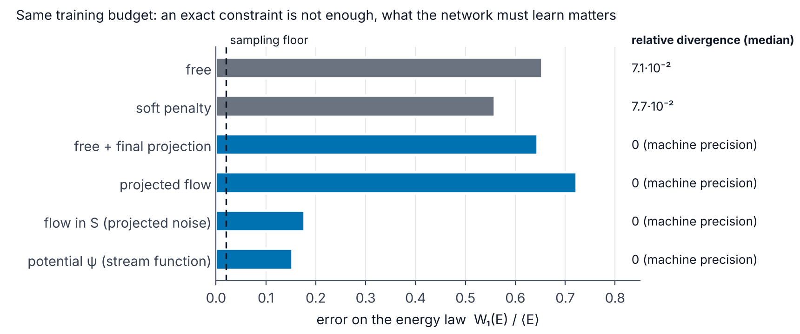
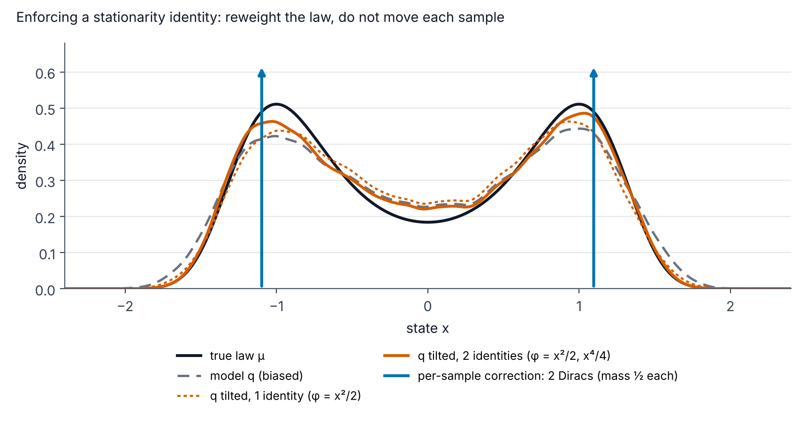

Generative models under physical constraints
Preparation · level M2 → research · ≈ 30 h
Objectives
This module is the last one of the curriculum. It brings together the physics of the previous modules (zero divergence, symmetries, energy budgets, invariant measures) and the generative models of Module 7 (diffusion, flow matching) to answer the central question of the internship: how can a model that generates fields be made to respect a physical law? By the end of the thirty hours of planned work, you will be able to:
- classify a physical constraint into one of the four classes of the internship (local linear, local nonlinear, symmetry, statistical “in distribution”), say whether it bears on each sample or on the distribution, and choose the appropriate mechanism (architecture, projection, penalty, guidance, tilting of the distribution);
- build a generator whose outputs are divergence-free by construction (stream function in 2D, vector potential in 3D with a choice of gauge), and prove that an equivariant velocity field transports an invariant base distribution onto an invariant distribution;
- prove that, if the data live in a linear subspace S, the orthogonal component of the optimal flow is exactly -\mathbf{x}_\perp/(1-t), deduce from it the behavior of free generation, of the final projection and of the projected flow, and check it numerically;
- explain the Jensen gap and why a penalty on the endpoint prediction is unbiased for a linear constraint but biased for a nonlinear one; situate PIDM, DiffusionPDE and the comparison of Genuist et al. (2026);
- write the conditional velocity field of guided flow matching, implement DPS-type guidance and measure its bias on an example where the posterior distribution is known;
- prove the stationarity identities \mathbb{E}_\mu[\mathcal{L}\varphi] = 0, show that imposing such an identity sample by sample destroys the distribution, and impose the identity by exponential tilting (I-projection) while knowing its limits;
- evaluate a generator of MHD fields with physical metrics: relative divergence, spectra, helicities, budgets, topology (Betti numbers, persistent homology, magnetic null points);
- read critically the five papers cited in the internship offer and say what each one brings to the internship.
Prerequisites
The starting point is the M1–M2 level reached at the end of the previous modules. You need to be able to handle the divergence, the curl, the Helmholtz–Hodge decomposition and the Leray projection in Fourier space (Vector calculus and Fourier analysis), to know the equations of incompressible MHD, their energy budget and the symmetry \mathbf{B} \to -\mathbf{B} (Electromagnetism, MHD and the dynamo effect), to know what an invariant measure and an infinitesimal generator are (Dynamical systems, bifurcations and invariant measures), and to master conditional expectation, the Kullback–Leibler divergence and Wasserstein distances (Probability, statistics and optimal transport).
Above all, the module assumes that the module Generative models: diffusion and flow matching has been mastered: flow matching (Lipman et al. 2023), linear path \mathbf{x}_t = (1-t)\mathbf{x}_0 + t\mathbf{x}_1, conditional flow matching loss, optimal velocity field v^\star(\mathbf{x}, t) = \mathbb{E}[\mathbf{x}_1 - \mathbf{x}_0 \mid \mathbf{x}_t = \mathbf{x}], sampling with the Euler scheme. On the code side, you need to know how to train a small network with PyTorch (Deep learning for physics). The module Fluid mechanics and turbulence is used in Chapter 7 (energy spectra).
Notation: that of the site (specs/notations.md). The flow time t \in [0, 1] is not a physical time: t = 0 is the noise, t = 1 the data. The velocity field of the flow v_\theta must not be confused with the physical velocity \mathbf{u}.
Work plan
The level indicates the difficulty: 1 for the foundations, 2 for the core of the module, 3 for what already touches on the research questions of the internship. It never decreases from one session to the next.
| Session | Duration | Level | Content | Exercises |
|---|---|---|---|---|
| 1 | 2.5 h | 1 | Chapter 1: framework, per-sample and distributional constraints, the four classes, mechanisms | 1 |
| 2 | 3 h | 1 | Chapter 2, Section 2.1: potentials, stream function, vector potential and gauge | 2 |
| 3 | 3 h | 2 | Chapter 2, Section 2.2: equivariance, symmetrization, symmetry \mathbf{B} \to -\mathbf{B} | 4, 5 |
| 4 | 4 h | 2 | Chapter 3: Leray projection, optimal flow on a subspace, projected flow, numerical experiment | 3, 6 |
| 5 | 3 h | 2 | Chapter 4: penalties, Jensen gap, PIDM, DiffusionPDE, comparison of Genuist et al. | 7, 8 |
| 6 | 3 h | 3 | Chapter 5: guidance at sampling time (DPS, Universal guidance) | 12 |
| 7 | 4 h | 3 | Chapter 6: stationarity identities, I-projection, stationarity loss | 9, 10, 11, 14, 16 |
| 8 | 3.5 h | 3 | Chapter 7: physical evaluation (spectra, helicities, budgets, topology) | 13 |
| 9 | 4 h | 3 | Chapter 8: guided reading of the five references of the offer; comparison protocol | 15 |
| Total | 30 h | 8 chapters | 16 exercises |
Each session ends with the indicated exercises, to be done before reading their solution. The code blocks are short (less than 30 seconds each on a CPU, with a single thread): copy them, run them, then modify them. The outputs copied as comments are those obtained by running the blocks as they are.
Three kinds of results appear in this module, and they must be told apart. Published results are attributed to their authors, with the reference. Results measured on this page come from the code blocks, at small scale and for a single random seed. The experiments of the internship are described in the report: this module refers to it without copying its numbers.
1. Taxonomy of physical constraints
“Enforcing physics” on a generative model can mean very different things. The zero divergence of \mathbf{B} holds for each field; the energy budget of a stationary turbulent state holds only on average; the symmetry \mathbf{B} \to -\mathbf{B} holds only for the distribution. Confusing these cases leads to errors: one can destroy the distribution one is trying to learn by imposing, sample by sample, a constraint that only holds on average. This chapter fixes the vocabulary used throughout the module and in the report.
1.1 The framework
Definition 1.1 — Framework of the internship A discretized physical system is described by a state \mathbf{x} \in \mathbb{R}^D (for instance the values of \mathbf{u} and \mathbf{B} on a grid, or their Fourier coefficients), which evolves according to
\mathrm{d}\mathbf{x} = F_{\boldsymbol\lambda}(\mathbf{x})\,\mathrm{d}t + \Sigma\,\mathrm{d}W_t,
where \boldsymbol\lambda gathers the control parameters (Re, Rm, material properties) and where \Sigma = 0 in the deterministic case. The data are snapshots of a statistically stationary state: their distribution is an invariant measure \mu_{\boldsymbol\lambda} of the dynamics. The conditional generative model produces a distribution q_\theta(\cdot\mid\boldsymbol\lambda), the image of the Gaussian distribution \mathcal{N}(0, I) under the time-1 flow of the equation \dot{\mathbf{z}} = v_\theta(\mathbf{z}, t, \boldsymbol\lambda).
Two objects therefore coexist: a sample \mathbf{x} (a field) and a distribution (\mu_{\boldsymbol\lambda} or q_\theta). A physical constraint can bear on either one.
Definition 1.2 — Per-sample constraint, distributional constraint A per-sample constraint is a set \mathcal{C} \subset \mathbb{R}^D such that \mu_{\boldsymbol\lambda}(\mathcal{C}) = 1: almost every physical field belongs to \mathcal{C}. A distributional constraint is a property of the measure \mu_{\boldsymbol\lambda} that is not of this form, for instance an equality of expectations \mathbb{E}_{\mu_{\boldsymbol\lambda}}[g] = 0 or an invariance g_\#\mu_{\boldsymbol\lambda} = \mu_{\boldsymbol\lambda}, where g_\#\mu denotes the pushforward of \mu by the map g.
A per-sample constraint can be checked on a single generated field. A distributional constraint can only be checked on a set of generated fields, with a statistical error. This difference determines everything that follows.
1.2 The four classes
Definition 1.3 — The four classes of constraints We distinguish four classes, denoted C1 to C4 in the report and in the PhD proposal.
- C1, local linear: \mathbf{x} \in S with S = \ker A a linear subspace. Examples: \nabla\cdot\mathbf{u} = 0, \nabla\cdot\mathbf{B} = 0, homogeneous linear boundary conditions (\mathbf{u} = \mathbf{0} or \mathbf{B}\cdot\mathbf{n} = 0 on a wall).
- C2, local nonlinear: c(\mathbf{x}) = 0 with c nonlinear. Examples: residual of a stationary PDE (the Darcy equation, a magnetohydrostatic equilibrium), an algebraic constraint such as |\mathbf{x}| = 1.
- C3, symmetry: g_\#\mu_{\boldsymbol\lambda} = \mu_{\boldsymbol\lambda} for every g in a group G. Examples: \mathbf{B} \to -\mathbf{B}, the rotation R_\pi of the VKS experiment in exact counter-rotation, (Q, D, V) \to (-Q, -D, V) in the Gissinger model.
- C4, statistical: \mathbb{E}_{\mu_{\boldsymbol\lambda}}[\mathcal{L}_{\boldsymbol\lambda}\varphi] = 0 for test functions \varphi, where \mathcal{L}_{\boldsymbol\lambda} is the generator of the dynamics (Chapter 6). Example: the mean energy budget of a stationary state, mean injection equal to mean dissipation.
C1 and C2 are per-sample constraints; C3 and C4 are distributional constraints.
One might think that the evolution equations themselves provide a per-sample constraint: “the generated field must satisfy the PDE”. This is not the case for a snapshot of an unsteady dynamics, and the following proposition states it in finite dimension.
Proposition 1.4 — A snapshot does not “satisfy” an evolution PDE Let \dot{\mathbf{x}} = F(\mathbf{x}) with F locally Lipschitz on an open set U \subset \mathbb{R}^D. Every point \mathbf{x}^\ast \in U is the state, at a given time, of a solution of the equation. For a snapshot, the residual \partial_t\mathbf{x} - F(\mathbf{x}) cannot be computed (the time derivative is not observed), and any quantity of the form \mathrm{d}\varphi/\mathrm{d}t = \nabla\varphi\cdot F(\mathbf{x}) is an identity computable on the snapshot, not a constraint.
Proof. By the Cauchy–Lipschitz theorem, the problem \dot{\mathbf{x}} = F(\mathbf{x}), \mathbf{x}(0) = \mathbf{x}^\ast has a solution on an interval [0, \tau) with \tau > 0; \mathbf{x}^\ast is its state at time 0. No property of \mathbf{x}^\ast alone can therefore distinguish a “physical” state from a “non-physical” state in the sense of the evolution equation. If \varphi is differentiable, the chain rule gives \frac{\mathrm{d}}{\mathrm{d}t}\varphi(\mathbf{x}(t)) = \nabla\varphi(\mathbf{x})\cdot F(\mathbf{x}), an expression that depends only on the state. ∎
In practice, the explicit per-sample constraints provided by the physical model are therefore those that do not involve time: C1-type conditions (divergence, boundary conditions) and diagnostic relations (for instance the pressure, which is determined by the velocity). One nuance is in order, however. The snapshots of a stationary regime live on the attractor, which has zero Lebesgue measure for a dissipative dynamics (Remark 6.5): “\mathbf{x} belongs to the attractor” is indeed a per-sample constraint in the sense of Definition 1.2. But the equation does not provide it in any computable form; it is up to the data to teach it.
For a PDE, the statement requires care about the function space (regularity, compatibility conditions), but the message is the same: apart from what the data teach, the information that the evolution equation provides about stationary snapshots is statistical. It goes through the distribution, and this is the subject of Chapter 6. A stationary PDE (such as the Darcy equation in PIDM), on the contrary, gives a genuine per-sample constraint of class C2, since every solution field satisfies it.
Example 1.5 — What holds for each field and what holds for the distribution in forced MHD Consider snapshots (\mathbf{u}, \mathbf{B}) of forced MHD turbulence in a periodic box, at fixed parameters (Re, Rm). Each snapshot satisfies \nabla\cdot\mathbf{u} = 0 and \nabla\cdot\mathbf{B} = 0 (C1). On each snapshot, one computes the injection P = \langle\mathbf{u}\cdot\mathbf{f}\rangle and the dissipation \varepsilon = \nu\langle|\nabla\mathbf{u}|^2\rangle + \eta\langle|\nabla\mathbf{B}|^2\rangle; the difference P - \varepsilon = \mathrm{d}E/\mathrm{d}t fluctuates from one snapshot to the next and has no reason to vanish. Only the mean vanishes, \mathbb{E}[P] = \mathbb{E}[\varepsilon] (C4). Finally, the distribution of the snapshots is invariant under \mathbf{B} \to -\mathbf{B} if the dynamics visits both polarities, but each snapshot has a given polarity (C3).
![Panel a: four columns C1 to C4. C1 shows points aligned on a line and an orthogonal projection P; C2 an arc of a parabola and the Jensen gap between the mean of two points and the curve; C3 two clouds symmetric under a reflection g; C4 a density of dE/dt centered at zero. At the bottom, the mechanism suited to each class. Panel b: three densities of dE/dt: the spread-out true distribution, the per-sample projection reduced to a Dirac at 0, the distributional correction, recentered and spread out.](../../../figures/taxonomie/figure/out/taxonomie-en.png)
1.3 A mechanism for each class
A generative model offers five places to act: the architecture (what the network can produce), the projection (correcting the state during or after sampling), the penalty (a term added to the training loss), the guidance (modifying the velocity field at sampling time, without retraining), and the tilting of the distribution (reweighting the samples, or training towards a reweighted distribution). The following table summarizes the choices advocated in this module; Chapters 2 to 6 justify them one by one.
| Class | Holds for | Exact mechanism | Approximate mechanism | Chapter |
|---|---|---|---|---|
| C1 local linear | each sample | potentials (architecture); orthogonal projection (Leray) | penalty, guidance | 2, 3, 4 |
| C2 local nonlinear | each sample | nonlinear projection (Gauss–Newton, PCFM) | penalty (Jensen gap), guidance | 3, 4, 5 |
| C3 symmetry | the distribution | equivariant velocity field and invariant base distribution | data augmentation | 2 |
| C4 statistical | the distribution | exponential tilting (I-projection) of the generated distribution | stationarity loss during training | 6 |
Two category errors come up often. The first consists in imposing a constraint of class C3 or C4 on each sample: one obtains a distribution concentrated on a set that the true distribution does not charge (Corollary 6.4). The second consists in handling a C1 constraint with a penalty: the violation decreases without vanishing, whereas an exact mechanism exists and costs almost nothing.
The following code illustrates classes C3 and C4 on the simplest possible system: a particle in a double well, subject to noise. The dynamics is symmetric under x \to -x; so is its stationary distribution, but each sample has a sign. The stationarity identity \mathbb{E}_\mu[\mathcal{L}\varphi] = 0 (proved in Chapter 6) holds on average, whereas \mathcal{L}\varphi fluctuates from one sample to the next.
import numpy as np
rng = np.random.default_rng(0)
# Noisy double well: dx = F(x) dt + sigma dW, F(x) = x - x^3 (potential V = x^4/4 - x^2/2).
# The dynamics is symmetric (x -> -x); its stationary distribution is mu(x) ∝ exp(-2V/sigma^2).
sigma, dt, nsteps, N = 0.7, 0.01, 4000, 4000
F = lambda x: x - x**3
x = rng.normal(size=N)
for _ in range(nsteps): # Euler-Maruyama, 4000 independent particles
x += F(x) * dt + sigma * np.sqrt(dt) * rng.normal(size=N)
# Generator L phi = F phi' + (sigma^2/2) phi''
L_energie = lambda x: x * F(x) + sigma**2 / 2 # phi = x^2/2 (an "energy")
L_impair = lambda x: F(x) # phi = x
# Exact values by quadrature of the stationary density
g = np.linspace(-3, 3, 6001)
p = np.exp(-2 * (g**4 / 4 - g**2 / 2) / sigma**2)
p /= np.trapezoid(p, g)
print("C3 (symmetry) : each sample has a sign ; fraction x > 0 =", f"{np.mean(x > 0):.3f}")
print(" mean of x (distribution) =", f"{x.mean():+.3f}", "(exact 0)")
for nom, Lphi in [("phi = x^2/2", L_energie), ("phi = x", L_impair)]:
v = Lphi(x)
exact = np.trapezoid(Lphi(g) * p, g)
print(f"C4 {nom:11s} : E[L phi] = {v.mean():+.3f} ± {v.std() / np.sqrt(N):.3f} (exact {exact:+.1e}),"
f" per-sample std = {v.std():.3f}, fraction |L phi| < 0.01 : {np.mean(np.abs(v) < 0.01):.3f}")
# output:
# C3 (symmetry) : each sample has a sign ; fraction x > 0 = 0.499
# mean of x (distribution) = -0.001 (exact 0)
# C4 phi = x^2/2 : E[L phi] = -0.009 ± 0.013 (exact +6.9e-18), per-sample std = 0.813, fraction |L phi| < 0.01 : 0.006
# C4 phi = x : E[L phi] = -0.006 ± 0.010 (exact +2.1e-17), per-sample std = 0.613, fraction |L phi| < 0.01 : 0.014The mean of \mathcal{L}\varphi vanishes up to statistical error (about one standard deviation of the mean), whereas its per-sample standard deviation is 0.6 to 0.8: fewer than 2% of the samples have |\mathcal{L}\varphi| < 0.01. A constraint “\mathcal{L}\varphi(\mathbf{x}) = 0 for each \mathbf{x}” would therefore reject almost all of the true distribution.
Key takeaways — chapter 1
- A constraint bears either on each sample (\mu(\mathcal{C}) = 1) or on the distribution (expectation, invariance).
- Four classes: C1 local linear and C2 local nonlinear (per sample), C3 symmetry and C4 statistical (in distribution).
- A snapshot of an unsteady dynamics does not “satisfy” the evolution equation: \mathrm{d}\varphi/\mathrm{d}t is a computable identity; only its mean under the stationary distribution is constrained.
- A mechanism for each class: architecture or projection for C1, nonlinear projection or penalty for C2, equivariance for C3, tilting or a distributional loss for C4.
2. Hard constraints through the architecture
The safest way to enforce a constraint is to make its violation impossible: if the network can only produce divergence-free fields, or only symmetric distributions, no learning error can break the constraint. This chapter treats the two cases where this is possible and cheap: potentials for C1, equivariance for C3.
2.1 Generating potentials
Proposition 2.1 — Linear constraint by construction Let S \subset \mathbb{R}^D be a subspace and \mathcal{C} : \mathbb{R}^m \to \mathbb{R}^D a map (the “decoder”) such that \mathrm{Im}\,\mathcal{C} \subset S. If the model generates \mathbf{z} \sim q_{\mathbf{z}} and then returns \mathbf{x} = \mathcal{C}(\mathbf{z}), the generated distribution satisfies q(S) = 1, whatever q_{\mathbf{z}}, hence whatever the quality of the learning.
Proof. q(S) = q_{\mathbf{z}}(\mathcal{C}^{-1}(S)) = q_{\mathbf{z}}(\mathbb{R}^m) = 1, since \mathcal{C}^{-1}(S) = \mathbb{R}^m as soon as the image of \mathcal{C} is contained in S. ∎
The proposition is trivial; all the interest lies in the choice of \mathcal{C}. In 2D, the stream function provides the decoder: \mathbf{u} = \nabla^\perp\psi = (\partial_y\psi, -\partial_x\psi) satisfies \nabla\cdot\mathbf{u} = \partial_x\partial_y\psi - \partial_y\partial_x\psi = 0 for every twice-differentiable function \psi. This is exactly what FunDiff (Wang et al. 2026) does on the Kolmogorov flow: the decoder produces \psi, the velocity is obtained by differentiation, and the authors report a “negligible” predicted divergence, against a much larger divergence without this construction (figures only, no numerical value in the text). Likewise, the 2D magnetic field is written \mathbf{B} = \nabla^\perp a.
In 3D, the generalization is the vector potential: \mathbf{B} = \nabla\times\mathbf{A} satisfies \nabla\cdot\mathbf{B} = 0 for every \mathbf{A}. But the map \mathbf{A} \mapsto \nabla\times\mathbf{A} is not injective: \mathbf{A} and \mathbf{A} + \nabla\chi give the same \mathbf{B}. For a generative model, this redundancy raises an identifiability problem: if the training data are potentials taken in arbitrary gauges, the distribution of \mathbf{A} is not defined by the physics.
Definition 2.2 — Coulomb gauge on the torus On the torus \mathbb{T}^3 = [0, 2\pi)^3, a divergence-free, zero-mean field \mathbf{B} admits a vector potential in the Coulomb gauge, that is, such that \nabla\cdot\mathbf{A} = 0 and \langle\mathbf{A}\rangle = \mathbf{0}. In Fourier space, for \mathbf{k} \neq \mathbf{0}:
\hat{\mathbf{A}}_{\mathbf{k}} = \frac{i\,\mathbf{k}\times\hat{\mathbf{B}}_{\mathbf{k}}}{|\mathbf{k}|^2}, \qquad \hat{\mathbf{A}}_{\mathbf{0}} = \mathbf{0}.
Proposition 2.3 — Existence and uniqueness of the Coulomb potential On the torus, for every square-integrable, divergence-free, zero-mean \mathbf{B}, the field \mathbf{A} of Definition 2.2 satisfies \nabla\times\mathbf{A} = \mathbf{B}, \nabla\cdot\mathbf{A} = 0, and it is the only zero-mean field with these two properties. Consequently, the map \mathbf{A} \mapsto \nabla\times\mathbf{A} is a bijection from zero-mean Coulomb fields onto zero-mean divergence-free fields, and the distribution of \mathbf{B} determines that of its Coulomb potential.
Proof. In Fourier space, the curl reads \widehat{\nabla\times\mathbf{A}}_{\mathbf{k}} = i\mathbf{k}\times\hat{\mathbf{A}}_{\mathbf{k}}. With the formula of Definition 2.2 and the vector triple product identity,
i\mathbf{k}\times\frac{i\,\mathbf{k}\times\hat{\mathbf{B}}_{\mathbf{k}}}{|\mathbf{k}|^2} = -\frac{\mathbf{k}(\mathbf{k}\cdot\hat{\mathbf{B}}_{\mathbf{k}}) - |\mathbf{k}|^2\hat{\mathbf{B}}_{\mathbf{k}}}{|\mathbf{k}|^2} = \hat{\mathbf{B}}_{\mathbf{k}},
since \mathbf{k}\cdot\hat{\mathbf{B}}_{\mathbf{k}} = 0 (zero divergence). Moreover \mathbf{k}\cdot(\mathbf{k}\times\hat{\mathbf{B}}_{\mathbf{k}}) = 0, hence \nabla\cdot\mathbf{A} = 0. For uniqueness, if \mathbf{A}_1 and \mathbf{A}_2 both qualify, their difference \mathbf{D} satisfies \mathbf{k}\times\hat{\mathbf{D}}_{\mathbf{k}} = \mathbf{0} and \mathbf{k}\cdot\hat{\mathbf{D}}_{\mathbf{k}} = 0 for every \mathbf{k} \neq \mathbf{0}: \hat{\mathbf{D}}_{\mathbf{k}} is both collinear with and orthogonal to \mathbf{k}, hence zero; and \hat{\mathbf{D}}_{\mathbf{0}} = \mathbf{0} by the zero-mean condition. The bijection follows, and the distribution of the Coulomb potential is the pushforward of the distribution of \mathbf{B} by the continuous linear map \mathbf{B} \mapsto \mathbf{A}. ∎
The mode \mathbf{k} = \mathbf{0} requires particular attention: a uniform field \mathbf{B}_0 is divergence-free but is the curl of no periodic field. A generator of periodic potentials therefore cannot produce a mean field; if one is needed (imposed field, large-scale dynamo in a box), it is generated separately, as three additional numbers.
Remark 2.4 — Bounded domains In a bounded domain such as the VKS or DRESDYN cylinder, the vector potential exists under zero-flux conditions through each connected component of the boundary, and uniqueness requires a boundary condition on \mathbf{A} in addition to \nabla\cdot\mathbf{A} = 0: either \mathbf{A}\cdot\mathbf{n} = 0, or \mathbf{A}\times\mathbf{n} = \mathbf{0}, the latter being possible only if \mathbf{B}\cdot\mathbf{n} = 0. If the domain is not simply connected, or if its boundary has several components, flux conditions on \mathbf{A} are also needed, which eliminate the harmonic fields (Amrouche, Bernardi, Dauge and Girault 1998; Amrouche and Seloula 2011). The boundary conditions on \mathbf{B} (matching to an exterior potential field, discontinuous permeability) then become conditions on \mathbf{A}, and the magnetic helicity \int\mathbf{A}\cdot\mathbf{B} depends on the gauge if \mathbf{B}\cdot\mathbf{n} \neq 0 (Berger and Field 1984). This is one of the obstacles to moving on to realistic dynamos.
Remark 2.5 — “Zero divergence” depends on the discrete operator On a grid, \nabla\cdot(\nabla\times\mathbf{A}) = 0 is exact only if the discrete divergence and curl are compatible: spectral derivatives, or finite differences on a staggered grid (Yee or MAC type). If one computes \mathbf{B} by Fourier and then its divergence by centered differences, one finds a truncation error that has nothing to do with the model. The divergence metric must therefore be computed with the same operator as the one that defines the constraint (Chapter 7).
The following code checks Proposition 2.3 and the two remarks on a random field of 16^3 points.
import numpy as np
rng = np.random.default_rng(1)
# Torus [0, 2pi)^3 discretized with n^3 points; spectral derivatives, exact on the represented modes.
n = 16
k1 = np.fft.fftfreq(n, d=1.0 / n)
K = np.stack(np.meshgrid(k1, k1, k1, indexing="ij")) # (3, n, n, n)
k2 = (K**2).sum(0); k2[0, 0, 0] = 1.0
garde = (np.abs(K) < n // 2).all(0) # the Nyquist modes are removed
fft, ifft = (lambda f: np.fft.fftn(f, axes=(-3, -2, -1))), (lambda f: np.fft.ifftn(f, axes=(-3, -2, -1)).real)
curl = lambda Ah: np.stack([1j * (K[1] * Ah[2] - K[2] * Ah[1]),
1j * (K[2] * Ah[0] - K[0] * Ah[2]),
1j * (K[0] * Ah[1] - K[1] * Ah[0])])
div = lambda Fh: (1j * K * Fh).sum(0)
# An "arbitrary" random vector potential (no gauge imposed), k^-2 spectrum
A = ifft(fft(rng.normal(size=(3, n, n, n))) * garde / k2)
Ah = fft(A)
Bh = curl(Ah); B = ifft(Bh)
rel = lambda Fh: np.linalg.norm(div(Fh)) / np.sqrt((k2 * (np.abs(Fh)**2).sum(0)).sum()) # |div| / |grad|
print("relative divergence of B = curl A :", f"{rel(Bh):.1e}")
# Gauge freedom: A + grad chi gives the same B
chi_h = fft(rng.normal(size=(n, n, n))) * garde / k2
Ah2 = Ah + 1j * K * chi_h
print("max |curl(A + grad chi) - curl A| :", f"{np.abs(ifft(curl(Ah2)) - B).max():.1e}")
# Coulomb gauge reconstructed from B: A_c = i k x B / |k|^2
Ach = 1j * np.cross(K, Bh, axis=0) / k2
print("relative |div A_c|, max |curl A_c - B| :", f"{rel(Ach):.1e}", f"{np.abs(ifft(curl(Ach)) - B).max():.1e}")
# Magnetic helicity <A.B>: identical in the three gauges (torus, zero-mean B)
H = lambda Ah_: np.mean((ifft(Ah_) * B).sum(0))
print("H_M with A, A + grad chi, A_c :", f"{H(Ah):.6f} {H(Ah2):.6f} {H(Ach):.6f}")
# Pitfall: measuring the divergence with ANOTHER discrete operator (centered differences)
h = 2 * np.pi / n
dc = lambda f, ax: (np.roll(f, -1, ax) - np.roll(f, 1, ax)) / (2 * h)
div_fd = dc(B[0], 0) + dc(B[1], 1) + dc(B[2], 2)
grad_fd = np.sqrt(sum(dc(B[i], j)**2 for i in range(3) for j in range(3)).mean())
print("relative divergence of B, finite diff. :", f"{np.sqrt((div_fd**2).mean()) / grad_fd:.1e}")
# output:
# relative divergence of B = curl A : 3.9e-17
# max |curl(A + grad chi) - curl A| : 1.4e-16
# relative |div A_c|, max |curl A_c - B| : 3.4e-17 1.1e-16
# H_M with A, A + grad chi, A_c : 0.002351 0.002351 0.002351
# relative divergence of B, finite diff. : 2.2e-01Three results stand out. The divergence of \nabla\times\mathbf{A} vanishes to machine precision, whatever the gauge. The magnetic helicity does not depend on the gauge on the torus (this is proved in Proposition 7.4). On the other hand, the same field \mathbf{B}, exactly solenoidal in the spectral sense, has a relative “divergence” of 22% if one measures it with centered differences: this number only measures the incompatibility of the two operators, made worse here by the energy present at small scales. The Nyquist modes are removed because the spectral derivative of a Nyquist mode is not defined in a real-valued way.
Other architectures give divergence-free fields without going through an explicit scalar or vector potential. Richter-Powell, Lipman and Chen (2022) build divergence-free networks in any dimension from differential forms (the row-wise divergence of an antisymmetric matrix field vanishes), at a cost quadratic in the dimension; they show that these networks are universal on the torus up to a constant field. For the internship, the vector potential is the most direct route in 3D, and these networks are an alternative when one wants a field defined at every point (functional decoder).
2.2 Equivariance and invariant distributions
The symmetry \mathbf{B} \to -\mathbf{B} is a property of the distribution, not of the fields. The right tool is therefore not a constraint on the output, but a constraint on the transport that builds the distribution.
Definition 2.6 — Group action, invariance, equivariance Let G be a finite group acting on \mathbb{R}^D by linear isometries \mathbf{x} \mapsto g\mathbf{x}. A distribution \mu is G-invariant if g_\#\mu = \mu for every g \in G, that is, if g\mathbf{X} has the same distribution as \mathbf{X} when \mathbf{X} \sim \mu. A velocity field v(\mathbf{x}, t) is G-equivariant if v(g\mathbf{x}, t) = g\,v(\mathbf{x}, t) for all g, \mathbf{x}, t.
Example 2.7 — Symmetries of the internship (a) In incompressible MHD, if (\mathbf{u}, \mathbf{B}) is a solution, so is (\mathbf{u}, -\mathbf{B}): the Lorentz force (\nabla\times\mathbf{B})\times\mathbf{B} is quadratic in \mathbf{B} and the induction equation is linear in \mathbf{B}. The action g(\mathbf{u}, \mathbf{B}) = (\mathbf{u}, -\mathbf{B}) is a linear isometry of order 2. (b) In the three-mode model of Gissinger (2012), the action is (Q, D, V) \to (-Q, -D, V). (c) In a square periodic box, an isotropically forced turbulence has a distribution invariant under the dihedral group of rotations by \pi/2 and reflections, which acts on a vector field by (g\mathbf{u})(\mathbf{x}) = R\,\mathbf{u}(R^{-1}\mathbf{x}). (d) In the VKS experiment in exact counter-rotation, the rotation R_\pi by an angle \pi about an axis perpendicular to the axis of the cylinder exchanges the two impellers.
Proposition 2.8 — Equivariant field and invariant base distribution give an invariant distribution Let v be a G-equivariant velocity field, regular enough for the equation \dot{\mathbf{z}} = v(\mathbf{z}, t) to have a unique solution \Phi_t(\mathbf{z}_0) on [0, 1], and \gamma a G-invariant base distribution (for instance \gamma = \mathcal{N}(0, I), invariant under every linear isometry). Then q = (\Phi_1)_\#\gamma is G-invariant.
Proof. First proof (uniqueness of solutions). Fix g \in G and \mathbf{z}_0. The curve \mathbf{y}(t) = g\,\Phi_t(\mathbf{z}_0) satisfies \dot{\mathbf{y}} = g\,v(\Phi_t(\mathbf{z}_0), t) = v(g\Phi_t(\mathbf{z}_0), t) = v(\mathbf{y}, t) by equivariance, and \mathbf{y}(0) = g\mathbf{z}_0. By uniqueness, \mathbf{y}(t) = \Phi_t(g\mathbf{z}_0): the flow commutes with g. Then, for the pushforward measure,
g_\# q = g_\#(\Phi_1)_\#\gamma = (g\circ\Phi_1)_\#\gamma = (\Phi_1\circ g)_\#\gamma = (\Phi_1)_\#(g_\#\gamma) = (\Phi_1)_\#\gamma = q.
Second proof (continuity equation). The density \rho_t of (\Phi_t)_\#\gamma solves \partial_t\rho_t + \nabla\cdot(\rho_t v) = 0 with \rho_0 = \gamma. Set \tilde\rho_t(\mathbf{x}) = \rho_t(g^{-1}\mathbf{x}), the density of g_\#\rho_t (the Jacobian of g is \pm 1). Since g is orthogonal and v equivariant, a direct computation with the chain rule gives \nabla\cdot(\tilde\rho_t v)(\mathbf{x}) = [\nabla\cdot(\rho_t v)](../../../prep/p8-contraintes-physiques/g^{-1}\mathbf{x}); hence \tilde\rho_t solves the same equation with the same initial datum \tilde\rho_0 = \gamma. By uniqueness of the solution of the continuity equation (Lipschitz field), \tilde\rho_t = \rho_t for every t, in particular at t = 1. ∎
This proposition is a special case of the result of Köhler, Klein and Noé (2020) on equivariant normalizing flows. It says something strong: the invariance of the generated distribution is exact, even if the network has learned the distribution poorly, and even if the training data are not symmetric. It remains to build an equivariant field and to check that this costs nothing in accuracy.
Proposition 2.9 — Symmetrization and flow matching loss For an arbitrary field v, the symmetrized field
v_{\mathrm{sym}}(\mathbf{x}, t) = \frac{1}{|G|}\sum_{g\in G} g^{-1}\,v(g\mathbf{x}, t)
is G-equivariant. If the data distribution \mu and the base distribution are G-invariant, the population flow matching loss \mathcal{J}(v) = \mathbb{E}\,\|v(\mathbf{x}_t, t) - (\mathbf{x}_1 - \mathbf{x}_0)\|^2 satisfies \mathcal{J}(v_{\mathrm{sym}}) \le \mathcal{J}(v).
Proof. Equivariance. For h \in G, the change of index g' = gh gives v_{\mathrm{sym}}(h\mathbf{x}, t) = \frac{1}{|G|}\sum_{g'} h\,g'^{-1}v(g'\mathbf{x}, t) = h\,v_{\mathrm{sym}}(\mathbf{x}, t).
Loss. If \mu and \gamma are invariant, the triple (g\mathbf{x}_0, g\mathbf{x}_1, g\mathbf{x}_t) has the same distribution as (\mathbf{x}_0, \mathbf{x}_1, \mathbf{x}_t) (the coupling is independent and the path is linear). With the isometry g, one obtains \mathcal{J}(g^{-1}v(g\,\cdot)) = \mathbb{E}\|g^{-1}v(g\mathbf{x}_t) - (\mathbf{x}_1 - \mathbf{x}_0)\|^2 = \mathbb{E}\|v(g\mathbf{x}_t) - (g\mathbf{x}_1 - g\mathbf{x}_0)\|^2 = \mathcal{J}(v). The functional \mathcal{J} is convex in v (square of a norm); by Jensen’s inequality applied to the average of the |G| fields g^{-1}v(g\,\cdot), \mathcal{J}(v_{\mathrm{sym}}) \le \frac{1}{|G|}\sum_g\mathcal{J}(g^{-1}v(g\,\cdot)) = \mathcal{J}(v). ∎
The optimal field v^\star is therefore itself equivariant when the data distribution is (it is the unique minimizer of the population loss). Imposing equivariance takes nothing away from the model class: the search is restricted to a set that contains the solution. Data augmentation (adding g\mathbf{x} for each \mathbf{x} of the training set) makes the empirical distribution invariant, hence the population minimizer equivariant, but the learned network is only approximately so. For a small finite group such as \{\mathrm{id}, \mathbf{B} \mapsto -\mathbf{B}\}, symmetrization costs two evaluations of the network; for the rotations and reflections of a grid, one uses equivariant convolutions (Cohen and Welling 2016).
The following code reproduces, in two dimensions, the situation of the internship: the true distribution is symmetric, but the training set is finite and unbalanced (a simulation of finite duration spent more time in one polarity than in the other). We compare free flow matching with flow matching whose field is antisymmetrized, v_{\mathrm{sym}}(\mathbf{x}) = \tfrac12(v(\mathbf{x}) - v(-\mathbf{x})).
import torch
torch.set_num_threads(1); torch.manual_seed(0)
# Symmetric true distribution (g: x -> -x, analogue of (Q, D, V) -> (-Q, -D, V)), but a FINITE
# and unbalanced training set: 700 points in the + lobe, 300 in the - lobe.
c = torch.tensor([1.5, 0.8])
data = torch.cat([c + 0.3 * torch.randn(700, 2), -c + 0.3 * torch.randn(300, 2)])
def mlp():
return torch.nn.Sequential(torch.nn.Linear(3, 64), torch.nn.SiLU(), torch.nn.Linear(64, 64),
torch.nn.SiLU(), torch.nn.Linear(64, 2))
def train(net, vfun, steps=1500):
opt = torch.optim.Adam(net.parameters(), lr=2e-3)
for _ in range(steps):
x1 = data[torch.randint(len(data), (256,))]
x0, t = torch.randn(256, 2), torch.rand(256, 1)
xt = (1 - t) * x0 + t * x1
loss = ((vfun(net, xt, t) - (x1 - x0))**2).sum(1).mean()
opt.zero_grad(); loss.backward(); opt.step()
libre = lambda net, x, t: net(torch.cat([x, t], 1))
equiv = lambda net, x, t: 0.5 * (libre(net, x, t) - libre(net, -x, t)) # v(-x) = -v(x) exactly
@torch.no_grad()
def sample(net, vfun, z, nsteps=100):
x = z.clone()
for i in range(nsteps):
t = torch.full((len(x), 1), i / nsteps)
x = x + vfun(net, x, t) / nsteps
return x
z = torch.randn(4000, 2)
for nom, vfun in [("free", libre), ("equivariant", equiv)]:
net = mlp(); train(net, vfun)
x, xm = sample(net, vfun, z), sample(net, vfun, -z)
print(f"{nom:12s}: fraction in the + lobe = {(x[:, 0] > 0).float().mean():.3f},"
f" max |Phi(-z) + Phi(z)| = {(x + xm).abs().max():.1e}")
# output:
# free : fraction in the + lobe = 0.688, max |Phi(-z) + Phi(z)| = 2.7e+00
# equivariant : fraction in the + lobe = 0.489, max |Phi(-z) + Phi(z)| = 0.0e+00The free model faithfully reproduces the imbalance of the training set (69% in the positive lobe), which is a sampling artifact. The equivariant model satisfies \Phi_1(-\mathbf{z}) = -\Phi_1(\mathbf{z}) exactly (the gap is zero, not merely small, because antisymmetrization is exact in floating-point arithmetic): by drawing the noises in pairs (\mathbf{z}, -\mathbf{z}), the fraction would be exactly 1/2; with 4000 independent draws, one observes 0.489, 1.4 standard deviations away from 0.5. This is the mechanism chosen for the symmetry (Q, D, V) \to (-Q, -D, V) in experiment E1 of the internship (report, E1): the stationarity identities of Chapter 6 do not fix the relative weights of two symmetric ergodic components, so the symmetry must be imposed separately.
Key takeaways — chapter 2
- A decoder whose image lies in S makes the C1 constraint exact whatever the quality of the learning: \mathbf{u} = \nabla^\perp\psi in 2D, \mathbf{B} = \nabla\times\mathbf{A} in 3D.
- The vector potential is only defined up to a gradient: the Coulomb gauge (\hat{\mathbf{A}}_{\mathbf{k}} = i\mathbf{k}\times\hat{\mathbf{B}}_{\mathbf{k}}/|\mathbf{k}|^2) is fixed so that the distribution of \mathbf{A} is well defined; the mean field is generated separately; in a bounded domain, the gauge and the boundary conditions are an obstacle.
- Zero divergence only makes sense with a given discrete operator, compatible with the curl.
- Equivariant velocity field + invariant base distribution ⇒ exactly invariant generated distribution; symmetrization does not degrade the loss when the data are invariant.
3. Hard constraints through projection
When one does not want to change the representation (one generates \mathbf{u} or \mathbf{B} directly, for instance because the decoder is imposed or because the geometry makes potentials awkward), one can correct the state by an orthogonal projection onto S. The Leray projection, seen in Module 1, is the central example. This chapter answers a precise question: at what point should one project, and why does the choice matter, given that the projection always makes the constraint exact?
3.1 The Leray projection
Definition 3.1 — Orthogonal projection onto solenoidal fields Let S \subset \mathbb{R}^D be the subspace of divergence-free discrete fields and P the orthogonal projector onto S (P^2 = P, P^{\mathsf{T}} = P). On the torus, P is the Leray projection, diagonal in Fourier space: for \mathbf{k} \neq \mathbf{0},
\widehat{(P\mathbf{u})}_{\mathbf{k}} = \Big(I - \frac{\mathbf{k}\mathbf{k}^{\mathsf{T}}}{|\mathbf{k}|^2}\Big)\hat{\mathbf{u}}_{\mathbf{k}},
and the mean mode is kept. We write \mathbf{x}_\parallel = P\mathbf{x} and \mathbf{x}_\perp = (I - P)\mathbf{x} for the components of \mathbf{x} in S and orthogonal to S.
Module 1 proves that P\mathbf{u} is the solenoidal field closest to \mathbf{u} in the L^2 norm, that P commutes with derivatives on the torus, and that the projection becomes a global Poisson problem in the presence of walls. Here, only linearity and orthogonality matter.
3.2 The optimal flow when the data live in a subspace
Proposition 3.2 — Decomposition of the optimal flow Assume \mu(S) = 1 and \mathbf{x}_0 \sim \mathcal{N}(0, I) independent of \mathbf{x}_1 \sim \mu, with \mathbf{x}_t = (1-t)\mathbf{x}_0 + t\mathbf{x}_1. Then, for t < 1, the optimal velocity field of flow matching reads
v^\star(\mathbf{x}, t) = \underbrace{\mathbb{E}\big[\mathbf{x}_1 - P\mathbf{x}_0 \,\big|\, P\mathbf{x}_t = P\mathbf{x}\big]}_{=:\,v_S(P\mathbf{x},\,t)\ \in\ S} \; - \; \frac{(I - P)\mathbf{x}}{1 - t}.
The component in S depends only on P\mathbf{x}, and the orthogonal component is explicit.
Proof. Write \mathbf{x}_1 - \mathbf{x}_0 = (\mathbf{x}_1 - P\mathbf{x}_0) - (I - P)\mathbf{x}_0. Since \mathbf{x}_1 \in S almost surely, (I - P)\mathbf{x}_t = (1 - t)(I - P)\mathbf{x}_0: the orthogonal component of the noise is a function of \mathbf{x}_t, and \mathbb{E}[(I-P)\mathbf{x}_0 \mid \mathbf{x}_t = \mathbf{x}] = (I - P)\mathbf{x}/(1 - t). For the other term, the isotropy of the Gaussian noise makes P\mathbf{x}_0 and (I - P)\mathbf{x}_0 independent (Gaussian vector with covariance I, uncorrelated components in a basis adapted to S \oplus S^\perp). The triple (\mathbf{x}_1, P\mathbf{x}_0, P\mathbf{x}_t) is therefore independent of (I - P)\mathbf{x}_t = (1-t)(I-P)\mathbf{x}_0. Conditioning on \mathbf{x}_t amounts to conditioning on the pair (P\mathbf{x}_t, (I-P)\mathbf{x}_t), and the second coordinate, being independent, can be removed from the conditioning. Finally \mathbf{x}_1 - P\mathbf{x}_0 \in S, hence so is its conditional expectation. ∎
Corollary 3.3 — Four consequences Under the assumptions of Proposition 3.2:
with the exact field v^\star, the orthogonal component of a trajectory satisfies \mathbf{x}_\perp(t) = (1 - t)\,\mathbf{x}_\perp(0): free generation lands exactly in S at t = 1;
the component in S obeys \dot{\mathbf{x}}_\parallel = v_S(\mathbf{x}_\parallel, t), which does not see \mathbf{x}_\perp; hence, with v^\star, free generation, free generation followed by a final projection, the projected flow (Section 3.3), the flow in S and the generation of potentials give the same distribution;
the differences observed between these mechanisms come only from the approximation error of the network and from what it is asked to learn, not from the target;
the orthogonal component of the target, -\mathbf{x}_\perp/(1 - t), is unbounded as t \to 1 outside S: it is a stiff restoring term that the network must represent.
Proof.
- The orthogonal component of the equation is \dot{\mathbf{x}}_\perp = -\mathbf{x}_\perp/(1 - t), whose solution is (1-t)\mathbf{x}_\perp(0). (b) Projecting the equation onto S gives \dot{\mathbf{x}}_\parallel = P v^\star = v_S(\mathbf{x}_\parallel, t); the initial distribution of \mathbf{x}_\parallel(0) = P\mathbf{x}_0 is \mathcal{N}(0, P) in all cases, and v_S is exactly the optimal field of the flow matching problem posed in S (noise P\mathbf{x}_0, data \mathbf{x}_1). For potentials, flow matching posed on \psi, with its own optimal field, transports the noise onto the distribution of \psi, the preimage of \mu under the linear bijection \psi \mapsto \nabla^\perp\psi from the space of (zero-mean) potentials onto S; the image of this distribution under the bijection is \mu. (c) follows from (b). (d) is immediate. ∎
Consequence (b) is important for reading published results: in the limit of perfect learning, all exact mechanisms are equivalent. What distinguishes them in practice is what the network must learn and what it sees as input. The following proposition specifies what remains of the orthogonal component with an imperfect network and the Euler scheme, the most widely used one.
Proposition 3.4 — Final divergence of a free generation integrated with Euler Write the orthogonal component of the network as (I-P)v_\theta(\mathbf{x}, t) = -\mathbf{x}_\perp/(1-t) + \mathbf{e}(\mathbf{x}, t), where \mathbf{e} is the error of the network with respect to the target of Proposition 3.2. With the explicit Euler scheme on the grid t_i = i h, h = 1/N, the final orthogonal component is exactly
\mathbf{x}_\perp^{(N)} = h\,\mathbf{e}\big(\mathbf{x}^{(N-1)}, t_{N-1}\big).
It depends only on the error of the network at the last step, at t = 1 - h: the errors of the previous steps are erased by the restoring term.
Proof. The Euler step reads \mathbf{x}_\perp^{(i+1)} = \mathbf{x}_\perp^{(i)} - h\,\mathbf{x}_\perp^{(i)}/(1 - t_i) + h\,\mathbf{e}_i = \frac{1 - t_{i+1}}{1 - t_i}\,\mathbf{x}_\perp^{(i)} + h\,\mathbf{e}_i, with \mathbf{e}_i = \mathbf{e}(\mathbf{x}^{(i)}, t_i). At the last step, 1 - t_N = 0, hence \mathbf{x}_\perp^{(N)} = 0\cdot\mathbf{x}_\perp^{(N-1)} + h\,\mathbf{e}_{N-1}. ∎
Two practical remarks follow. First, with the exact field (\mathbf{e} = 0), the fixed-step Euler scheme solves the orthogonal component exactly, whatever h (the factor telescopes). Second, a second-order scheme of Heun type, or a Runge–Kutta scheme, evaluates the field at t = 1 at the last step, where the orthogonal target is infinite outside S: these schemes require stopping the integration at t = 1 - \delta. But the essential point lies elsewhere: at the last step, the target -\mathbf{x}_\perp/h is a very stiff function of \mathbf{x}_\perp, which a network of reasonable size represents poorly; the residual divergence of a free generation measures this difficulty (Exercise 6).
3.3 Projected flow and flow in S
Definition 3.5 — Final projection, projected flow, flow in S With a field v_\theta and the Euler scheme:
- the final projection integrates freely from \mathbf{z} \sim \mathcal{N}(0, I), then returns P\mathbf{x}^{(N)};
- the projected flow starts from P\mathbf{z} and reprojects after each step: \mathbf{x}^{(i+1)} = P\big(\mathbf{x}^{(i)} + h\,v_\theta(\mathbf{x}^{(i)}, t_i)\big);
- the flow in S uses the projected flow at sampling time and a projected noise P\mathbf{x}_0 during training: the network is never evaluated outside S.
Proposition 3.6 — The projected flow stays in S The projected flow stays in S at every step, whatever v_\theta. With the exact field v^\star, it coincides step by step with the Euler scheme of the flow matching problem posed in S, hence it has the same limit distribution as the other mechanisms of Corollary 3.3.
Proof. Each iterate is the image of a vector under P, hence belongs to S. If \mathbf{x}^{(i)} \in S, then (I - P)\mathbf{x}^{(i)} = 0 and, by Proposition 3.2, P v^\star(\mathbf{x}^{(i)}, t_i) = v_S(\mathbf{x}^{(i)}, t_i); the step reads \mathbf{x}^{(i+1)} = \mathbf{x}^{(i)} + h\,v_S(\mathbf{x}^{(i)}, t_i), which is the Euler step of the problem posed in S, with the same initial datum P\mathbf{z} \sim \mathcal{N}(0, P). ∎
With a learned network, the projected flow has a defect that the proposition does not see. If v_\theta was trained with a full noise, at t < 1 it has only seen inputs whose orthogonal component is (1-t)\mathbf{x}_\perp(0), with a norm of order (1-t)\sqrt{\dim S^\perp}. The projected flow evaluates it on inputs with a zero orthogonal component: this is a distribution shift, whose effect depends on the network. The flow in S removes this shift, and also removes the stiff term from the target: during training, \mathbf{x}_1 - P\mathbf{x}_0 \in S.
The following interactive diagram isolates two typical defects of an imperfect network on an example where S is the horizontal axis of the plane and where the data form two bumps on this axis. The component of the field in S is exact; one can truncate the stiffness (the network can only represent -y/(1-t) down to 1 - t = \tau) and add a leakage of the orthogonal component into S (the network adds \kappa\,y to the horizontal velocity).
With \tau = 0 and \kappa = 0, one checks Corollary 3.3: the final orthogonal component vanishes to machine precision (Proposition 3.4 with \mathbf{e} = 0), and the error on the distribution in S only reflects the sampling error (2000 particles) and the Euler scheme. The truncation \tau > 0 leaves a final orthogonal component: this is the “divergence” of a free generation. The leakage \kappa > 0 distorts the distribution within S; the final projection cancels the divergence but not this distortion, whereas the projected flow, which keeps y = 0, removes it in this example.
3.4 Published work
Several recent works impose a hard constraint during sampling. They differ in the object being projected (the noisy state, the endpoint prediction, or both) and in the class of constraints they handle.
Projected diffusion models (Christopher, Baek and Fioretto 2024) project the state onto the feasible set \mathcal{C} after each Langevin step: \mathbf{x} \leftarrow P_{\mathcal{C}}(\mathbf{x} + \gamma\,\mathbf{g} + \sqrt{2\gamma}\,\boldsymbol\epsilon). For a convex set, the feasibility of the samples is guaranteed; for a non-convex set, the authors use a projection initialized in the interior, without a formal guarantee. The cost per sample increases, moderately on some tasks (26.89 s against 18.51 s on their materials example) and strongly on others (682.40 s against 13.79 s for human motion).
PCDM (Li, Buzzicotti, Bonaccorso and Biferale 2026, preprint) generates rotating 3D turbulence (64^3, obtained by Galerkin truncation of 256^3 simulations, Rossby number Ro \approx 0.1). The Leray projection is applied in Fourier space to the clean estimate produced by the network, and the noise used for the next step is recomputed from the projected estimate; the noisy state itself does not have to be solenoidal. The authors report a divergence that vanishes to machine precision and a training about five times shorter than their reference model (eight hundred thousand iterations, about 12 days, against four million, about 56 days). This is the closest 3D analogue of what the internship requires for \nabla\cdot\mathbf{u} = 0 and \nabla\cdot\mathbf{B} = 0.
ECI (Cheng, Han, Maddix, Ansari, Stuart, Mahoney and Wang 2025) handles, without any gradient computation, value constraints (initial and boundary conditions) and integral conservation laws on a functional flow matching model. Each step chains an extrapolation towards the end of the path, \hat{\mathbf{u}}_1 = \mathbf{u}_t + (1-t)v_\theta(\mathbf{u}_t), an exact correction of \hat{\mathbf{u}}_1, and an interpolation back to t': \mathbf{u}_{t'} = (1-t')\mathbf{u}_0 + t'\hat{\mathbf{u}}_1. The constraint is satisfied exactly if the correction is; on a Stokes problem, the authors measure 0.065 s per sample against 28.774 s for D-Flow (Ben-Hamu et al. 2024), a method that optimizes the initial noise by backpropagating through the whole flow.
PCFM (Utkarsh, Cai, Edelman, Gómez-Bombarelli and Rackauckas 2025) extends the idea to nonlinear constraints h(\mathbf{u}) = 0 (class C2): shooting towards the end of the path, Gauss–Newton projection \mathbf{u}_{\mathrm{proj}} = \mathbf{u}_1 - J^{\mathsf{T}}(JJ^{\mathsf{T}})^{-1}h(\mathbf{u}_1) with J the Jacobian of h, return through the interpolant, a few relaxed correction steps, and an exact final projection by Newton’s method. The constraint is satisfied to machine precision, and the final projection accounts for 1 to 3% of the total time according to the authors.
Genuist, Savin, Gatti and Clouteau (2026, preprint) compare, on the same diffusion model for 2D periodic flows, a Leray projection applied to the noise, the state and the denoiser (variant “M”), a projection at the output of the denoiser (“D”), a progressive projection (“PC”), an a posteriori projection per frame (“SC”), and a soft penalty (“L”); we come back to it in Chapter 4.
Finally, Neural conservation laws (Richter-Powell, Lipman and Chen 2022) belongs to the architecture approach (Chapter 2): the constraint is satisfied by construction, without projection.
| Method | What is projected | Constraint | Guarantee | Reported cost |
|---|---|---|---|---|
| Projected diffusion models | state after each Langevin step | convex set (or not) | exact if convex | ×1.4 to ×50 depending on the task |
| PCDM | clean estimate (Leray in Fourier space) | \nabla\cdot\mathbf{u} = 0 in 3D | machine precision | training ≈ 5 times shorter |
| Genuist et al., “M” | noise, state and denoiser | \nabla\cdot\mathbf{u} = 0 in 2D | machine precision | not quantified (spectral projection at each step) |
| ECI | extrapolated endpoint | values, integral conservation | exact if the correction is | 0.065 s against 28.774 s (D-Flow) |
| PCFM | endpoint, Gauss–Newton | nonlinear h(\mathbf{u}) = 0 | machine precision | final projection: 1 to 3% of the time |
3.5 Experiment: five ways of obtaining a divergence-free 2D field
The following code compares, at equal training budget, six variants on 2D periodic fields represented in a truncated Fourier basis (|k_x|, |k_y| \le 2, that is, 48 coefficients for \mathbf{u} and 24 for \psi). The data distribution is non-Gaussian: the overall amplitude is random. We measure the relative divergence \|\nabla\cdot\mathbf{u}\|/\|\nabla\mathbf{u}\| (exact by Parseval) and the error on the distribution of the energy E = \frac12\langle|\mathbf{u}|^2\rangle, through the Wasserstein distance W_1 divided by the mean energy.
import numpy as np, torch
from scipy.stats import wasserstein_distance
torch.set_num_threads(1); torch.manual_seed(0); rng = np.random.default_rng(0)
# Periodic 2D fields on [0, 2pi)^2 in a truncated Fourier basis (|kx|, |ky| <= 2):
# u(x) = sum_k a_k cos(k.x) + b_k sin(k.x), k in a half-plane (12 vectors), a_k, b_k in R^2.
ks = np.array([(i, j) for i in range(-2, 3) for j in range(-2, 3) if i > 0 or (i == 0 and j > 0)], float)
nk, kn = len(ks), np.linalg.norm(ks, axis=1)
e = np.stack([ks[:, 1], -ks[:, 0]], 1) / kn[:, None] # unit vector orthogonal to k
D = 4 * nk # 48 coefficients (order: cos/sin, k, component)
P = np.zeros((D, D)); C = np.zeros((D, 2 * nk))
for cs in range(2):
for i in range(nk):
j = 2 * (cs * nk + i)
P[j:j + 2, j:j + 2] = np.outer(e[i], e[i]) # Leray: I - k k^T / |k|^2
C[j:j + 2, (1 - cs) * nk + i] = (1 if cs == 0 else -1) * kn[i] * e[i] # u = grad^perp psi
K4 = np.concatenate([ks, ks]) # wave vector of each block (cos then sin)
def div_rel(x): # ||div u||_L2 / ||grad u||_L2, exact by Parseval
c = x.reshape(len(x), 2 * nk, 2)
return np.sqrt(((c * K4).sum(-1)**2).sum(1) / ((c**2).sum(-1) * (K4**2).sum(-1)).sum(1))
def donnees(N): # non-Gaussian distribution: random amplitude r ~ U(0.5, 1.5), psi spectrum in |k|^-2
r = rng.uniform(0.5, 1.5, (N, 1))
psi = r * np.tile(kn, 2) ** -2.0 * rng.normal(size=(N, 2 * nk))
return psi @ C.T, psi # (u, psi)
def entraine(X, penalite=0.0, bruit_dans_S=False, steps=1000):
X = torch.tensor(X, dtype=torch.float32); d = X.shape[1]
Pt = torch.tensor(P, dtype=torch.float32); Q = torch.eye(D) - Pt
net = torch.nn.Sequential(torch.nn.Linear(d + 1, 128), torch.nn.SiLU(), torch.nn.Linear(128, 128),
torch.nn.SiLU(), torch.nn.Linear(128, d))
opt = torch.optim.Adam(net.parameters(), lr=1e-3)
for _ in range(steps):
x1 = X[torch.randint(len(X), (256,))]; x0 = torch.randn_like(x1); t = torch.rand(256, 1)
if bruit_dans_S: x0 = x0 @ Pt.T # Gaussian noise supported on S
xt = (1 - t) * x0 + t * x1
v = net(torch.cat([xt, t], 1))
loss = ((v - (x1 - x0))**2).sum(1).mean()
if penalite: # soft penalty on the endpoint prediction x1_hat = xt + (1 - t) v
loss = loss + penalite * (((xt + (1 - t) * v) @ Q.T)**2).sum(1).mean()
opt.zero_grad(); loss.backward(); opt.step()
return net
@torch.no_grad()
def genere(net, x0, proj=None, n=50):
x = torch.tensor(x0, dtype=torch.float32)
Pt = None if proj is None else torch.tensor(proj, dtype=torch.float32)
if Pt is not None: x = x @ Pt.T
for i in range(n):
x = x + net(torch.cat([x, torch.full((len(x), 1), i / n)], 1)) / n
if Pt is not None: x = x @ Pt.T # projected flow: reproject at each step
return x.double().numpy()
U, Psi = donnees(4000); Uref, _ = donnees(2000)
# Normalization: one factor per block (cos or sin, k), shared by the 2 components, so P is unchanged;
# it brings the component in S to unit variance, like that of the noise.
su = np.repeat(np.sqrt((U.reshape(-1, 2 * nk, 2)**2).sum(2).mean(0)), 2); sp = Psi.std(0)
E = lambda x: 0.25 * (x**2).sum(1) # energy (1/2)<|u|^2> by Parseval
print(f"data : mean E = {E(U).mean():.2f}, median div_rel = {np.median(div_rel(U)):.1e}, "
f"W1(E)/E floor = {wasserstein_distance(E(donnees(2000)[0]), E(Uref)) / E(Uref).mean():.3f}")
z = rng.normal(size=(2000, D))
net_u, net_pen = entraine(U / su), entraine(U / su, penalite=1.0)
net_S, net_psi = entraine(U / su, bruit_dans_S=True), entraine(Psi / sp)
res = {"free": genere(net_u, z) * su}
res["final projection"] = res["free"] @ P.T
res["projected flow"] = genere(net_u, z, proj=P) * su
res["soft penalty"] = genere(net_pen, z) * su
res["flow in S"] = genere(net_S, z, proj=P) * su # projected noise during training AND at sampling
res["potential psi"] = (genere(net_psi, z[:, :2 * nk]) * sp) @ C.T
for nom, x in res.items():
print(f"{nom:17s}: median div_rel = {np.median(div_rel(x)):.1e}, W1(E)/E = {wasserstein_distance(E(x), E(Uref)) / E(Uref).mean():.3f}")
# output:
# data : mean E = 2.42, median div_rel = 0.0e+00, W1(E)/E floor = 0.020
# free : median div_rel = 7.1e-02, W1(E)/E = 0.654
# final projection : median div_rel = 0.0e+00, W1(E)/E = 0.645
# projected flow : median div_rel = 0.0e+00, W1(E)/E = 0.724
# soft penalty : median div_rel = 7.7e-02, W1(E)/E = 0.559
# flow in S : median div_rel = 0.0e+00, W1(E)/E = 0.178
# potential psi : median div_rel = 0.0e+00, W1(E)/E = 0.154
Four observations, to be read as observations on a small example and not as general laws. (1) The four exact mechanisms cancel the divergence, here exactly (zero on all 2000 samples): the components of \mathbf{k} are 0, \pm1 or \pm2, so the ratios between the coefficients involved are powers of 2 and the rounding errors cancel exactly; in general, one obtains machine precision (of order 10^{-7} in single precision). (2) The soft penalty does not reduce the divergence: Proposition 4.3 will explain why. (3) The final projection cancels the divergence of free generation without improving the distribution of the energy: it corrects what lies outside S, not what lies in S. (4) At equal budget, the two variants that never ask the network to learn the stiff orthogonal component (flow in S and potential) are clearly better than the others, and close to each other, as predicted by Corollary 3.3 (b); the projected flow, which evaluates a network trained with a full noise on inputs without an orthogonal component, is the worst. In the limit of perfect learning, all variants would give the same distribution: the gap measures the cost of learning a useless term.
The internship compares these mechanisms on forced 2D MHD fields conditioned on the diffusivity \eta, with a real convolutional network and five variants (free, penalty, final projection, projected flow, potentials): the results are in the report, experiment E2.
Key takeaways — chapter 3
- If \mu(S) = 1 and the noise is isotropic Gaussian, v^\star = v_S(P\mathbf{x}, t) - (I - P)\mathbf{x}/(1 - t): the component in S does not see the orthogonal component, which is an explicit and stiff restoring term.
- With v^\star, free generation, final projection, projected flow, flow in S and potentials give the same distribution; the practical differences come from the learning.
- With Euler, the final divergence of a free generation is exactly h times the orthogonal error of the network at the last step.
- Projecting at the end corrects the constraint, not the distribution in S; training with a noise supported on S (or generating potentials) avoids learning the stiff term.
- Published: projected diffusion (convex, guaranteed), PCDM (Leray on the estimate, 3D), ECI (gradient-free, value constraints), PCFM (nonlinear, Gauss–Newton).
4. Soft constraints: penalties
A constraint that one cannot make exact by construction or by projection (a complex stationary PDE residual, an inequality constraint) can be added to the training loss, as in a physics-informed neural network (PINN). This is simple and generic, but the constraint is then only approximately satisfied, and the way it is evaluated during the training of a generative model raises a specific difficulty: the Jensen gap.
4.1 Penalty on the endpoint prediction
Definition 4.1 — Penalized loss For a constraint c(\mathbf{x}) = 0 that holds for every data point, one adds to the flow matching loss a term evaluated on the endpoint prediction \hat{\mathbf{x}}_1 = \mathbf{x}_t + (1-t)\,v_\theta(\mathbf{x}_t, t):
\mathcal{J}_{\mathrm{pen}}(\theta) = \mathbb{E}\big\|v_\theta(\mathbf{x}_t, t) - (\mathbf{x}_1 - \mathbf{x}_0)\big\|^2 + \lambda\,\mathbb{E}\big[w(t)\,\|c(\hat{\mathbf{x}}_1)\|^2\big],
with a weight \lambda > 0 and a time weighting w(t) \ge 0.
One penalizes \hat{\mathbf{x}}_1 rather than \mathbf{x}_t because \mathbf{x}_t is noisy and satisfies no constraint; \hat{\mathbf{x}}_1 is the network’s estimate of the clean field towards which one is heading.
Proposition 4.2 — Unbiased penalty for a linear constraint, biased otherwise At the optimal field, \hat{\mathbf{x}}_1 = \mathbb{E}[\mathbf{x}_1 \mid \mathbf{x}_t]. If c(\mathbf{x}) = A\mathbf{x} is linear and A\mathbf{x}_1 = 0 almost surely, the penalty vanishes at v^\star: it does not move the optimum. If c is nonlinear, in general c(\mathbb{E}[\mathbf{x}_1\mid\mathbf{x}_t]) \neq \mathbb{E}[c(\mathbf{x}_1)\mid\mathbf{x}_t] = 0: the penalty is nonzero at the optimum of flow matching and moves the optimum. The gap c(\mathbb{E}[\mathbf{x}_1\mid\mathbf{x}_t]) - \mathbb{E}[c(\mathbf{x}_1)\mid\mathbf{x}_t] is called the Jensen gap.
Proof. For v^\star(\mathbf{x}, t) = \mathbb{E}[\mathbf{x}_1 - \mathbf{x}_0 \mid \mathbf{x}_t = \mathbf{x}], one has \hat{\mathbf{x}}_1 = \mathbb{E}[\mathbf{x}_t + (1-t)(\mathbf{x}_1 - \mathbf{x}_0) \mid \mathbf{x}_t] = \mathbb{E}[\mathbf{x}_1 \mid \mathbf{x}_t], since \mathbf{x}_t + (1-t)(\mathbf{x}_1 - \mathbf{x}_0) = \mathbf{x}_1. If c = A is linear, A\,\mathbb{E}[\mathbf{x}_1\mid\mathbf{x}_t] = \mathbb{E}[A\mathbf{x}_1\mid\mathbf{x}_t] = 0, so the penalty vanishes at v^\star, which also minimizes the first term: v^\star remains the minimizer of the sum. If c is nonlinear, the expectation does not commute with c; Example 4.4 gives an explicit case where the gap is nonzero. The gradient of the penalty at v^\star is then nonzero in general, and the optimum of \mathcal{J}_{\mathrm{pen}} differs from v^\star. ∎
For a linear constraint, the penalty is therefore harmless. But is it useful? The following proposition shows that it brings nothing new, and that it acts little where the divergence is decided.
Proposition 4.3 — A linear penalty is a reweighting of the orthogonal loss Under the assumptions of Proposition 3.2, with c = I - P (the orthogonal component), the penalty of Definition 4.1 equals
\big\|(I-P)\hat{\mathbf{x}}_1\big\|^2 = (1-t)^2\,\big\|(I-P)\big(v_\theta(\mathbf{x}_t, t) - v^\star(\mathbf{x}_t, t)\big)\big\|^2.
It is the error of the network on the orthogonal component, weighted by (1-t)^2, which vanishes at t = 1.
Proof. (I-P)\hat{\mathbf{x}}_1 = (I-P)\mathbf{x}_t + (1-t)(I-P)v_\theta. By Proposition 3.2, (I-P)v^\star(\mathbf{x}_t, t) = -(I-P)\mathbf{x}_t/(1-t), hence (I-P)\mathbf{x}_t = -(1-t)(I-P)v^\star and (I-P)\hat{\mathbf{x}}_1 = (1-t)(I-P)(v_\theta - v^\star). ∎
Proposition 3.4 showed that the final divergence is set by the orthogonal error of the network in the vicinity of t = 1. The penalty weights precisely this error by (1-t)^2, which is almost zero there: this is why, in the experiment of Section 3.5, the penalty does not reduce the divergence. A weighting w(t) = (1-t)^{-2} would compensate for this factor, but it would only amount to multiplying by 1 + \lambda the weight of the orthogonal component in the flow matching loss, which already contains it (Exercise 7).
Example 4.4 — The Jensen gap on a circle Take data uniform on the unit circle, with the nonlinear constraint c(\mathbf{x}) = |\mathbf{x}|^2 - 1 = 0. The posterior distribution of \mathbf{x}_1 given \mathbf{x}_t is supported on the circle; its mean is a convex combination of points of the circle, hence inside the disk, and c(\hat{\mathbf{x}}_1) < 0 strictly as long as the posterior distribution is not a Dirac. Exercise 8 gives the exact formula: \hat{\mathbf{x}}_1 = \frac{I_1(\kappa)}{I_0(\kappa)}\frac{\mathbf{x}_t}{|\mathbf{x}_t|} with \kappa = t|\mathbf{x}_t|/(1-t)^2, where I_0, I_1 are modified Bessel functions. A penalty \|c(\hat{\mathbf{x}}_1)\|^2 would therefore push \hat{\mathbf{x}}_1 towards the circle, that is, away from the true conditional expectation. For data on a line (linear constraint), the mean stays on the line.
The following interactive diagram shows the Jensen gap as a function of the flow time.
The same computation, in Python, gives the mean value of c(\hat{\mathbf{x}}_1) as a function of t.
import numpy as np
rng = np.random.default_rng(0)
# Data on the unit circle: nonlinear constraint c(x) = |x|^2 - 1 = 0 for EACH sample.
# Comparison: data on the line y = 0: linear constraint l(x) = x_2 = 0.
th = np.linspace(0, 2 * np.pi, 4000, endpoint=False)
cercle = np.stack([np.cos(th), np.sin(th)], 1)
droite = np.stack([np.linspace(-1.5, 1.5, 4000), np.zeros(4000)], 1)
def esperance_x1(xt, t, support):
"""E[x1 | x_t], exact (up to the discretization of the support): x_t | x1 ~ N(t x1, (1-t)^2 I)."""
d2 = ((xt[:, None, :] - t * support[None]) ** 2).sum(-1)
w = np.exp(-(d2 - d2.min(1, keepdims=True)) / (2 * (1 - t) ** 2))
return (w @ support) / w.sum(1, keepdims=True)
print(" t E[c(x1_hat)] circle E[|l(x1_hat)|] line")
for t in [0.2, 0.5, 0.8, 0.95, 0.99]:
res = []
for support in (cercle, droite):
x1 = support[rng.integers(len(support), size=2000)]
xt = (1 - t) * rng.normal(size=(2000, 2)) + t * x1 # x_t drawn from the distribution of the path
res.append(esperance_x1(xt, t, support))
c = (res[0] ** 2).sum(1) - 1
print(f"{t:5.2f} {c.mean():+.1e} (std {c.std():.1e}) {np.abs(res[1][:, 1]).max():.1e}")
# output:
# t E[c(x1_hat)] circle E[|l(x1_hat)|] line
# 0.20 -9.7e-01 (std 2.7e-02) 0.0e+00
# 0.50 -6.6e-01 (std 1.9e-01) 0.0e+00
# 0.80 -6.4e-02 (std 2.1e-02) 0.0e+00
# 0.95 -2.8e-03 (std 1.4e-04) 0.0e+00
# 0.99 -1.0e-04 (std 1.0e-06) 0.0e+00The Jensen gap is of order 1 at the beginning of the path and only disappears in the vicinity of t = 1: a nonlinear penalty evaluated on \hat{\mathbf{x}}_1 conflicts with the flow matching loss over most of the path. For the linear constraint, the gap is exactly zero.
4.2 PIDM: the constraint as a virtual observation
Bastek, Sun and Kochmann (ICLR 2025) treat the residual \mathcal{R} of a stationary PDE as a virtual observation \hat{\mathbf{r}} = 0, with Gaussian likelihood q_{\mathcal{R}}(\hat{\mathbf{r}} \mid \mathbf{x}_0^\ast) = \mathcal{N}(\hat{\mathbf{r}};\, \mathcal{R}(\mathbf{x}_0^\ast),\, \bar\Sigma_t I), which gives the loss (in the convention of diffusion models, where \mathbf{x}_0 denotes the clean data)
\mathcal{L}_{\mathrm{PIDM}} = \mathbb{E}\Big[\lambda_t\,\big\|\mathbf{x}_0 - \hat{\mathbf{x}}_0(\mathbf{x}_t, t)\big\|^2 + \frac{1}{2\bar\Sigma_t}\big\|\mathcal{R}\big(\mathbf{x}_0^\ast(\mathbf{x}_t, t)\big)\big\|^2\Big].
Two choices of \mathbf{x}_0^\ast are studied. The mean estimation takes \mathbf{x}_0^\ast = \hat{\mathbf{x}}_0 = \mathbb{E}[\mathbf{x}_0\mid\mathbf{x}_t] and suffers from the Jensen gap; the authors note that the estimate coincides with a true sample only at the last step, and that the conflict between the two terms grows with the noise level. The sample estimation takes for \mathbf{x}_0^\ast a sample obtained by a few steps of a deterministic sampler (DDIM), which “drastically improves” the alignment of the two losses according to the authors. On the Darcy equation, the residual is reduced by about two orders of magnitude compared with a standard diffusion model (values visible only in a figure), at the price of a training time increased by 23% (mean) or 69% (sample). On a topology optimization problem, the mean error on the residual goes from 1.86\times10^{-3} to 1.24\times10^{-3} in distribution.
4.3 DiffusionPDE: physics at sampling time
Huang, Yang, Wang and Park (NeurIPS 2024) jointly generate the coefficient of a PDE and its solution, from partial observations, by a DPS-type guidance (Chapter 5) that combines a loss on the observations and a loss on the PDE residual. The PDE guidance is only activated after 80% of the iterations, when \hat{\mathbf{x}}_1 is close to a true sample and the Jensen gap is small. With about 500 observations (3% of the points), they report a relative error of 2.5% on the forward Darcy problem. The authors themselves point out that the baseline methods were trained on complete observations; once optimized for the partial setting, they improve strongly. DiffusionPDE therefore sits at the boundary between penalty and guidance: the physics plays no role during training.
4.4 A published comparison: no strategy dominates
The most direct comparison between hard and soft constraints for the divergence is that of Genuist, Savin, Gatti and Clouteau (2026, preprint not peer reviewed). Their model is an autoregressive score-based diffusion (EDM-based) trained on 2D periodic flows: Fourier–Galerkin simulations at 512^2 brought down to 256^2 fields, which the authors call “Kolmogorov flow” but which are, according to their description, an unforced decaying turbulence with Ekman friction. They compare an unconstrained model (“\mathcal{V}”), the Leray projection variants described in Chapter 3, and a PINN-type soft penalty on the divergence (“L”). In distribution and in autoregressive rollout, the penalty is the worst: the authors write that it “performs poorly across all metrics”, with a squared error of 2.07\times10^{-4} and a residual divergence of 5.21\times10^{-3} in rollout, against 1.15\times10^{-4} and zero divergence for the progressive projection. But on an out-of-distribution Taylor–Green-type case, it is the soft variant that obtains the best overall performance (error 4.53\times10^{-4} against 1.49\times10^{-3} for the unconstrained model), even though its residual divergence is 1.84\times10^{-2}; only the progressive projection keeps a zero divergence on this case. Their conclusion is nuanced: strict constraints are better close to the training distribution and at short horizons, more flexible constraints can be preferable in long rollouts and out of distribution, and “no single strategy dominates”. This comparison concerns the divergence alone, in 2D hydrodynamics: the deliverable of the internship, a comparative study for parametric MHD fields, fills a real gap.
Key takeaways — chapter 4
- The penalty bears on \hat{\mathbf{x}}_1 = \mathbf{x}_t + (1-t)v_\theta, which equals \mathbb{E}[\mathbf{x}_1\mid\mathbf{x}_t] at the optimum.
- Linear constraint: unbiased penalty, but equivalent to a reweighting of the orthogonal error by (1-t)^2, almost zero where the divergence is decided.
- Nonlinear constraint: Jensen gap c(\mathbb{E}[\mathbf{x}_1\mid\mathbf{x}_t]) \neq \mathbb{E}[c(\mathbf{x}_1)\mid\mathbf{x}_t], of order 1 except near t = 1; PIDM circumvents it with a sample estimation (+69% cost), DiffusionPDE by guiding only at the end of the path.
- Genuist et al. (2026): soft penalty weak in distribution, better out of distribution on Taylor–Green; no strategy dominates.
5. Guidance at sampling time
Guidance modifies the velocity field at sampling time, without retraining the model. It is used to condition an unconditional model on observations (sparse measurements, data assimilation) or on a physical constraint treated as a virtual observation. This chapter writes down the exact conditional velocity field, then the approximations used in practice.
5.1 The conditional velocity field
Definition 5.1 — Posterior sampling Given a model of the distribution \mu (the prior) and an observation \mathbf{y} with likelihood p(\mathbf{y}\mid\mathbf{x}_1), one wants to sample the posterior distribution \mu(\mathbf{x}_1\mid\mathbf{y}) \propto \mu(\mathbf{x}_1)\,p(\mathbf{y}\mid\mathbf{x}_1). A “soft” constraint c(\mathbf{x}_1) \approx 0 fits into this framework with p(\mathbf{y}\mid\mathbf{x}_1) \propto \exp(-\|c(\mathbf{x}_1)\|^2/(2\sigma^2)).
Proposition 5.2 — Identities of the linear path and conditional velocity For the path \mathbf{x}_t = (1-t)\mathbf{x}_0 + t\mathbf{x}_1 with \mathbf{x}_0 \sim \mathcal{N}(0, I), let p_t be the density of \mathbf{x}_t and v the optimal field. For 0 < t < 1:
\mathbb{E}[\mathbf{x}_1\mid\mathbf{x}_t = \mathbf{x}] = \mathbf{x} + (1-t)\,v(\mathbf{x}, t), \qquad \nabla\log p_t(\mathbf{x}) = -\frac{\mathbf{x} - t\,v(\mathbf{x}, t)}{1 - t}.
The optimal field of the problem conditioned on \mathbf{y} (same path, data drawn from the posterior distribution) is
v_{\mathbf{y}}(\mathbf{x}, t) = v(\mathbf{x}, t) + \frac{1 - t}{t}\,\nabla_{\mathbf{x}}\log p_t(\mathbf{y}\mid\mathbf{x}), \qquad p_t(\mathbf{y}\mid\mathbf{x}) = \int p(\mathbf{y}\mid\mathbf{x}_1)\,p(\mathbf{x}_1\mid\mathbf{x}_t = \mathbf{x})\,\mathrm{d}\mathbf{x}_1.
Proof. One has \mathbf{x} = \mathbb{E}[\mathbf{x}_t\mid\mathbf{x}_t = \mathbf{x}] = (1-t)\,\mathbb{E}[\mathbf{x}_0\mid\mathbf{x}] + t\,\mathbb{E}[\mathbf{x}_1\mid\mathbf{x}] and v = \mathbb{E}[\mathbf{x}_1\mid\mathbf{x}] - \mathbb{E}[\mathbf{x}_0\mid\mathbf{x}]. Solving this linear system gives \mathbb{E}[\mathbf{x}_1\mid\mathbf{x}] = \mathbf{x} + (1-t)v and \mathbb{E}[\mathbf{x}_0\mid\mathbf{x}] = \mathbf{x} - t\,v. Next, given \mathbf{x}_1, \mathbf{x}_t \sim \mathcal{N}(t\mathbf{x}_1, (1-t)^2 I), with score -(\mathbf{x} - t\mathbf{x}_1)/(1-t)^2; Tweedie’s formula (the marginal score is the conditional expectation of the conditional score) gives \nabla\log p_t(\mathbf{x}) = -\mathbb{E}[\mathbf{x} - t\mathbf{x}_1\mid\mathbf{x}]/(1-t)^2 = -(1-t)\,\mathbb{E}[\mathbf{x}_0\mid\mathbf{x}]/(1-t)^2, hence the second identity. Inverting: v = (\mathbf{x} + (1-t)\nabla\log p_t)/t. For the conditioned problem, only the distribution of \mathbf{x}_1 changes; the density of \mathbf{x}_t becomes p_t(\mathbf{x}\mid\mathbf{y}) \propto p_t(\mathbf{x})\,p_t(\mathbf{y}\mid\mathbf{x}) (Bayes’ formula, since \mathbf{y} depends on \mathbf{x}_t only through \mathbf{x}_1), whose score is \nabla\log p_t + \nabla\log p_t(\mathbf{y}\mid\cdot). Substituting into v = (\mathbf{x} + (1-t)\nabla\log p_t)/t gives the announced formula. ∎
The missing term, \nabla\log p_t(\mathbf{y}\mid\mathbf{x}), is an integral over the posterior distribution of \mathbf{x}_1 given \mathbf{x}_t, which is unknown. All guidance methods are approximations of this term.
5.2 DPS: replacing the integral with the endpoint prediction
DPS guidance (diffusion posterior sampling, Chung, Kim, McCann, Klasky and Ye 2023) approximates p_t(\mathbf{y}\mid\mathbf{x}) \approx p(\mathbf{y}\mid\hat{\mathbf{x}}_1(\mathbf{x})): the posterior distribution of \mathbf{x}_1 is replaced by a Dirac at its mean. For a Gaussian likelihood \mathbf{y} = \mathcal{A}(\mathbf{x}_1) + \text{noise}, the guidance term is the gradient, through the network, of -\|\mathbf{y} - \mathcal{A}(\hat{\mathbf{x}}_1(\mathbf{x}))\|^2/(2\sigma_y^2). The authors analyze the error of this approximation as a Jensen gap, for which they give a bound that tends to 0 when the measurement noise \sigma_y becomes large (this is not the noise level of the path, which on the contrary worsens the gap at the beginning of generation), and in practice they normalize the guidance step by \|\mathbf{y} - \mathcal{A}(\hat{\mathbf{x}}_0)\|. The cost is one backpropagation through the network per step; they report about 95 seconds per image (1000 network evaluations) on their face images.
The approximation is crude at the beginning of the path: the posterior distribution of \mathbf{x}_1 given \mathbf{x}_t is wide, and DPS ignores it. Exercise 12 shows that, for a Gaussian prior and a linear observation, DPS has the correct mean but underestimates the variance of p_t(\mathbf{y}\mid\mathbf{x}), which makes the guidance too strong when t is small.
5.3 Universal guidance
Bansal, Chu, Schwarzschild, Sengupta, Goldblum, Geiping and Goldstein (ICLR 2024) generalize guidance to any differentiable guidance network f trained on clean data (a classifier, a segmentation network, a face model, or, for the internship, a PDE residual or a reduced model). Their method combines three ingredients. Forward guidance adds to the predicted noise the gradient of the loss \ell(\mathbf{c}, f(\hat{\mathbf{z}}_0)) evaluated on the clean prediction, like DPS. Backward guidance directly searches, with a few descent steps, for a correction \Delta of the clean prediction that minimizes \ell(\mathbf{c}, f(\hat{\mathbf{z}}_0 + \Delta)), then converts it back into a correction of the noise; it “gives priority” to the constraint. Per-step self-recurrence renoises the state obtained and redoes the step k times, which gives the model time to bring the state back towards realistic images. The hyperparameters must be tuned for each guidance network (for instance k = 8 and a step proportional to 10\sqrt{1-\alpha_t} for CLIP guidance), and the cost per step is multiplied by k times one evaluation and one backpropagation of f. For the internship, it is a way of guiding a field generator by a constraint or by a reduced model without retraining, at the price of delicate tuning.
5.4 Experiment: guidance satisfies the constraint but biases the distribution
The following code uses a prior whose optimal velocity field is known exactly (a mixture of three Gaussians in 2D) and a noisy linear observation y = \mathbf{a}\cdot\mathbf{x}_1 + \text{noise}. The reference posterior distribution is obtained by reweighting 400,000 draws from the prior. We compare DPS guidance, with the theoretical factor (1-t)/t multiplied by a coefficient \zeta.
import torch
torch.set_num_threads(1); torch.manual_seed(0)
# Prior: mixture of 3 Gaussians in 2D, whose optimal velocity field v*(x, t) is EXACT.
m = torch.tensor([[-2.0, 0.0], [2.0, 0.0], [0.0, 2.5]]); pi = torch.tensor([0.5, 0.3, 0.2]); s = 0.4
def v_exact(x, t): # x_t | component k ~ N(t m_k, (t^2 s^2 + (1-t)^2) I)
var = t**2 * s**2 + (1 - t)**2
logr = torch.log(pi) - ((x[:, None] - t * m)**2).sum(-1) / (2 * var)
r = torch.softmax(logr, 1) # responsibilities
ex1 = m + (t * s**2 / var) * (x[:, None] - t * m) # E[x1 | x_t, k]
return ((r[..., None] * ex1).sum(1) - x) / (1 - t) # (E[x1 | x_t] - x_t) / (1 - t)
# Observation y = a.x1 + noise (sigma_y); reference: posterior distribution by reweighting 400,000 prior draws
a, y, sy = torch.tensor([1.0, 1.0]), 1.0, 0.3
k = torch.multinomial(pi, 400_000, replacement=True)
xp = m[k] + s * torch.randn(400_000, 2)
w = torch.exp(-(y - xp @ a)**2 / (2 * sy**2)); w /= w.sum()
rp = xp @ a - y
def echantillonne(zeta=1.0, n=200, N=4000):
x = torch.randn(N, 2)
for i in range(n):
t = i / n
x = x.detach().requires_grad_(True)
v = v_exact(x, t)
x1h = x + (1 - t) * v # endpoint prediction
loglik = -((y - x1h @ a)**2).sum() / (2 * sy**2) # DPS: p(y | x_t) ~ p(y | x1_hat)
g, = torch.autograd.grad(loglik, x)
x = x + (v + zeta * (1 - t) / max(t, 0.05) * g) / n # v_y = v + ((1-t)/t) grad log p_t(y|x)
return x.detach()
print(f"reference : mode weights {[round(float(w[k == j].sum()), 3) for j in range(3)]}, "
f"residual a.x - y : mean {(w * rp).sum():+.2f}, std {((w * rp**2).sum() - (w * rp).sum()**2).sqrt():.2f}")
for zeta in [0.0, 1.0, 3.0]:
x = echantillonne(zeta)
mode = torch.cdist(x, m).argmin(1)
frac = [round(float((mode == k).float().mean()), 3) for k in range(3)]
r = x @ a - y
print(f"zeta = {zeta}: mode weights {frac}, residual a.x - y : mean {r.mean():+.2f}, std {r.std():.2f}")
# output:
# reference : mode weights [0.0, 0.874, 0.125], residual a.x - y : mean +0.23, std 0.27
# zeta = 0.0: mode weights [0.5, 0.288, 0.212], residual a.x - y : mean -0.92, std 2.19
# zeta = 1.0: mode weights [0.0, 0.502, 0.498], residual a.x - y : mean -0.14, std 0.06
# zeta = 3.0: mode weights [0.0, 0.8, 0.199], residual a.x - y : mean -0.10, std 0.01Without guidance (\zeta = 0), one recovers the prior. With the theoretical factor (\zeta = 1), the mode incompatible with the observation disappears, and the samples satisfy the observation better than the true posterior distribution (standard deviation of the residual 0.06 against 0.27): the guidance is overconfident. The weights of the two remaining modes are wrong (0.50 and 0.50 instead of 0.87 and 0.13), and increasing \zeta changes the weights without making them right while crushing the variance even further. For the internship, the lesson is twofold: guidance is a good tool to satisfy a constraint or observations on each sample, but a bad tool to obtain correct statistics (weights of the regimes, frequency of rare events), which belong to the next chapter.
Key takeaways — chapter 5
- On the linear path: \mathbb{E}[\mathbf{x}_1\mid\mathbf{x}_t] = \mathbf{x}_t + (1-t)v, score = -(\mathbf{x} - tv)/(1-t), and v_{\mathbf{y}} = v + \frac{1-t}{t}\nabla\log p_t(\mathbf{y}\mid\mathbf{x}).
- DPS replaces p_t(\mathbf{y}\mid\mathbf{x}) with p(\mathbf{y}\mid\hat{\mathbf{x}}_1): correct mean, variance ignored, guidance too strong at the beginning.
- Universal guidance: forward guidance, backward guidance and per-step recurrence, for any differentiable guidance network, without retraining, with hyperparameters to tune.
- Guidance satisfies per-sample constraints but biases the weights of the modes and the variance: it is not suited to distributional constraints.
6. Distributional constraints
The energy budget is the most frequently cited physical constraint, and the most frequently ill-posed one. For a stationary turbulent state, it does not hold on each snapshot: the energy fluctuates, and so does its derivative. It only holds on average. This chapter shows that this average is a special case of a family of identities, the stationarity identities, and that they are imposed by modifying the generated distribution, not the samples.
6.1 The energy budget is an identity
Proposition 6.1 — Energy budget of incompressible MHD on the torus For a regular solution of forced incompressible MHD on the torus (velocity \mathbf{u}, field \mathbf{B} in Alfvén units, forcing \mathbf{f}, viscosity \nu, magnetic diffusivity \eta), the energy E = \frac12\langle|\mathbf{u}|^2 + |\mathbf{B}|^2\rangle satisfies at every instant
\frac{\mathrm{d}E}{\mathrm{d}t} = P - \varepsilon, \qquad P = \langle\mathbf{u}\cdot\mathbf{f}\rangle, \qquad \varepsilon = \nu\langle|\nabla\mathbf{u}|^2\rangle + \eta\langle|\nabla\mathbf{B}|^2\rangle.
If the solution is statistically stationary, with distribution \mu, then \mathbb{E}_\mu[P] = \mathbb{E}_\mu[\varepsilon].
Proof. Multiply the Navier–Stokes equation by \mathbf{u} and the induction equation by \mathbf{B}, then average over the torus. The transport and pressure terms vanish: \langle\mathbf{u}\cdot(\mathbf{u}\cdot\nabla)\mathbf{u}\rangle = \langle\mathbf{u}\cdot\nabla(|\mathbf{u}|^2/2)\rangle = -\langle(\nabla\cdot\mathbf{u})|\mathbf{u}|^2/2\rangle = 0, and likewise \langle\mathbf{u}\cdot\nabla p\rangle = 0. The work of the Lorentz force exactly balances the induction term: \langle\mathbf{u}\cdot(\mathbf{j}\times\mathbf{B})\rangle + \langle\mathbf{B}\cdot\nabla\times(\mathbf{u}\times\mathbf{B})\rangle = 0, by the identity \langle\mathbf{B}\cdot\nabla\times\mathbf{C}\rangle = \langle\mathbf{C}\cdot\nabla\times\mathbf{B}\rangle applied to \mathbf{C} = \mathbf{u}\times\mathbf{B} and the scalar triple product (\mathbf{u}\times\mathbf{B})\cdot\mathbf{j} = -\mathbf{u}\cdot(\mathbf{j}\times\mathbf{B}) (magnetic energy budget of Module 1). The diffusive terms give, by integration by parts without boundary terms, \nu\langle\mathbf{u}\cdot\Delta\mathbf{u}\rangle = -\nu\langle|\nabla\mathbf{u}|^2\rangle and \eta\langle\mathbf{B}\cdot\Delta\mathbf{B}\rangle = -\eta\langle|\nabla\mathbf{B}|^2\rangle. If the distribution of the state is stationary, t \mapsto \mathbb{E}[E(t)] is constant; exchanging derivative and expectation (integrable energy), \mathbb{E}[P - \varepsilon] = \frac{\mathrm{d}}{\mathrm{d}t}\mathbb{E}[E] = 0. ∎
On a snapshot, P and \varepsilon can be computed (one needs the forcing and spatial derivatives). Their difference is the derivative of the energy at that instant, which fluctuates: it is an identity in the sense of Proposition 1.4. The constraint is \mathbb{E}_\mu[P - \varepsilon] = 0, a property of the distribution.
6.2 The stationarity identities
Definition 6.2 — Infinitesimal generator For the dynamics \mathrm{d}\mathbf{x} = F(\mathbf{x})\,\mathrm{d}t + \Sigma\,\mathrm{d}W_t, the generator acts on a twice-differentiable test function \varphi by
\mathcal{L}\varphi(\mathbf{x}) = F(\mathbf{x})\cdot\nabla\varphi(\mathbf{x}) + \frac12\,\Sigma\Sigma^{\mathsf{T}} : \nabla^2\varphi(\mathbf{x}),
where A : M = \sum_{ij}A_{ij}M_{ij}. Without noise, \mathcal{L}\varphi = F\cdot\nabla\varphi is the derivative of \varphi along the trajectories.
Proposition 6.3 — Stationarity identities Assume F continuous and the solution defined for all time. If \mu is an invariant measure of the dynamics, then for every compactly supported test function \varphi of class C^2,
\mathbb{E}_\mu\big[\mathcal{L}\varphi\big] = 0.
The identity extends to unbounded functions such as the energy or polynomials, provided that \varphi(\mathbf{x}_t) and \mathcal{L}\varphi are \mu-integrable (one approximates \varphi by compactly supported truncations). The mean energy budget is the case \varphi = E (without noise, \mathcal{L}E = P - \varepsilon). In terms of densities, it is the weak form of the stationary Liouville equation (without noise) or Fokker–Planck equation (with noise).
Proof. Deterministic case. Let \mathbf{x}_0 \sim \mu and \mathbf{x}_s the solution starting from \mathbf{x}_0. For every t > 0, \varphi(\mathbf{x}_t) - \varphi(\mathbf{x}_0) = \int_0^t \mathcal{L}\varphi(\mathbf{x}_s)\,\mathrm{d}s. Take the expectation: on the left, \mathbf{x}_t and \mathbf{x}_0 have the same distribution \mu (invariance), so the expectation is zero. On the right, \mathcal{L}\varphi is continuous and compactly supported, hence bounded, and Fubini’s theorem and invariance (\mathbf{x}_s \sim \mu) give t\,\mathbb{E}_\mu[\mathcal{L}\varphi]. Hence \mathbb{E}_\mu[\mathcal{L}\varphi] = 0.
Noisy case. Itô’s formula gives \varphi(\mathbf{x}_t) - \varphi(\mathbf{x}_0) = \int_0^t \mathcal{L}\varphi(\mathbf{x}_s)\,\mathrm{d}s + \int_0^t \nabla\varphi(\mathbf{x}_s)^{\mathsf{T}}\Sigma\,\mathrm{d}W_s. The stochastic integral has zero expectation (the integrand \nabla\varphi^{\mathsf{T}}\Sigma is bounded, since \varphi is compactly supported), and the previous argument applies. ∎
Corollary 6.4 — Imposing the identity sample by sample destroys the distribution Assume that g = \mathcal{L}\varphi has, under \mu, a distribution with a density (the generic case, in particular \mathrm{Var}_\mu(g) > 0). Then the set \{g = 0\} has \mu-measure zero. Any distribution \nu concentrated on \{g = 0\} (for instance the image of the distribution of a generator, even a perfect one, under a projection of each sample onto \{g = 0\}) is singular with respect to \mu: \mathrm{KL}(\nu\,\|\,\mu) = +\infty, and the distribution of g under \nu is a Dirac at 0 instead of a distribution with variance \mathrm{Var}_\mu(g) > 0.
Proof. If the pushforward g_\#\mu has a density, it does not charge the point \{0\}: \mu(\{g = 0\}) = g_\#\mu(\{0\}) = 0. A distribution \nu such that \nu(\{g = 0\}) = 1 charges a \mu-null set; it is therefore not absolutely continuous with respect to \mu, and \mathrm{KL}(\nu\,\|\,\mu) = +\infty by definition. Under \nu, g = 0 almost surely. ∎
Remark 6.5 — Converse, non-uniqueness, regularity For a Feller process, the converse holds: \mu is invariant if and only if \mathbb{E}_\mu[\mathcal{L}\varphi] = 0 for all \varphi in a core of the generator (criterion recalled by Behme and Schnurr 2015, after Liggett; see also Echeverría 1982). But the identities do not choose between several invariant measures: in a chaotic deterministic dynamics, an unstable fixed point or an unstable periodic orbit also carry invariant measures, which all satisfy the identities. The constraint is therefore necessary, not sufficient: it must be combined with the fit to the data. Finally, for a dissipative dynamics without noise, the physical measure (of SRB type) is in general singular with respect to Lebesgue measure in the stable directions (Young 2002): the Liouville equation has no solution with a density, and only the weak form of Proposition 6.3 makes sense.
6.3 Exponential tilting (I-projection)
Suppose we have a (already trained) generator q whose distribution satisfies an identity poorly: \mathbb{E}_q[g] \neq 0 for g = \mathcal{L}\varphi. Corollary 6.4 forbids correcting each sample. Instead, the distribution is corrected in the least brutal way possible.
Proposition 6.6 — I-projection (Csiszár 1975) Let q be a distribution and \mathbf{g} = (g_1, \dots, g_K) functions. Among the distributions \nu absolutely continuous with respect to q such that \mathbb{E}_\nu[\mathbf{g}] = \mathbf{c}, the one that minimizes \mathrm{KL}(\nu\,\|\,q) is, when it exists, the tilted distribution
\nu^\star(\mathrm{d}\mathbf{x}) = \frac{e^{\boldsymbol\beta\cdot\mathbf{g}(\mathbf{x})}}{Z(\boldsymbol\beta)}\,q(\mathrm{d}\mathbf{x}), \qquad Z(\boldsymbol\beta) = \mathbb{E}_q\big[e^{\boldsymbol\beta\cdot\mathbf{g}}\big],
where \boldsymbol\beta minimizes the convex function \boldsymbol\beta \mapsto \log Z(\boldsymbol\beta) - \boldsymbol\beta\cdot\mathbf{c}. Moreover, for every admissible \nu, \mathrm{KL}(\nu\,\|\,q) = \mathrm{KL}(\nu\,\|\,\nu^\star) + \mathrm{KL}(\nu^\star\,\|\,q).
Proof. The gradient of the dual function is \nabla\log Z(\boldsymbol\beta) - \mathbf{c} = \mathbb{E}_{\nu_{\boldsymbol\beta}}[\mathbf{g}] - \mathbf{c} (differentiation under the expectation), which vanishes exactly when \nu_{\boldsymbol\beta} satisfies the constraint; the function is convex because its Hessian is the covariance of \mathbf{g} under \nu_{\boldsymbol\beta}. Now let \nu be admissible. Since \log\frac{\mathrm{d}\nu^\star}{\mathrm{d}q} = \boldsymbol\beta\cdot\mathbf{g} - \log Z,
\mathrm{KL}(\nu\,\|\,q) = \mathbb{E}_\nu\Big[\log\frac{\mathrm{d}\nu}{\mathrm{d}\nu^\star}\Big] + \mathbb{E}_\nu\Big[\log\frac{\mathrm{d}\nu^\star}{\mathrm{d}q}\Big] = \mathrm{KL}(\nu\,\|\,\nu^\star) + \boldsymbol\beta\cdot\mathbf{c} - \log Z(\boldsymbol\beta).
The last term does not depend on \nu and equals \mathrm{KL}(\nu^\star\,\|\,q) (take \nu = \nu^\star). Since \mathrm{KL}(\nu\,\|\,\nu^\star) \ge 0, with equality if and only if \nu = \nu^\star, the minimum is attained at \nu^\star and only there. ∎
In practice, one draws N samples \mathbf{x}_i \sim q, computes g(\mathbf{x}_i), minimizes the empirical dual function \log\frac1N\sum_i e^{\boldsymbol\beta\cdot\mathbf{g}(\mathbf{x}_i)} - \boldsymbol\beta\cdot\mathbf{c} (convex, in dimension K), and obtains self-normalized weights w_i \propto e^{\boldsymbol\beta\cdot\mathbf{g}(\mathbf{x}_i)}. The effective sample size \mathrm{ESS} = 1/\sum_i w_i^2 measures the loss of information: \mathrm{ESS}/N close to 1 means a gentle correction, close to 0 a correction that rests on only a few samples. This approach is that of Khalifa, Elsahar and Dymetman (2021) for imposing moment constraints on a pretrained text generator; here, the moment target is not external data but the identity \mathbb{E}_\mu[\mathcal{L}\varphi] = 0, which requires no target value.
Proposition 6.7 — The Gaussian case If g \sim \mathcal{N}(m, s^2) under q (for instance g = \mathrm{d}E/\mathrm{d}t for a biased model), the tilting that imposes \mathbb{E}[g] = 0 gives g \sim \mathcal{N}(0, s^2), with \beta = -m/s^2, \mathrm{KL}(\nu^\star\,\|\,q) = m^2/(2s^2) and \mathrm{ESS}/N \to e^{-m^2/s^2} as N \to \infty.
Proof. The tilted density is proportional to \exp(\beta g - (g-m)^2/(2s^2)); completing the square, it is a Gaussian with mean m + \beta s^2 and variance s^2, and the constraint gives \beta = -m/s^2. Next, \log Z(\beta) = \beta m + \beta^2s^2/2 (moment generating function), hence \mathrm{KL} = \beta\cdot 0 - \log Z = m^2/s^2 - m^2/(2s^2) = m^2/(2s^2). Finally, N\sum_i w_i^2 \to \mathbb{E}_q[(e^{\beta g}/Z)^2] = Z(2\beta)/Z(\beta)^2 = e^{\beta^2s^2} = e^{m^2/s^2}. ∎
The proposition shows the two limits of tilting. First, it only corrects what the test functions measure: with the mean constraint alone, the variance s^2 of the model is not corrected. Second, its cost in samples grows exponentially with the bias relative to the spread, m^2/s^2. The extreme case is that of a model that misses a region charged by the true distribution: no weight creates mass where q has none (\nu^\star \ll q). If one adds a variance constraint to a model that is too narrow (s^2 \le 1/2 for a target \mathcal{N}(0,1)), the variance of the weights is even infinite (Exercise 9).
The following interactive diagram puts side by side the true distribution of g = \mathrm{d}E/\mathrm{d}t, that of a biased model, the projection of each sample onto g = 0, and the tilting.
The following code returns to the double well of Chapter 1. The true distribution \mu is that of the noise \sigma = 0.7; the “model” q is the distribution for a noise \sigma = 0.85, too hot. We impose the identities \mathbb{E}[\mathcal{L}\varphi] = 0 for \varphi = x^2/2 (an energy budget), then for \varphi \in \{x^2/2, x^4/4\}, and compare with the projection of each sample. Then we test a model q_+ that has only learned the right-hand well.
import numpy as np
from scipy.optimize import minimize
rng = np.random.default_rng(0)
# True distribution mu: double well dx = (x - x^3) dt + sigma dW, density ∝ exp(-2V/sigma^2) (sigma = 0.7).
sigma = 0.7
grille = np.linspace(-3, 3, 6001)
def loi(sig): # normalized stationary density for a noise sig
p = np.exp(-2 * (grille**4 / 4 - grille**2 / 2) / sig**2); return p / np.trapezoid(p, grille)
def tirage(p, N): # sampling by inversion of the cumulative distribution function
F = np.cumsum(p); F /= F[-1]; return np.interp(rng.uniform(size=N), F, grille)
Fmu = np.cumsum(loi(sigma)); Fmu /= Fmu[-1]
def W1(x, w): # W1(weighted distribution, mu) = int |F - F_mu|
o = np.argsort(x); F = np.interp(grille, x[o], np.cumsum(w[o]), left=0, right=1)
return np.trapezoid(np.abs(F - Fmu), grille)
# Test functions and stationarity identities E_mu[L phi] = 0 (L phi = F phi' + sigma^2/2 phi'')
F = lambda x: x - x**3
g1 = lambda x: x * F(x) + sigma**2 / 2 # phi = x^2/2 ("energy budget")
g2 = lambda x: x**3 * F(x) + 1.5 * sigma**2 * x**2 # phi = x^4/4
def incline(x, G): # I-projection: w ∝ exp(beta.G), beta minimizes log Z - 0
dual = lambda b: np.log(np.mean(np.exp(G @ b - (G @ b).max()))) + (G @ b).max()
b = minimize(dual, np.zeros(G.shape[1]), method="BFGS").x
w = np.exp(G @ b - (G @ b).max()); return w / w.sum()
def bilan(nom, x, w):
print(f"{nom:34s} E[g1] = {np.sum(w * g1(x)):+.3f} Var[g1] = {np.sum(w * g1(x)**2) - np.sum(w * g1(x))**2:.3f}"
f" W1(., mu) = {W1(x, w):.3f} ESS/N = {1 / np.sum(w**2) / len(x):.2f}")
N = 20000
xmu = tirage(loi(sigma), N); u = np.full(N, 1 / N)
bilan("samples of mu (reference)", xmu, u)
xq = tirage(loi(0.85), N) # biased model: distribution too "hot"
bilan("model q", xq, u)
r = np.sqrt((1 + np.sqrt(1 + 2 * sigma**2)) / 2) # positive root of g1
bilan("per-sample projection (g1 = 0)", np.sign(xq) * r, u)
bilan("tilting, phi = x^2/2", xq, incline(xq, g1(xq)[:, None]))
bilan("tilting, phi = x^2/2 and x^4/4", xq, incline(xq, np.stack([g1(xq), g2(xq)], 1)))
# Missing support: the model has only learned the right-hand well
xd = np.abs(tirage(loi(sigma), N))
bilan("model q+ (right well only)", xd, u)
bilan("tilted q+, phi = x^2/2 and x^4/4", xd, incline(xd, np.stack([g1(xd), g2(xd)], 1)))
print(f"odd identity phi = x : E_mu[F] = {F(xmu).mean():+.3f}, E_q+[F] = {F(xd).mean():+.3f}")
w = incline(xd, F(xd)[:, None])
print(f"tilted q+ with phi = x : E[F] = {np.sum(w * F(xd)):+.3f}, W1(., mu) = {W1(xd, w):.3f}, "
f"mass in x < 0 = {np.sum(w[xd < 0]):.3f}")
# output:
# samples of mu (reference) E[g1] = +0.001 Var[g1] = 0.655 W1(., mu) = 0.010 ESS/N = 1.00
# model q E[g1] = -0.114 Var[g1] = 1.129 W1(., mu) = 0.035 ESS/N = 1.00
# per-sample projection (g1 = 0) E[g1] = +0.000 Var[g1] = 0.000 W1(., mu) = 0.368 ESS/N = 1.00
# tilting, phi = x^2/2 E[g1] = -0.000 Var[g1] = 0.747 W1(., mu) = 0.041 ESS/N = 0.99
# tilting, phi = x^2/2 and x^4/4 E[g1] = +0.000 Var[g1] = 0.602 W1(., mu) = 0.019 ESS/N = 0.98
# model q+ (right well only) E[g1] = -0.006 Var[g1] = 0.683 W1(., mu) = 0.831 ESS/N = 1.00
# tilted q+, phi = x^2/2 and x^4/4 E[g1] = -0.000 Var[g1] = 0.657 W1(., mu) = 0.831 ESS/N = 1.00
# odd identity phi = x : E_mu[F] = +0.002, E_q+[F] = -0.093
# tilted q+ with phi = x : E[F] = -0.000, W1(., mu) = 0.786, mass in x < 0 = 0.000
Four lessons, measured on this example. (1) The per-sample projection satisfies the identity perfectly and destroys the distribution: the variance of \mathcal{L}\varphi drops to 0 and the distance W_1 to the true distribution is multiplied by ten (Corollary 6.4). (2) Tilting keeps an effective sample size of 98 to 99%: the correction is gentle. (3) One identity is not enough: with \varphi = x^2/2 alone, the constraint is satisfied but the distance to the true distribution increases slightly (0.035 \to 0.041); with two identities, it is halved (0.019). This is Remark 6.5 in practice: the constraint is necessary, not sufficient, and the choice of the test functions matters. (4) A model that has forgotten a well already satisfies the even identity (the right-hand well alone has the same mean of x^2 - x^4 by symmetry); the odd identity detects it (-0.093 instead of 0), but tilting, which then satisfies it, creates no mass in the left-hand well. This is the situation of the reversal model near the threshold, where the generator may miss the “bridge” between the two polarities: see the report, experiment E1.
6.4 The stationarity loss during training
Tilting corrects an existing model without modifying it, but it cannot create mass. The other route consists in putting the identity into the training loss.
Definition 6.8 — Stationarity loss For test functions \varphi_1, \dots, \varphi_K, scales s_k > 0 and a weight \lambda_{\mathrm{stat}} > 0, one adds to the loss of a conditional model, for each selected value of the parameters \boldsymbol\lambda, the term
\mathcal{J}_{\mathrm{stat}}(\theta) = \lambda_{\mathrm{stat}}\sum_{k=1}^K\Big(\frac{\mathbb{E}_{\mathbf{x}\sim q_\theta(\cdot\mid\boldsymbol\lambda)}\big[\mathcal{L}_{\boldsymbol\lambda}\varphi_k(\mathbf{x})\big]}{s_k}\Big)^2,
estimated by Monte Carlo on samples generated in a differentiable way (backpropagation through a few steps of the solver).
Three properties distinguish this loss. It requires no data: only the vector field of the dynamics F_{\boldsymbol\lambda}, known from the physics. It can therefore be imposed at values of \boldsymbol\lambda without training data, to regularize interpolation or extrapolation in the parameters. It is quadratic in an expectation, so it does not push each sample towards \mathcal{L}\varphi = 0 (which would be the mistake of Corollary 6.4) but the mean. Finally, it is necessary but not sufficient (Remark 6.5): it complements the fit to the data and does not replace it. Its cost is that of computing F_{\boldsymbol\lambda}(\mathbf{x}) (spatial derivatives, pressure by Leray projection) and \nabla\varphi, which is simple for quadratic \varphi such as the energy or the helicities.
When the model family is rigid enough, a small number of identities can suffice to determine the distribution. The following proposition shows it on the double well, and the code that follows uses it to impose the physics at parameter values where no data are available.
Proposition 6.9 — Two identities determine the distribution in an exponential family Consider the dynamics \mathrm{d}x = (x - x^3)\,\mathrm{d}t + \sigma\,\mathrm{d}W and the family of distributions q_{a,b}(x) \propto e^{-U(x)} with U(x) = a x^4 - b x^2, a > 0. The two identities \mathbb{E}_{q_{a,b}}[\mathcal{L}\varphi] = 0 for \varphi = x^2/2 and \varphi = x^4/4 hold if and only if a = 1/(2\sigma^2) and b = 1/\sigma^2, that is, if and only if q_{a,b} is the stationary distribution \mu_\sigma.
Proof. For a rapidly decaying density q \propto e^{-U}, integration by parts gives \mathbb{E}_q[\varphi''] = \mathbb{E}_q[\varphi'\,U'] (Stein’s identity; this is the computation of the Stein operators of diffusions of Gorham, Duncan, Vollmer and Mackey 2019). Hence \mathbb{E}_q[\mathcal{L}\varphi] = \mathbb{E}_q\big[\varphi'\,\big(F + \tfrac{\sigma^2}{2}U'\big)\big]. With F = x - x^3 and U' = 4ax^3 - 2bx, one obtains F + \tfrac{\sigma^2}{2}U' = \alpha_1 x + \alpha_3 x^3, where \alpha_1 = 1 - b\sigma^2 and \alpha_3 = 2a\sigma^2 - 1. The two identities (\varphi' = x then \varphi' = x^3) form the linear system
\alpha_1\,\mathbb{E}_q[x^2] + \alpha_3\,\mathbb{E}_q[x^4] = 0, \qquad \alpha_1\,\mathbb{E}_q[x^4] + \alpha_3\,\mathbb{E}_q[x^6] = 0.
Its determinant \mathbb{E}_q[x^2]\,\mathbb{E}_q[x^6] - \mathbb{E}_q[x^4]^2 is strictly positive by the Cauchy–Schwarz inequality applied to x and x^3 (equality would require x^3 = cx almost surely, impossible for a distribution with a density). Hence \alpha_1 = \alpha_3 = 0, that is, b = 1/\sigma^2 and a = 1/(2\sigma^2). Conversely, these values give U = 2V/\sigma^2 with V = x^4/4 - x^2/2, which is the stationary distribution; it satisfies the identities by Proposition 6.3. ∎
The following code puts the proposition to work. We have data (2000 snapshots) for only two values of the parameter, \sigma = 0.5 and \sigma = 0.6. A conditional model q_\theta(x\mid\sigma) \propto \exp(-a_\theta(\sigma)x^4 + b_\theta(\sigma)x^2), whose coefficients are given by a small network of \log\sigma, is trained by maximum likelihood, with or without the stationarity loss of Definition 6.8 imposed on a grid of eleven values \sigma \in [0.4\,;\,1.4], without any data. The chosen scale is s_k = \sigma^2 and the weight is \lambda_{\mathrm{stat}} = 1 (variable beta in the code). Since the model has an explicit density and is one-dimensional, the expectations are computed by quadrature; for a field generator, one would use generated samples.
import numpy as np, torch
torch.set_num_threads(1); rng = np.random.default_rng(0)
# Family of dynamics indexed by sigma: dx = (x - x^3) dt + sigma dW (double well),
# with stationary distribution mu_sigma ∝ exp(-2V/sigma^2), V = x^4/4 - x^2/2 (known here, to assess the model).
X = torch.linspace(-3, 3, 601, dtype=torch.float64); dx = float(X[1] - X[0])
def loi_vraie(s):
p = torch.exp(-2 * (X**4 / 4 - X**2 / 2) / s**2); return p / (p.sum() * dx)
def tirage(s, N):
F = np.cumsum(loi_vraie(s).numpy()); F /= F[-1]; return torch.tensor(np.interp(rng.uniform(size=N), F, X.numpy()))
sig_obs = [0.5, 0.6] # data: TWO values of the parameter only
data = {s: tirage(s, 2000) for s in sig_obs}
# Conditional model with explicit density q(x | sigma) ∝ exp(-a x^4 + b x^2), (log a, b) = network(log sigma).
# In dimension 1, the expectations under q are computed by quadrature; in high dimension, by Monte Carlo.
def coefs(net, s):
o = net(torch.tensor([[np.log(s)]], dtype=torch.float64))[0]; return torch.exp(o[0]), o[1]
def log_q(net, s): # normalized log-density on the grid X
a, b = coefs(net, s); l = -a * X**4 + b * X**2
return l - torch.logsumexp(l, 0) - np.log(dx)
def nll(net, s, x): # mean negative log-likelihood of the data
a, b = coefs(net, s)
return -(-a * x**4 + b * x**2).mean() + torch.logsumexp(-a * X**4 + b * X**2, 0) + np.log(dx)
F = X - X**3
def residus(net, s): # E_q[L phi] / sigma^2 for phi = x^2/2 and x^4/4
q = torch.exp(log_q(net, s))
Lphi = torch.stack([X * F + s**2 / 2, X**3 * F + 1.5 * s**2 * X**2])
return (Lphi * q).sum(1) * dx / s**2
sig_grille = np.linspace(0.4, 1.4, 11) # parameter grid WITHOUT data
def entraine(beta, steps=1500):
torch.manual_seed(0)
net = torch.nn.Sequential(torch.nn.Linear(1, 32), torch.nn.Tanh(), torch.nn.Linear(32, 2)).double()
opt = torch.optim.Adam(net.parameters(), lr=2e-2); sch = torch.optim.lr_scheduler.CosineAnnealingLR(opt, steps)
for _ in range(steps):
loss = sum(nll(net, s, data[s]) for s in sig_obs)
if beta: loss = loss + beta * sum((residus(net, s)**2).sum() for s in sig_grille)
opt.zero_grad(); loss.backward(); opt.step(); sch.step()
return net
def W1(p, s): # W1 = int |F_p - F_mu| (cumulative distribution functions)
return float((torch.cumsum(p - loi_vraie(s), 0) * dx).abs().sum() * dx)
sig_test = [0.5, 0.6, 0.8, 1.0, 1.2, 1.4]
print("sigma : " + " ".join(f"{s:5.2f}" for s in sig_test))
for nom, beta in [("data only", 0.0), ("data + stationarity", 1.0)]:
net = entraine(beta)
with torch.no_grad():
w = [W1(torch.exp(log_q(net, s)), s) for s in sig_test]
a, b = coefs(net, 1.2)
print(f"W1(q, mu) {nom:24s} " + " ".join(f"{v:5.3f}" for v in w),
f"| sigma = 1.2 : a = {float(a):.3f}, b = {float(b):.3f}")
print(f"exact values at sigma = 1.2 : a = 1/(2 sigma^2) = {1 / (2 * 1.2**2):.3f}, b = 1/sigma^2 = {1 / 1.2**2:.3f}")
# output:
# sigma : 0.50 0.60 0.80 1.00 1.20 1.40
# W1(q, mu) data only 0.006 0.008 0.202 0.374 0.475 0.545 | sigma = 1.2 : a = 0.376, b = -1.801
# W1(q, mu) data + stationarity 0.010 0.019 0.028 0.012 0.009 0.035 | sigma = 1.2 : a = 0.331, b = 0.631
# exact values at sigma = 1.2 : a = 1/(2 sigma^2) = 0.347, b = 1/sigma^2 = 0.694The model trained on the data alone is excellent at the two observed values and wrong elsewhere: at \sigma = 1.2, it gives b < 0, hence a unimodal distribution, whereas the true distribution still has two bumps; the distance W_1 reaches 0.5. With the stationarity loss, the error remains of order 0.01 to 0.04 over the whole range, including at \sigma = 1.4, more than twice the observed values. The price is a slight degradation at the observed values (0.006 \to 0.010 and 0.008 \to 0.019). It does not come from a conflict between targets: the true distribution belongs to the family, cancels the stationarity loss and maximizes the population likelihood. It comes from the optimization and from the limited capacity of the small network, which must satisfy thirteen values of \sigma at once. A second seed (data and initialization) leads to the same conclusions: the error away from the data goes from 0.14–0.50 to 0.01–0.04, and the choice s_k = 1 of Exercise 16 fails in the same way. Two caveats. First, this success rests on Proposition 6.9: in this two-parameter family, two identities suffice; a field generator has millions of parameters, and a finite number of test functions leaves many admissible distributions (Remark 6.5), hence the need for the fit to the data. Second, without the scale s_k = \sigma^2, the optimization goes markedly worse in our trials: the choice of the scales s_k in Definition 6.8 is not a detail (Exercise 16).
Remark 6.10 — What is published and what seems new The building blocks are published. The weak form of the stationary Fokker–Planck equation as a loss for a sample generator is that of the weak generative sampler (Cai, Cao, Huang and Zhou, SIAM J. Sci. Comput. 2026; arXiv preprint 2024), with random Gaussian test functions, up to dimension 100. Learning a dynamics through its invariant measure is the subject of DySLIM (Schiff et al. 2024), which adds an MMD distance between invariant measures. Imposing statistical constraints (a covariance) on a turbulence generator goes back at least to Wu et al. (2020) for GANs. The I-projection of a pretrained generator under moment constraints is that of Khalifa et al. (2021); Mun (2026, preprint) carries it out at inference time, for a diffusion model that emulates simulations, with moments taken from low-resolution simulations. In these two works, the target moments are external data. Tauberschmidt, Fellenz, Vollmer and Duncan (ICLR 2026) tilt a flow matching model by a PDE residual in weak form, but computed on each sample (stationary PDE), with a free temperature. What seems new, subject to a further literature survey (no publication found that combines these elements), is the combination targeted by the internship: taking as a constraint, without a target value, the stationarity identities associated with the physical generator of a field PDE (Navier–Stokes or MHD), in a model conditioned on (Re, Rm), with interpretable test functions (energy, helicities, energy per spectral band), during training and at sampling time.
The internship applies this distributional constraint to the energy budget of forced 2D MHD, as well as to the cross helicity and to \langle a^2\rangle: see the report, experiment E2, and the theoretical part of the PhD proposal.
Key takeaways — chapter 6
- \mathrm{d}E/\mathrm{d}t = P - \varepsilon is an identity computable on each snapshot; only \mathbb{E}_\mu[P - \varepsilon] = 0 is a constraint.
- Stationarity identities: \mathbb{E}_\mu[\mathcal{L}\varphi] = 0 for every test function; necessary, not sufficient (several invariant measures).
- Imposing \mathcal{L}\varphi = 0 on each sample produces a distribution singular with respect to \mu (\mathrm{KL} = \infty), even with a perfect generator.
- I-projection: \nu^\star \propto e^{\boldsymbol\beta\cdot\mathbf{g}}q, \boldsymbol\beta from a convex dual problem; cost \mathrm{ESS}/N \approx e^{-m^2/s^2} in the Gaussian case; no mass created outside the support of q.
- Stationarity loss during training: requires no data, can be imposed at unobserved \boldsymbol\lambda, to be combined with the fit to the data; on the double well, it brings the error away from the data from 0.2–0.5 down to 0.01–0.04, provided the scales s_k are well chosen.
7. Physical evaluation
A generative model produces samples from a distribution, not predictions. Comparing a generated field with a reference field point by point makes no sense: two independent draws from the true distribution differ as much as any two fields. One therefore compares distributions of physical quantities. The internship offer cites four families of metrics: energy spectra, helicity, control of the divergence, preservation of the topology.
7.1 Divergence, spectra, helicities, budgets
Definition 7.1 — Relative divergence For a generated field \mathbf{B}, the relative divergence is
\delta_{\mathrm{div}}(\mathbf{B}) = \frac{\|\nabla_h\cdot\mathbf{B}\|_2}{\|\nabla_h\mathbf{B}\|_2},
where \nabla_h is the same discrete operator as the one that defines the constraint (spectral, or compatible finite differences). One reports its median and quantiles over the set of generated samples.
The denominator makes the measure dimensionless and insensitive to the amplitude of the field; Remark 2.5 showed that an incompatible operator manufactures an artificial divergence.
Definition 7.2 — Energy spectrum On the torus [0, 2\pi)^d, the kinetic energy spectrum is the sum of the energy of the Fourier modes over shells:
E_u(k) = \frac12\sum_{k - 1/2 \,\le\, |\mathbf{k}'| \,<\, k + 1/2}\big|\hat{\mathbf{u}}_{\mathbf{k}'}\big|^2,
so that \sum_k E_u(k) = \frac12\langle|\mathbf{u}|^2\rangle (Parseval). The magnetic spectrum E_B(k) is defined in the same way.
The mean generated and reference spectra are compared on a logarithmic scale, by bands of wavenumbers: a generative model often reproduces the large scales well and the small ones poorly, which carry little energy but most of the dissipation. Lienen et al. (2024) propose a Wasserstein distance between sets of log-spectra, which also compares the variability from one sample to another.
Definition 7.3 — Helicities The kinetic, magnetic and cross helicities are H_K = \langle\mathbf{u}\cdot\boldsymbol\omega\rangle, H_M = \langle\mathbf{A}\cdot\mathbf{B}\rangle and H_C = \langle\mathbf{u}\cdot\mathbf{B}\rangle. In planar 2D, \boldsymbol\omega and \mathbf{A} are perpendicular to the plane of the flow, so H_K = H_M = 0 identically; the relevant quadratic invariants are then H_C and \langle a^2\rangle, where \mathbf{B} = \nabla^\perp a.
Proposition 7.4 — Gauge invariance of the magnetic helicity on the torus On the torus, if \nabla\cdot\mathbf{B} = 0, then \langle(\mathbf{A} + \nabla\chi)\cdot\mathbf{B}\rangle = \langle\mathbf{A}\cdot\mathbf{B}\rangle for every periodic function \chi.
Proof. By integration by parts without boundary terms, \langle\nabla\chi\cdot\mathbf{B}\rangle = -\langle\chi\,\nabla\cdot\mathbf{B}\rangle = 0. ∎
In a bounded domain, the boundary term \oint\chi\,\mathbf{B}\cdot\mathbf{n} does not vanish if \mathbf{B}\cdot\mathbf{n} \neq 0: one then needs the relative helicity of Berger and Field (1984). For the budgets, one estimates \mathbb{E}_q[P - \varepsilon] on the generated set with a confidence interval, for each value of the parameters, and checks that it contains 0; one also compares the distribution of P - \varepsilon with that of the data (its variance is not zero).
7.2 Topology: Betti numbers, persistence, null points
The topology of a field describes the shape of its structures (how many current tubes, loops, cavities) and not their amplitude. It detects defects that spectra do not see, for instance structures fragmented into pieces.
Definition 7.5 — Betti numbers and persistent homology For a scalar field f (for instance |\mathbf{B}|, the current density j or the vorticity) and a threshold c, one considers the superlevel set \{f \ge c\}. Its Betti numbers are b_0 (number of connected components), b_1 (number of independent loops) and, in 3D, b_2 (number of cavities). As c decreases, components are born (at a local maximum) and die by merging (at a saddle). Persistent homology records these (birth, death) pairs in a persistence diagram (Edelsbrunner, Letscher and Zomorodian 2002); the persistence of a pair is the difference between the two levels.
Proposition 7.6 — Stability of diagrams (admitted) For two sufficiently regular functions f, g on a triangulable space, the bottleneck distance between their persistence diagrams satisfies d_B\big(D(f), D(g)\big) \le \|f - g\|_\infty (Cohen-Steiner, Edelsbrunner and Harer 2007).
This theorem justifies the use of diagrams as a metric: a small perturbation of the field only creates pairs of low persistence, close to the diagonal. One then compares the generated and reference diagrams with a distance between diagrams, or more simply the Betti curves c \mapsto b_i(\{f \ge c\}). Kramár et al. (2016) applied persistent homology to the Kolmogorov flow and to Rayleigh–Bénard convection; Makarenko et al. (2018) applied it to the interstellar medium simulated in MHD with a dynamo effect, and show that it detects the effect of the magnetic field beyond correlation analysis.
For the magnetic field itself, the topology is carried by its null points (\mathbf{B} = \mathbf{0}), where the field lines change connectivity and where magnetic reconnection takes place. In 2D, with \mathbf{B} = \nabla^\perp a, the null points are the critical points of a: the extrema (O-points, centers of the magnetic islands) and the saddles (X-points).
Proposition 7.7 — Null points on the torus: as many O-points as X-points If a is a Morse function on the torus \mathbb{T}^2 (non-degenerate critical points), the field \mathbf{B} = \nabla^\perp a has as many null points of type O as of type X.
Proof. At a null point, the Jacobian matrix of \mathbf{B} = (\partial_y a, -\partial_x a) is \begin{pmatrix} a_{xy} & a_{yy} \\ -a_{xx} & -a_{xy}\end{pmatrix}, with determinant a_{xx}a_{yy} - a_{xy}^2 = \det\nabla^2 a. The index of the vector field at this point is the sign of this determinant: +1 at an extremum of a (O-point), -1 at a saddle (X-point). The Poincaré–Hopf theorem states that the sum of the indices of the zeros of a vector field with isolated zeros on a compact surface equals its Euler characteristic, which is zero for the torus. Hence \#\mathrm{O} - \#\mathrm{X} = 0. ∎
In 3D, null points are located by trilinear interpolation in each cell (Haynes and Parnell 2007) and classified by the eigenvalues of \nabla\mathbf{B} (Parnell, Smith, Neukirch and Priest 1996). For a generated field, Proposition 7.7 gives a free test in 2D, and the number of null points per unit volume is a statistic to be compared between distributions.
7.3 Experiment: a battery of metrics on a synthetic 2D MHD state
The following code computes these metrics on a synthetic state (64^2) and on a “generated” version to which 1% of non-solenoidal noise has been added. The null points are sought as zeros of the bilinear interpolant of (B_x, B_y) in each cell, the 2D version of the method of Haynes and Parnell.
import numpy as np
from scipy import ndimage
rng = np.random.default_rng(3)
# A "synthetic" 2D MHD state on [0, 2pi)^2 (64 x 64): u = grad^perp psi, B = grad^perp a,
# a correlated with psi to create cross helicity. Then a "generated sample" with an error.
n = 64
k1 = np.fft.fftfreq(n, 1 / n); KX, KY = np.meshgrid(k1, k1, indexing="ij"); K2 = KX**2 + KY**2
kmod = np.sqrt(K2); K2[0, 0] = 1
def champ_aleatoire(pente):
h = np.fft.fft2(rng.normal(size=(n, n))) * (kmod > 0) * (kmod < n // 3) / np.maximum(kmod, 1) ** pente
f = np.fft.ifft2(h).real; return f / f.std()
d = lambda f, K: np.fft.ifft2(1j * K * np.fft.fft2(f)).real
perp = lambda f: np.stack([d(f, KY), -d(f, KX)]) # grad^perp f = (d_y f, -d_x f)
psi = champ_aleatoire(2.5); a = 0.6 * psi + 0.8 * champ_aleatoire(2.5)
u, B = perp(psi), perp(a)
B_gen = B + 0.01 * B.std() * rng.normal(size=B.shape) # "generated": 1% of non-solenoidal noise
def div_rel(F): # ||div F|| / ||grad F||, with the SAME spectral operator as the projection
Fh = np.fft.fft2(F)
return np.linalg.norm(1j * KX * Fh[0] + 1j * KY * Fh[1]) / np.sqrt((K2 * (np.abs(Fh)**2).sum(0)).sum())
def spectre(F): # E(k) = sum over the shell k - 1/2 <= |k| < k + 1/2 of |F_k|^2 / 2
e = 0.5 * (np.abs(np.fft.fft2(F) / n**2)**2).sum(0)
return np.bincount(np.rint(kmod).astype(int).ravel(), e.ravel())
Eu, EB = spectre(u), spectre(B)
print("relative divergence : u", f"{div_rel(u):.1e}", " B", f"{div_rel(B):.1e}", " B generated", f"{div_rel(B_gen):.1e}")
print("Parseval : sum E_B(k) =", f"{EB.sum():.4f}", " (1/2)<|B|^2> =", f"{0.5 * (B**2).sum(0).mean():.4f}")
print("slope of E_B between k = 4 and 16 (expected -2) :", f"{np.polyfit(np.log(np.arange(4, 17)), np.log(EB[4:17]), 1)[0]:.2f}")
print("cross helicity H_C = <u.B> =", f"{(u * B).sum(0).mean():.4f}", "; <a^2> =", f"{(a**2).mean():.4f}")
# Topology of B: null points (B = 0), sought as zeros of the bilinear interpolant of (Bx, By)
# in each cell; type given by the sign of det(grad B) = det(Hess a): > 0 O-point, < 0 X-point.
def points_nuls(Bx, By):
c = lambda f: (f, np.roll(f, -1, 0), np.roll(f, -1, 1), np.roll(np.roll(f, -1, 0), -1, 1)) # f00 f10 f01 f11
coef = lambda f00, f10, f01, f11: (f00, f10 - f00, f01 - f00, f11 - f10 - f01 + f00) # a0 + a1 s + a2 t + a3 s t
p, q = coef(*c(Bx)), coef(*c(By))
# t = -(p0 + p1 s)/(p2 + p3 s) substituted into q = 0: A s^2 + Bq s + Cq = 0
A = q[1] * p[3] - q[3] * p[1]; Bq = q[0] * p[3] + q[1] * p[2] - q[2] * p[1] - q[3] * p[0]
Cq = q[0] * p[2] - q[2] * p[0]
disc = np.sqrt(np.maximum(Bq**2 - 4 * A * Cq, 0))
types = []
for sgn in (1, -1):
s_ = (-Bq + sgn * disc) / (2 * A)
t_ = -(p[0] + p[1] * s_) / (p[2] + p[3] * s_)
ok = (Bq**2 >= 4 * A * Cq) & (s_ >= 0) & (s_ < 1) & (t_ >= 0) & (t_ < 1)
det = (p[1] + p[3] * t_) * (q[2] + q[3] * s_) - (p[2] + p[3] * s_) * (q[1] + q[3] * t_)
types.append(np.sign(det[ok]))
types = np.concatenate(types)
return (types > 0).sum(), (types < 0).sum()
for nom, F in [("B ", B), ("B generated", B_gen)]:
O, X = points_nuls(*F)
print(f"null points of {nom} : O = {O}, X = {X}, O - X = {O - X} (Poincaré-Hopf on the torus: 0)")
# Betti number b0 of the superlevel sets {j >= c} of the current density j = d_x By - d_y Bx, on the TORUS
def b0_periodique(masque):
lab, nb = ndimage.label(masque)
parent = list(range(nb + 1))
def racine(i):
while parent[i] != i: i = parent[i]
return i
for l1, l2 in [(lab[0], lab[-1]), (lab[:, 0], lab[:, -1])]:
for p, q in zip(l1, l2):
if p and q: parent[racine(p)] = racine(q)
return len({racine(i) for i in range(1, nb + 1)})
courant = lambda F: d(F[1], KX) - d(F[0], KY)
for nom, F in [("B ", B), ("B generated", B_gen)]:
j = courant(F)
print(f"{nom} : relative E_B = {spectre(F).sum() / EB.sum():.4f} ; b0({{j >= c}}) for c = 0, 1, 2, 3 standard deviations of j(B) :",
[b0_periodique(j >= c * courant(B).std()) for c in (0, 1, 2, 3)])
# output:
# relative divergence : u 4.0e-15 B 3.3e-15 B generated 3.8e-02
# Parseval : sum E_B(k) = 1.1381 (1/2)<|B|^2> = 1.1381
# slope of E_B between k = 4 and 16 (expected -2) : -1.89
# cross helicity H_C = <u.B> = 1.0084 ; <a^2> = 1.0150
# null points of B : O = 29, X = 29, O - X = 0 (Poincaré-Hopf on the torus: 0)
# null points of B generated : O = 27, X = 27, O - X = 0 (Poincaré-Hopf on the torus: 0)
# B : relative E_B = 1.0000 ; b0({j >= c}) for c = 0, 1, 2, 3 standard deviations of j(B) : [26, 134, 44, 4]
# B generated : relative E_B = 1.0002 ; b0({j >= c}) for c = 0, 1, 2, 3 standard deviations of j(B) : [27, 134, 44, 4]The metrics do not see the same thing. A noise of amplitude 1% changes neither the energy (relative value 1.0002) nor the Betti curve of the current density (except for one component), in accordance with the stability of Proposition 7.6; on the other hand, the relative divergence goes from 10^{-15} to 4\times10^{-2}, because white noise carries its energy at small scales, where the gradient weighs. The number of null points changes a little (29 \to 27 pairs), and the relation \#\mathrm{O} = \#\mathrm{X} remains true: it follows from the topology of the torus, not from the zero divergence. For a non-solenoidal field, however, the null points of index +1 may be sources or sinks rather than centers; the trace of \nabla\mathbf{B} at these points distinguishes them.
The following table proposes an evaluation battery for the internship, to be computed for each value of the parameters and compared between the generated and reference distributions.
| Family | Quantity | Comparison between distributions |
|---|---|---|
| C1 constraint | \delta_{\mathrm{div}}(\mathbf{u}), \delta_{\mathrm{div}}(\mathbf{B}) | median and quantiles (must be zero for an exact mechanism) |
| One-point statistics | components of \mathbf{u}, \mathbf{B} | W_1 distance between marginal distributions |
| Spectra | E_u(k), E_B(k) | log-spectral error by bands; variability from one sample to another |
| Invariants | E, H_K, H_M (Coulomb gauge), H_C; in 2D \langle a^2\rangle | W_1 between distributions of the invariants |
| Budgets (C4) | P - \varepsilon, helicity budgets | mean with confidence interval; full distribution |
| Symmetries (C3) | \mathbb{E}[\mathbf{B}], weights of the polarities | test of invariance of the distribution |
| Topology | Betti curves, persistence diagrams of \lvert\mathbf{B}\rvert, j; null points | distance between diagrams; number and type of null points |
| Global distribution | whole fields or descriptors | energy distance or MMD (Székely and Rizzo 2013; Gretton et al. 2012) |
Key takeaways — chapter 7
- One compares distributions of physical quantities, not fields point by point.
- Relative divergence with the discrete operator of the constraint; spectra by shells (Parseval) and by bands; helicities (in 2D: H_C and \langle a^2\rangle), gauge invariant on the torus.
- Topology: Betti numbers and persistence diagrams of superlevel sets, stable under perturbation; magnetic null points, with \#\mathrm{O} = \#\mathrm{X} on the torus in 2D (Poincaré–Hopf).
- The metrics are complementary: the divergence sees a 1% noise that the energy and the topology hardly see.
8. Guided reading of the five references of the offer
The internship offer cites two main references (FunDiff; Fukami and Taira) and three “other references” (Bansal et al.; Bastek et al.; Solera-Rico et al.). For each one, we give the question asked, the method, the quantitative results as published, then what to retain for the internship and a few reading questions. Read the paper first, then compare your notes with this summary sheet.
8.1 FunDiff: diffusion in function spaces (Wang et al. 2026)
Reference. S. Wang, Z. Dou, S. Shan, T.-R. Liu, L. Lu, Nature Communications 17, 5749 (2026); preprint arXiv:2506.07902.
Question. How can one generate functions (fields that can be evaluated at any point, at arbitrary resolution) that respect physical constraints?
Method. A functional autoencoder encodes a discretized field (ViT-type patches, Perceiver-type cross-attention towards latent queries) and decodes it into a function that can be evaluated at any point (cross-attention between the query coordinates and the latent). A diffusion transformer is trained in the latent space by rectified flow (Liu, Gong and Liu 2023), a variant of flow matching; conditioning on coarse measurements goes through the frozen encoder. The constraints are placed where they are exact: stream function at the output of the decoder for zero divergence (2D Kolmogorov), periodic embedding [\cos x, \sin x, \cos y, \sin y] of the coordinates for periodicity, symmetrization of the decoder (sum of four reflected evaluations) for a reflection symmetry, and a penalty on the PDE residual for Burgers (weight 100 on the data, 1 on the physics).
Published results. On the 2D Kolmogorov flow at Re = 1000 (simulations at 2048^2 brought down to 256^2, 40 sequences), the divergence is “negligible” with the stream function (figures only); the reconstruction from a noisy 64^2 grid reproduces the spectrum up to k of order 10^2. On Burgers, the relative error is below 10% and the residual of order 10^{-2}. On a linear elasticity problem, the relative error is 5.12% at 256^2 from 32^2 with 10% noise. The paper also gives minimax rates for density estimation in infinite dimension. The training cost is not reported.
What to retain for the internship. FunDiff is the overall blueprint of the internship: functional autoencoder, flow in a latent space, constraints through the architecture of the decoder. The three exact mechanisms of the paper (stream function, periodic embedding, symmetrization of the decoder) belong to Chapter 2 and all impose a class C1 constraint on each field; only the penalty on the residual is soft. Moving to 3D MHD requires replacing the stream function with a vector potential with a gauge (Proposition 2.3) and generating two coupled fields. One of the authors, T.-R. Liu, is affiliated with the Navier laboratory of the École nationale des ponts et chaussées, the institution of CEREA.
Reading questions. Why is the penalty on the Burgers residual possible when, according to Proposition 1.4, a snapshot does not satisfy an evolution PDE? (Hint: what does the generated field represent for Burgers?) Does the symmetrization of the decoder make the distribution symmetric, or each field? What would have to be added to impose \mathbf{B} \to -\mathbf{B} on the distribution?
The following code answers the last two questions on a toy functional decoder, in the spirit of FunDiff: a network that takes a latent \mathbf{z} and a point (x, y), with the periodic embedding of the paper. The network is not trained, and this is on purpose: the properties checked are guaranteed by the architecture, whatever the weights (Proposition 2.1). The derivatives are computed exactly by automatic differentiation, in double precision.
import math, torch
torch.set_num_threads(1); torch.manual_seed(0); torch.set_default_dtype(torch.float64)
# Toy functional decoder, in the spirit of FunDiff: (latent z, point (x, y)) -> value at that point.
# Periodic embedding gamma(x, y) = [cos x, cos y, sin x, sin y]: exact 2 pi periodicity.
dz = 8
net = torch.nn.Sequential(torch.nn.Linear(4 + dz, 64), torch.nn.Tanh(), torch.nn.Linear(64, 64),
torch.nn.Tanh(), torch.nn.Linear(64, 2))
def tete(z, xy):
return net(torch.cat([torch.cos(xy), torch.sin(xy), z.expand(len(xy), dz)], 1))
def vitesse(z, xy, mode):
xy = xy.clone().requires_grad_(True)
if mode == "psi": # the decoder produces psi, then u = grad^perp psi
dpsi, = torch.autograd.grad(tete(z, xy)[:, 0].sum(), xy, create_graph=True)
u = torch.stack([dpsi[:, 1], -dpsi[:, 0]], 1)
else: # the decoder produces u directly
u = tete(z, xy)
return u, xy
def div_rel(z, xy, mode): # ||div u|| / ||grad u|| at the points xy (exact derivatives)
u, xy = vitesse(z, xy, mode)
gx, = torch.autograd.grad(u[:, 0].sum(), xy, retain_graph=True)
gy, = torch.autograd.grad(u[:, 1].sum(), xy)
return float((gx[:, 0] + gy[:, 1]).norm() / torch.sqrt((gx**2).sum() + (gy**2).sum()))
z = torch.randn(1, dz)
for n in [16, 64, 256]: # the same function, evaluated at three resolutions
g = torch.arange(n) * 2 * math.pi / n
xy = torch.stack(torch.meshgrid(g, g, indexing="ij"), -1).reshape(-1, 2)
print(f"grid {n:3d}^2 : relative divergence psi -> u : {div_rel(z, xy, 'psi'):.1e} direct u : {div_rel(z, xy, 'u'):.1e}")
xy = 2 * math.pi * torch.rand(1000, 2)
u0, _ = vitesse(z, xy, "psi"); u1, _ = vitesse(z, xy + torch.tensor([2 * math.pi, -4 * math.pi]), "psi")
print(f"periodicity : max |u(x + 2 pi, y - 4 pi) - u(x, y)| = {(u1 - u0).abs().max():.1e}")
# Two ways of using a symmetry R: (x, y) -> (-x, y), for the scalar field psi.
# (1) Symmetrize the decoder in x (as FunDiff does for a reflection): EACH field becomes even in x.
# (2) Make the decoder odd in z: psi(-z) = -psi(z); with z ~ N(0, I), it is the DISTRIBUTION that becomes
# invariant under psi -> -psi (analogue of B -> -B), but each field keeps its sign.
psi = lambda z, xy: tete(z, xy)[:, 0]
psi_sym = lambda z, xy: 0.5 * (psi(z, xy) + psi(z, xy * torch.tensor([-1.0, 1.0])))
psi_imp = lambda z, xy: 0.5 * (psi(z, xy) - psi(-z, xy))
Z = torch.randn(2000, 1, dz); p0 = torch.tensor([[1.0, 2.0]]); R = torch.tensor([-1.0, 1.0])
with torch.no_grad():
e1 = max(float((psi_sym(zz, xy) - psi_sym(zz, xy * R)).abs().max()) for zz in Z[:20])
e2 = max(float((psi_imp(-zz, xy) + psi_imp(zz, xy)).abs().max()) for zz in Z[:20])
v = {nom: torch.cat([f(zz, p0) for zz in Z]) for nom, f in [("raw", psi), ("odd in z", psi_imp)]}
print(f"(1) max |psi_sym(x, y) - psi_sym(-x, y)| over 20 fields = {e1:.1e} (each field is symmetric)")
print(f"(2) max |psi_imp(-z) + psi_imp(z)| = {e2:.1e} ; mean |psi_imp(z)| at (1, 2) = {v['odd in z'].abs().mean():.3f} (nonzero)")
for nom, val in v.items():
print(f" decoder {nom:12s}: E[psi(1, 2)] over 2000 latents = {val.mean():+.3f} ± {val.std() / math.sqrt(len(val)):.3f}")
# output:
# grid 16^2 : relative divergence psi -> u : 3.3e-17 direct u : 6.5e-01
# grid 64^2 : relative divergence psi -> u : 3.4e-17 direct u : 6.5e-01
# grid 256^2 : relative divergence psi -> u : 3.5e-17 direct u : 6.5e-01
# periodicity : max |u(x + 2 pi, y - 4 pi) - u(x, y)| = 1.5e-16
# (1) max |psi_sym(x, y) - psi_sym(-x, y)| over 20 fields = 0.0e+00 (each field is symmetric)
# (2) max |psi_imp(-z) + psi_imp(z)| = 0.0e+00 ; mean |psi_imp(z)| at (1, 2) = 0.062 (nonzero)
# decoder raw : E[psi(1, 2)] over 2000 latents = +0.086 ± 0.002
# decoder odd in z : E[psi(1, 2)] over 2000 latents = -0.003 ± 0.002Three lessons emerge. First, the stream function gives a divergence that vanishes to machine precision at every resolution, since the constraint bears on the function and not on a grid; the decoder that produces \mathbf{u} directly has a relative divergence of 65% before training, and nothing guarantees that it vanishes after. Second, the embedding [\cos x, \cos y, \sin x, \sin y] makes the periodicity exact. Finally, the two uses of a symmetry are not interchangeable. Symmetrizing the decoder in space imposes the symmetry on each field: it is a per-sample constraint, of class C1, since the even fields form a subspace. Making the decoder odd in \mathbf{z}, with a symmetric latent distribution, on the contrary makes the distribution invariant under \psi \to -\psi without imposing anything on each field; the deviation of the mean from 0 (-0.003 \pm 0.002) is of statistical order, and it would be zero if the latents were drawn in pairs (\mathbf{z}, -\mathbf{z}). It is the second construction, combined with an equivariant latent flow (Proposition 2.8), that is needed for the symmetry \mathbf{B} \to -\mathbf{B}; the first would impose on each field a parity that the physics does not impose.
8.2 Fukami and Taira: a three-dimensional latent space for extreme aerodynamics (2023)
Reference. K. Fukami, K. Taira, Nature Communications 14, 6480 (2023); preprint arXiv:2305.08024.
Question. Do the flows around a wing hit by violent vortical gusts have a low-dimensional representation?
Method. A convolutional autoencoder compresses the vorticity around a NACA 0012 airfoil at Re = 100 into three latent variables. A small network predicts the lift from the latent variables, and the loss combines reconstruction and lift: \|\mathbf{q} - \hat{\mathbf{q}}\|_2 + \beta\,\|C_L - \hat C_L\|_2 with \beta = 0.05. The angles of attack range from 20° to 60°, the gust strength G from -10 to 10 (training on G \in [-4, 4]).
Published results. Principal component analysis fails to represent the vortex; the lift-augmented autoencoder organizes the latent space in an interpretable way (one latent variable behaves like an effective angle of attack) and extrapolates to stronger gusts than those of the training. In the extreme case (\alpha = 20°, G = 3.8), the lift varies by +714\,\% and then -656\,\% in 1.8 convective times.
What to retain for the internship. No PDE constraint here: the physics enters through an observable that structures the latent space. For a dynamo, the analogue would be to augment the latent space with the dipole moment, the magnetic energy or Rm, to obtain a latent space in which conditioning on the parameters and the reduced dynamics (reversals) are simple. It is also an argument for generating in a low-dimensional latent space rather than on the grid.
Reading questions. Why is \beta chosen with an L-curve, and what happens if \beta is too large? Can an observable added to the loss impose a physical constraint, or only organize the latent space?
8.3 Universal guidance (Bansal et al. 2024)
Reference. A. Bansal, H.-M. Chu, A. Schwarzschild, S. Sengupta, M. Goldblum, J. Geiping, T. Goldstein, ICLR 2024; preprint arXiv:2302.07121.
Question. Can a diffusion model be guided by any differentiable guidance network, without retraining either the model or the guidance network on noisy images?
Method and results. See Section 5.3: forward guidance on the clean prediction, backward guidance by optimization of a correction, per-step recurrence. The authors guide Stable Diffusion with CLIP, a segmentation network, a face recognition model, and specify that the hyperparameters must be chosen for each guidance network.
What to retain for the internship. It is the tool to impose at sampling time, without retraining, a per-sample constraint or consistency with a reduced model (for instance guiding dynamo fields with a Galerkin model of the reversals), or to assimilate sparse measurements. Chapter 5 shows its limit: guidance biases the distribution (weights of the modes, variance), so it is not suited to distributional constraints.
Reading questions. Why does backward guidance “give priority” to the constraint? How many network evaluations does a sample cost with k recurrences and m optimization steps? How can per-step recurrence (renoising) be adapted to deterministic flow matching?
8.4 PIDM: physics-informed diffusion models (Bastek et al. 2025)
Reference. J.-H. Bastek, W. Sun, D. M. Kochmann, ICLR 2025; preprint arXiv:2403.14404.
Question. How can a diffusion model be made to respect the residual of a PDE that each sample must satisfy?
Method and results. See Section 4.2: residual treated as a virtual observation, mean estimation (Jensen gap) or sample estimation (DDIM in a few steps), residual reduced by about two orders of magnitude on Darcy for an extra training cost of 23% or 69%.
What to retain for the internship. It is the reference for class C2 constraints, and for the Jensen gap, which applies to any nonlinear penalty evaluated on \hat{\mathbf{x}}_1. For snapshots of unsteady MHD, Proposition 1.4 limits its use to relations without a time derivative; for stationary dynamos or kinematic problems (imposed velocity field, eigenmode of the induction equation, as in experiment E3 of the internship), a stationary residual exists and PIDM applies directly.
Reading questions. Why does the parametrization by \mathbf{x}_0 (and not by the noise) reduce the residual, according to the authors? How does the weighting 1/(2\bar\Sigma_t) compare with the factor (1-t)^2 of Proposition 4.3?
8.5 β-VAEs and transformers for model reduction (Solera-Rico et al. 2024)
Reference. A. Solera-Rico, C. Sanmiguel Vila, M. Gómez-López, Y. Wang, A. Almashjary, S. T. M. Dawson, R. Vinuesa, Nature Communications 15, 1361 (2024); preprint arXiv:2304.03571.
Question. Can one build a reduced model of a chaotic flow with few, nearly independent latent variables, and a dynamics learned in this latent space?
Method. A variational autoencoder of β-VAE type compresses the 2D flow around two collinear plates; the β term favors nearly orthogonal latent variables. A transformer (self-attention or easy-attention) then predicts the evolution of the latent variables.
Published results (identical numbers in the preprint and in the published version). In the chaotic case at Re = 100, with \beta = 0.05 and d = 20 latent variables, the β-VAE captures 89.8% of the energy on the training set and 80.1% on the test set, whereas twenty POD modes capture only 64.4%; 69 POD modes are needed to match the β-VAE. The complete reduced model reproduces 78.1% of the energy at one convective time and 64.6% at ten convective times on unseen data.
What to retain for the internship. A compact and nearly orthogonal latent space is a good space for a generative model (latent diffusion or flow matching) and for a reduced dynamics. But the β-VAE imposes no physical constraint: if the decoder produces \mathbf{B} directly, the divergence is not zero. The lesson of Chapter 2 applies: have the decoder produce potentials.
Reading questions. What trade-off does β set between reconstruction and independence of the latent variables? Why is the fraction of captured energy not a sufficient metric for a generative model (Chapter 7)?
| Reference | Constraint class | Mechanism | What the internship reuses |
|---|---|---|---|
| FunDiff (Wang et al. 2026) | C1 (divergence, periodicity, reflection of each field), soft C2 | decoder architecture, penalty | functional autoencoder + latent flow + potentials |
| Fukami and Taira (2023) | none (observable) | auxiliary loss on the latent space | low-dimensional physical latent space |
| Bansal et al. (2024) | any differentiable constraint | guidance at sampling time | guidance by a reduced model or measurements |
| Bastek et al. (2025) | C2 | penalty (virtual observation) | Jensen gap; stationary and kinematic problems |
| Solera-Rico et al. (2024) | none | β-VAE + transformer | compact latent space for generation and reduced dynamics |
Key takeaways — chapter 8
- FunDiff provides the overall blueprint (functional latent space, flow, constraints in the decoder); 3D requires a vector potential and a gauge.
- Fukami and Taira, Solera-Rico et al.: compact and interpretable latent spaces, without hard physical constraints.
- Bansal et al.: guiding without retraining, at the price of a bias on the distribution; Bastek et al.: penalizing a residual, taking the Jensen gap into account.
- A functional decoder that produces \psi guarantees zero divergence at every resolution; symmetrizing the decoder in space constrains each field, making it odd in \mathbf{z} constrains the distribution.
- None of these references deals with MHD, distributional constraints or conditioning on (Re, Rm): this is the space of the internship.
Exercises
The exercises are graded: ★ (direct application of the course), ★★ (proof or multi-step computation), ★★★ (close to the research questions of the internship). Do them before reading the solution.
- ★ Classifying constraints. For each of the following statements, say whether it is a per-sample or a distributional constraint, give its class (C1 to C4, or “not a constraint”) and the appropriate mechanism. (a) \nabla\cdot\mathbf{B} = 0 in a periodic box. (b) \mathbf{B}\cdot\mathbf{n} = 0 on a perfectly conducting wall. (c) The distribution of (\mathbf{u}, \mathbf{B}) is invariant under \mathbf{B} \to -\mathbf{B}. (d) \langle\varepsilon\rangle = \langle P\rangle in a stationary regime. (e) The pressure of an incompressible flow satisfies \Delta p = -\nabla\cdot\big((\mathbf{u}\cdot\nabla)\mathbf{u}\big). (f) A generated pair (coefficient a, solution u) satisfies the Darcy equation -\nabla\cdot(a\nabla u) = f. (g) A snapshot (\mathbf{u}, \mathbf{B}) satisfies the induction equation \partial_t\mathbf{B} = \nabla\times(\mathbf{u}\times\mathbf{B}) + \eta\Delta\mathbf{B}. (h) In a stationary state, the energy of the band 4 \le |\mathbf{k}| < 8 is on average fed by the transfers as much as it is dissipated.
Solution. (a) Per sample, C1 (linear subspace): vector potential or Leray projection. (b) Per sample, C1 (homogeneous linear boundary condition): a decoder that respects it (condition on the potential, Remark 2.4) or a projection. (c) Distributional, C3: equivariant velocity field and invariant base distribution (Proposition 2.8). (d) Distributional, C4: stationarity identity for \varphi = E; exponential tilting or stationarity loss, never a per-sample projection (Corollary 6.4). (e) Per sample, a diagnostic relation without a time derivative, nonlinear in \mathbf{u}: C2. In practice, one does not constrain it, one computes p from the generated \mathbf{u} (it determines p). (f) Per sample, C2 (the equation is bilinear in (a, u)): PIDM-type penalty, guidance, or PCFM-type nonlinear projection. (g) Not a constraint: by Proposition 1.4, the time derivative is not observed, and the right-hand side defines \partial_t\mathbf{B}. (h) Distributional, C4: stationarity identity with \varphi equal to the energy of the band; same mechanisms as (d).
- ★ Stream function on the torus. Let \psi be a twice-differentiable periodic function on [0, 2\pi)^2 and \mathbf{u} = \nabla^\perp\psi = (\partial_y\psi, -\partial_x\psi). (a) Show that \nabla\cdot\mathbf{u} = 0. (b) Show that \langle\mathbf{u}\rangle = \mathbf{0}. (c) Deduce that a uniform flow \mathbf{U}_0 \neq \mathbf{0} cannot be written \nabla^\perp\psi with \psi periodic, and propose a representation that covers all periodic solenoidal fields. (d) Express the vorticity \omega = \partial_x u_y - \partial_y u_x in terms of \psi.
Solution. (a) \nabla\cdot\mathbf{u} = \partial_x\partial_y\psi - \partial_y\partial_x\psi = 0 by Schwarz’s theorem. (b) \langle\partial_y\psi\rangle = \frac{1}{4\pi^2}\int_0^{2\pi}\big[\psi(x, 2\pi) - \psi(x, 0)\big]\mathrm{d}x = 0 by periodicity, and likewise for \partial_x\psi. (c) If \mathbf{U}_0 = \nabla^\perp\psi, then \mathbf{U}_0 = \langle\nabla^\perp\psi\rangle = \mathbf{0}, a contradiction. Every periodic solenoidal field can be written \mathbf{u} = \mathbf{U}_0 + \nabla^\perp\psi with \mathbf{U}_0 = \langle\mathbf{u}\rangle (in Fourier space, for \mathbf{k} \neq \mathbf{0}, \hat{\mathbf{u}}_{\mathbf{k}} orthogonal to \mathbf{k} is collinear with (k_y, -k_x), which gives \hat\psi_{\mathbf{k}}): the generator produces \psi and two more numbers. (d) \omega = \partial_x(-\partial_x\psi) - \partial_y(\partial_y\psi) = -\Delta\psi.
- ★ Leray projection by hand. For the mode \mathbf{k} = (1, 2) and the coefficient \hat{\mathbf{u}}_{\mathbf{k}} = (3, 1): (a) compute P(\mathbf{k})\hat{\mathbf{u}}_{\mathbf{k}}; (b) check that the result is orthogonal to \mathbf{k} and that \hat{\mathbf{u}}_{\mathbf{k}} - P(\mathbf{k})\hat{\mathbf{u}}_{\mathbf{k}} is collinear with \mathbf{k}; (c) check that P(\mathbf{k})^2 = P(\mathbf{k}); (d) what is the relative divergence of the field before projection, if it has only this mode?
Solution. (a) |\mathbf{k}|^2 = 5 and \mathbf{k}\cdot\hat{\mathbf{u}} = 5, so P\hat{\mathbf{u}} = \hat{\mathbf{u}} - \mathbf{k}\,(\mathbf{k}\cdot\hat{\mathbf{u}})/|\mathbf{k}|^2 = (3, 1) - (1, 2) = (2, -1). (b) \mathbf{k}\cdot(2, -1) = 2 - 2 = 0, and \hat{\mathbf{u}} - P\hat{\mathbf{u}} = (1, 2) = \mathbf{k}. (c) P = I - \frac15\begin{pmatrix}1 & 2\\ 2 & 4\end{pmatrix} = \frac15\begin{pmatrix}4 & -2\\ -2 & 1\end{pmatrix}, and P^2 = \frac{1}{25}\begin{pmatrix}20 & -10\\ -10 & 5\end{pmatrix} = P. (d) For a single mode, \|\nabla\cdot\mathbf{u}\|/\|\nabla\mathbf{u}\| = |\mathbf{k}\cdot\hat{\mathbf{u}}|/(|\mathbf{k}|\,|\hat{\mathbf{u}}|) = 5/(\sqrt5\sqrt{10}) = 1/\sqrt2 \approx 0.71: it is the cosine of the angle between \mathbf{k} and \hat{\mathbf{u}}.
- ★ The symmetry \mathbf{B} \to -\mathbf{B}. Consider incompressible MHD with a forcing \mathbf{f} on the velocity only: \partial_t\mathbf{u} + (\mathbf{u}\cdot\nabla)\mathbf{u} = -\nabla p + (\nabla\times\mathbf{B})\times\mathbf{B} + \nu\Delta\mathbf{u} + \mathbf{f}, \partial_t\mathbf{B} = \nabla\times(\mathbf{u}\times\mathbf{B}) + \eta\Delta\mathbf{B}, \nabla\cdot\mathbf{u} = \nabla\cdot\mathbf{B} = 0. (a) Show that if (\mathbf{u}, p, \mathbf{B}) is a solution, so is (\mathbf{u}, p, -\mathbf{B}). (b) Is the transformation (\mathbf{u}, \mathbf{B}) \to (-\mathbf{u}, \mathbf{B}) a symmetry? (c) If the dynamics has a unique invariant measure \mu, show that \mu is invariant under \mathbf{B} \to -\mathbf{B}, and deduce that \mathbb{E}_\mu[\mathbf{B}] = \mathbf{0} and \mathbb{E}_\mu[H_C] = 0.
Solution. (a) The Lorentz force is quadratic in \mathbf{B}, hence unchanged; the induction equation is linear in \mathbf{B}: multiplying a solution by -1 gives a solution; the divergence constraint is linear. (b) No: \partial_t(-\mathbf{u}) + ((-\mathbf{u})\cdot\nabla)(-\mathbf{u}) = -\partial_t\mathbf{u} + (\mathbf{u}\cdot\nabla)\mathbf{u} changes the relative sign between the two terms, the forcing \mathbf{f} does not change sign, and the induction term \nabla\times(\mathbf{u}\times\mathbf{B}) changes sign. (c) Write g(\mathbf{u}, \mathbf{B}) = (\mathbf{u}, -\mathbf{B}). By (a), g maps solutions to solutions, so g_\#\mu is invariant; by uniqueness, g_\#\mu = \mu. Then \mathbb{E}_\mu[\mathbf{B}] = \mathbb{E}_\mu[-\mathbf{B}], hence zero; likewise H_C = \langle\mathbf{u}\cdot\mathbf{B}\rangle changes sign under g and its expectation is zero. Without uniqueness (a dynamo that does not reverse), each ergodic component can have \mathbb{E}[\mathbf{B}] \neq \mathbf{0}: the symmetry of the “physical” distribution depends on the measure selected.
- ★★ Symmetrization or data augmentation? Let G = \{\mathrm{id}, -\mathrm{id}\} act on \mathbb{R}^D, and \mu an arbitrary distribution (not necessarily symmetric). (a) Show that v_{\mathrm{sym}}(\mathbf{x}, t) = \frac12\big(v(\mathbf{x}, t) - v(-\mathbf{x}, t)\big) is odd in \mathbf{x}. (b) Flow matching is trained on the augmented data (each data point \mathbf{x} and its opposite -\mathbf{x}). Show that the population minimizer is odd, and describe the distribution it generates. (c) Why is a network trained on the augmented data not exactly odd, whereas a symmetrized network is? (d) What is the cost of each approach?
Solution. (a) v_{\mathrm{sym}}(-\mathbf{x}) = \frac12(v(-\mathbf{x}) - v(\mathbf{x})) = -v_{\mathrm{sym}}(\mathbf{x}). (b) The augmented distribution \mu_{\mathrm{aug}} = \frac12(\mu + (-\mathrm{id})_\#\mu) is invariant, and so is the base distribution \mathcal{N}(0, I); by Proposition 2.9, \mathcal{J}(v_{\mathrm{sym}}) \le \mathcal{J}(v) for every v, so the minimizer (unique in L^2, by strict convexity) satisfies v^\star = v^\star_{\mathrm{sym}}: it is odd. It generates \mu_{\mathrm{aug}}, the symmetrization of \mu. (c) The learned network does not reach the minimizer (finite capacity, finite data, stochastic optimization): its deviation from v^\star has no reason to be odd. The symmetrized network is odd for all parameters, so the invariance of the generated distribution is exact (Proposition 2.8) even if the learning is imperfect. (d) Augmentation doubles the size of the data set (training cost) at no cost at sampling time; symmetrization doubles the cost of each network evaluation, both in training and at sampling time. For a group of order |G|, the factor is |G|; this is why equivariant layers are preferred for large groups.
- ★★ The last Euler step (coding exercise). (a) Prove Proposition 3.4 in the scalar case: for \dot y = -y/(1-t) + e(t, y) and the Euler scheme on t_i = i/N, show that y_N = h\,e(t_{N-1}, y_{N-1}). (b) What does the exact solution of the differential equation give when e is bounded and continuous? (c) Check (a) numerically, and show that a Heun scheme fails at the last step.
Solution. (a) The step reads y_{i+1} = y_i\,(1 - t_i - h)/(1 - t_i) + h\,e_i = y_i\,(1 - t_{i+1})/(1 - t_i) + h\,e_i. At the last step, 1 - t_N = 0, hence y_N = h\,e_{N-1}. (b) With the integrating factor, \frac{\mathrm{d}}{\mathrm{d}t}\frac{y}{1-t} = \frac{e(t)}{1-t}, so y(t) = (1-t)y(0) + (1-t)\int_0^t\frac{e(s)}{1-s}\,\mathrm{d}s. If |e| \le M, \big|(1-t)\int_0^t\frac{e}{1-s}\mathrm{d}s\big| \le M(1-t)\,|\ln(1-t)| \to 0: in continuous time, the stiff restoring term erases any bounded error, and y(1) = 0. The residual divergence of a free generation therefore comes from the discretization and from the fact that the network does not represent the term -y/(1-t) in the vicinity of t = 1. (c) The following code checks it.
import numpy as np
rng = np.random.default_rng(0)
# Orthogonal component y (scalar): dy/dt = -y/(1 - t) + e(t, y), y(0) = y0.
# e = error of the network on the orthogonal velocity; here an arbitrary smooth error.
e = lambda t, y: 0.3 * np.sin(5 * t) + 0.2 * y
y0 = rng.normal()
for n in [10, 50, 250]:
h, y = 1 / n, y0
for i in range(n):
t = i * h
if i == n - 1:
dernier = h * e(t, y) # prediction: y_N = h e(t_{N-1}, y_{N-1})
y = y + h * (-y / (1 - t) + e(t, y)) # explicit Euler with a fixed step
print(f"n = {n:3d} : y(1) = {y:+.2e}, h * e(last step) = {dernier:+.2e}")
# Heun (order 2) evaluates the velocity at t + h = 1 at the last step: division by zero
with np.errstate(divide="ignore", invalid="ignore"):
print("Heun, last step : -y/(1 - t) at t = 1 ->", -0.1 / np.float64(0.0))
# output:
# n = 10 : y(1) = -2.91e-02, h * e(last step) = -2.91e-02
# n = 50 : y(1) = -5.94e-03, h * e(last step) = -5.94e-03
# n = 250 : y(1) = -1.16e-03, h * e(last step) = -1.16e-03
# Heun, last step : -y/(1 - t) at t = 1 -> -infThe final orthogonal component coincides exactly with h times the error at the last step, and decreases like h when the error is bounded. With a network, the error at the last step is not bounded uniformly in h: the target -y/h becomes stiffer and stiffer.
- ★★ The linear penalty as a reweighting. (a) Prove Proposition 4.3. (b) Show that the orthogonal component of the flow matching loss is exactly \|(I-P)(v_\theta - v^\star)(\mathbf{x}_t, t)\|^2. (c) Deduce that with w(t) = (1-t)^{-2}, the penalized loss is the flow matching loss in which the orthogonal component is multiplied by 1 + \lambda. Does the population minimizer change?
Solution. (a) See the proof of Proposition 4.3: (I-P)\hat{\mathbf{x}}_1 = (I-P)\mathbf{x}_t + (1-t)(I-P)v_\theta and (I-P)\mathbf{x}_t = -(1-t)(I-P)v^\star. (b) The target is \mathbf{x}_1 - \mathbf{x}_0 and (I-P)(\mathbf{x}_1 - \mathbf{x}_0) = -(I-P)\mathbf{x}_0 = -(I-P)\mathbf{x}_t/(1-t) = (I-P)v^\star(\mathbf{x}_t, t): the orthogonal target is a deterministic function of \mathbf{x}_t, without variance. By orthogonality, \|v_\theta - (\mathbf{x}_1 - \mathbf{x}_0)\|^2 = \|P(v_\theta - (\mathbf{x}_1 - \mathbf{x}_0))\|^2 + \|(I-P)(v_\theta - v^\star)\|^2. (c) The penalty equals \lambda\,w(t)(1-t)^2\|(I-P)(v_\theta - v^\star)\|^2 = \lambda\|(I-P)(v_\theta - v^\star)\|^2; the total loss is therefore the sum of the part in S and of (1 + \lambda) times the orthogonal part. The population minimizer remains v^\star (both terms are minimal at v^\star); the penalty only changes the trade-off of a finite-capacity network between the two components.
- ★★ The Jensen gap on the circle, in closed form. The data are uniform on the unit circle. (a) Show that the posterior distribution of the angle \theta of \mathbf{x}_1 = (\cos\theta, \sin\theta) given \mathbf{x}_t is a von Mises distribution with parameter \kappa = t\,|\mathbf{x}_t|/(1-t)^2, centered on the angle of \mathbf{x}_t. (b) Deduce that \mathbb{E}[\mathbf{x}_1\mid\mathbf{x}_t] = \frac{I_1(\kappa)}{I_0(\kappa)}\frac{\mathbf{x}_t}{|\mathbf{x}_t|}, with I_n(\kappa) = \frac{1}{\pi}\int_0^\pi e^{\kappa\cos\theta}\cos(n\theta)\,\mathrm{d}\theta. (c) With the expansion I_1(\kappa)/I_0(\kappa) = 1 - \frac{1}{2\kappa} + O(\kappa^{-2}), give the order of magnitude of c(\hat{\mathbf{x}}_1) = |\hat{\mathbf{x}}_1|^2 - 1 for t = 0.95 and t = 0.99, and compare with the output of the code of Section 4.1.
Solution. (a) Given \mathbf{x}_1, \mathbf{x}_t \sim \mathcal{N}(t\mathbf{x}_1, (1-t)^2I); with a uniform prior on \theta, the posterior distribution is proportional to \exp(-|\mathbf{x}_t - t\mathbf{e}_\theta|^2/(2(1-t)^2)). Expanding the square, only the cross term depends on \theta (since |\mathbf{e}_\theta| = 1): the distribution is proportional to \exp(t\,\mathbf{x}_t\cdot\mathbf{e}_\theta/(1-t)^2) = \exp(\kappa\cos(\theta - \phi)), with \phi the angle of \mathbf{x}_t. (b) For a von Mises distribution, \mathbb{E}[\cos(\theta - \phi)] = I_1(\kappa)/I_0(\kappa) and \mathbb{E}[\sin(\theta - \phi)] = 0 (parity), hence \mathbb{E}[\mathbf{e}_\theta] = \frac{I_1}{I_0}\mathbf{e}_\phi. (c) c(\hat{\mathbf{x}}_1) = (I_1/I_0)^2 - 1 \approx -1/\kappa. Typically |\mathbf{x}_t| \approx t near the end, so \kappa \approx t^2/(1-t)^2: \kappa \approx 361 and c \approx -2.8\times10^{-3} for t = 0.95; \kappa \approx 9801 and c \approx -1.0\times10^{-4} for t = 0.99. These are exactly the mean values printed by the code.
- ★★ Gaussian tilting and models that are too narrow. (a) Prove Proposition 6.7. (b) We now impose two constraints on q = \mathcal{N}(m, s^2): \mathbb{E}[g] = 0 and \mathbb{E}[g^2] = 1. Show that the tilted distribution is \mathcal{N}(0, 1). (c) Show that \mathbb{E}_q[w^2], where w = \mathrm{d}\mathcal{N}(0,1)/\mathrm{d}q, is finite if and only if s^2 > 1/2. (d) Interpret.
Solution. (a) See the proof of Proposition 6.7. (b) The tilted density is proportional to \exp(\beta_1 g + \beta_2 g^2 - (g-m)^2/(2s^2)), the exponential of a polynomial of degree 2: it is a Gaussian (if the coefficient of g^2 is negative), and the two constraints fix its mean at 0 and its variance at 1. (c) \mathbb{E}_q[w^2] = \int\mathcal{N}(g; 0, 1)^2/\mathcal{N}(g; m, s^2)\,\mathrm{d}g = \frac{s}{\sqrt{2\pi}}\int\exp\big(-g^2 + (g-m)^2/(2s^2)\big)\mathrm{d}g. The coefficient of g^2 in the exponent is -(1 - 1/(2s^2)): the integral converges if and only if 1 - 1/(2s^2) > 0, that is, s^2 > 1/2. (d) A model that is too narrow under-represents the tails of the true distribution; the reweighting must give huge weights to the rare samples located in the tails, and the variance of the weights diverges: the estimate rests on a handful of samples (collapsing ESS). No reweighting can compensate for a missing support or missing tails: the model itself must be corrected (stationarity loss or retraining).
- ★★ Identities for the Ornstein–Uhlenbeck process. Let \mathrm{d}x = -x\,\mathrm{d}t + \sigma\,\mathrm{d}W in dimension 1. (a) Write the generator. (b) With \varphi = x^2 then \varphi = x^4, compute \mathbb{E}_\mu[x^2] and \mathbb{E}_\mu[x^4] and compare with the distribution \mathcal{N}(0, \sigma^2/2). (c) Show that the identities for \varphi = x^n, n \ge 1, determine all the moments, then the distribution. (d) What do the identities become for \sigma = 0?
Solution. (a) \mathcal{L}\varphi = -x\varphi' + \frac{\sigma^2}{2}\varphi''. (b) \varphi = x^2: \mathcal{L}\varphi = -2x^2 + \sigma^2, hence \mathbb{E}[x^2] = \sigma^2/2. \varphi = x^4: \mathcal{L}\varphi = -4x^4 + 6\sigma^2x^2, hence \mathbb{E}[x^4] = \frac32\sigma^2\,\mathbb{E}[x^2] = \frac34\sigma^4, which is indeed 3(\sigma^2/2)^2, the fourth moment of \mathcal{N}(0, \sigma^2/2). (c) \mathcal{L}x^n = -n x^n + \frac{\sigma^2}{2}n(n-1)x^{n-2}, hence the recursion m_n = \frac{\sigma^2}{2}(n-1)\,m_{n-2} with m_0 = 1 and m_1 = 0 (case n = 1). These are the moments of \mathcal{N}(0, \sigma^2/2); a Gaussian distribution is determined by its moments (they do not grow too fast, Carleman’s criterion), so the identities characterize the distribution here. (d) For \sigma = 0, \varphi = x^2 gives \mathbb{E}[x^2] = 0: the only invariant measure is \delta_0, and the identities determine it.
- ★★ 2D MHD: energy budget and anti-dynamo theorem. In 2D, with \mathbf{u} = \nabla^\perp\psi, \mathbf{B} = \nabla^\perp a, \omega = -\Delta\psi and j = -\Delta a, the induction equation reads \partial_t a + \mathbf{u}\cdot\nabla a = \eta\Delta a (without magnetic forcing). (a) Show that \frac{\mathrm{d}}{\mathrm{d}t}\frac12\langle a^2\rangle = -\eta\langle|\mathbf{B}|^2\rangle. (b) Deduce, through a stationarity identity, that every invariant measure satisfies \mathbf{B} = \mathbf{0} almost surely: there is no 2D dynamo. (c) If a magnetic forcing g_a is added to the equation for a, what identity does one obtain? (d) Write the energy budget with a forcing \mathbf{f} of the velocity, in terms of \omega and j.
Solution. (a) \frac{\mathrm{d}}{\mathrm{d}t}\frac12\langle a^2\rangle = \langle a\,\partial_t a\rangle = -\langle\mathbf{u}\cdot\nabla(a^2/2)\rangle + \eta\langle a\Delta a\rangle. The first term equals \langle(\nabla\cdot\mathbf{u})a^2/2\rangle = 0; the second equals -\eta\langle|\nabla a|^2\rangle = -\eta\langle|\mathbf{B}|^2\rangle, since |\nabla^\perp a| = |\nabla a|. (b) With \varphi = \frac12\langle a^2\rangle, Proposition 6.3 (without noise) gives \mathbb{E}_\mu[-\eta\langle|\mathbf{B}|^2\rangle] = 0, hence \langle|\mathbf{B}|^2\rangle = 0 \mu-almost surely if \eta > 0. This is a form of Zeldovich’s anti-dynamo theorem, obtained here in one line thanks to the identities. (c) \mathbb{E}_\mu[\langle a\,g_a\rangle] = \eta\,\mathbb{E}_\mu[\langle|\mathbf{B}|^2\rangle]: the mean injection of \langle a^2\rangle equals its mean dissipation. Experiment E2 of the internship uses this distributional constraint, in a form that also includes the linear friction and the Itô term of its random forcing (see the report). (d) \frac{\mathrm{d}E}{\mathrm{d}t} = \langle\mathbf{u}\cdot\mathbf{f}\rangle - \nu\langle\omega^2\rangle - \eta\langle j^2\rangle, since in 2D periodic geometry \langle|\nabla\mathbf{u}|^2\rangle = \langle\omega^2\rangle and \langle|\nabla\mathbf{B}|^2\rangle = \langle j^2\rangle; hence the identity \mathbb{E}_\mu[\langle\mathbf{u}\cdot\mathbf{f}\rangle] = \mathbb{E}_\mu[\nu\langle\omega^2\rangle + \eta\langle j^2\rangle].
- ★★★ Why DPS is overconfident. Prior \mathbf{x}_1 \sim \mathcal{N}(\mathbf{m}, s^2 I) in \mathbb{R}^d, observation y = \mathbf{a}\cdot\mathbf{x}_1 + \epsilon with \epsilon \sim \mathcal{N}(0, \sigma_y^2). (a) Compute \mathbb{E}[\mathbf{x}_1\mid\mathbf{x}_t] and \mathrm{Cov}[\mathbf{x}_1\mid\mathbf{x}_t]. (b) Deduce the exact likelihood p_t(y\mid\mathbf{x}) and compare it with the DPS approximation p(y\mid\hat{\mathbf{x}}_1). (c) Compute the ratio of the DPS and exact gradients, and evaluate it for s = 0.4, |\mathbf{a}|^2 = 2, \sigma_y = 0.3 (values of the code of Section 5.4) at t = 0.1 and t = 0.5. Conclude.
Solution. (a) The pair (\mathbf{x}_1, \mathbf{x}_t) is Gaussian with \mathbf{x}_t = t\mathbf{x}_1 + (1-t)\mathbf{x}_0. With \Delta_t = t^2s^2 + (1-t)^2, Gaussian conditioning gives \mathbb{E}[\mathbf{x}_1\mid\mathbf{x}_t] = \mathbf{m} + \frac{ts^2}{\Delta_t}(\mathbf{x}_t - t\mathbf{m}) and \mathrm{Cov}[\mathbf{x}_1\mid\mathbf{x}_t] = c_t I with c_t = s^2 - \frac{t^2s^4}{\Delta_t} = \frac{s^2(1-t)^2}{\Delta_t}. (b) Given \mathbf{x}_t, y = \mathbf{a}\cdot\mathbf{x}_1 + \epsilon is Gaussian: p_t(y\mid\mathbf{x}) = \mathcal{N}\big(y;\,\mathbf{a}\cdot\mathbb{E}[\mathbf{x}_1\mid\mathbf{x}],\,\sigma_y^2 + c_t|\mathbf{a}|^2\big). The DPS approximation has the same mean (since \hat{\mathbf{x}}_1 = \mathbb{E}[\mathbf{x}_1\mid\mathbf{x}] for the exact field) but the variance \sigma_y^2: it forgets the uncertainty c_t|\mathbf{a}|^2 on \mathbf{x}_1. (c) The two log-likelihoods are quadratic in the same residual; the ratio of the gradients is (\sigma_y^2 + c_t|\mathbf{a}|^2)/\sigma_y^2. For t = 0.1: \Delta_t = 0.0016 + 0.81 = 0.8116, c_t = 0.16\times0.81/0.8116 \approx 0.160, ratio \approx (0.09 + 0.319)/0.09 \approx 4.5. For t = 0.5: \Delta_t = 0.04 + 0.25 = 0.29, c_t = 0.04/0.29 \approx 0.138, ratio \approx 4.1. DPS guidance is therefore about four times too strong over a large part of the path, which sheds light on the overly concentrated samples (standard deviation of the residual 0.06 instead of 0.27) observed in Section 5.4, where the prior is a mixture of three Gaussians with the same standard deviation s (the exact computation for a mixture also involves the posterior weights of the components). The factor tends to 1 only as t \to 1, where c_t \to 0.
- ★★★ Persistent homology in dimension 0 (coding exercise). (a) Write an algorithm that computes the 0-dimensional persistence diagram of the superlevel-set filtration \{f \ge c\} of a periodic 1D signal (union-find, “elder rule”: when two components merge, the younger one dies). (b) Apply it to f(x) = \sin 3x + 0.4\sin(7x + 1) and to f plus a small noise, and check the stability theorem (Proposition 7.6). (c) Why is persistence a better metric than the mere number of maxima for comparing generated fields?
Solution. (a) and (b): the following code adds the points by decreasing value; each point creates a component, which is then merged with its neighbors already present; at each merger, the component born lowest dies at the current level.
import numpy as np
rng = np.random.default_rng(0)
def persistance0(f):
"""0-dimensional persistence diagram of the superlevel-set filtration {f >= c}
of a periodic 1D signal. Returns the (birth, death) pairs, elder rule."""
n = len(f); ordre = np.argsort(-f); parent = -np.ones(n, int); naissance = {}
def racine(i):
while parent[i] != i: i = parent[i]
return i
paires = []
for i in ordre: # points are added by decreasing value
parent[i] = i; naissance[i] = f[i]
for j in ((i - 1) % n, (i + 1) % n):
if parent[j] < 0: continue
a, b = racine(i), racine(j)
if a == b: continue
jeune, vieux = (a, b) if naissance[a] < naissance[b] else (b, a)
if naissance[jeune] > f[i]: paires.append((naissance[jeune], f[i])) # dies at f[i]
parent[jeune] = vieux
paires.append((f.max(), -np.inf)) # the oldest component never dies
return np.array(paires)
x = np.linspace(0, 2 * np.pi, 512, endpoint=False)
f = np.sin(3 * x) + 0.4 * np.sin(7 * x + 1)
g = f + 0.05 * rng.normal(size=x.size) # perturbation with sup norm <= ~0.2
D_f, D_g = persistance0(f), persistance0(g)
pers = lambda D: D[:, 0] - D[:, 1]
print("maxima of f :", len(D_f), "; finite persistences of f :", np.round(np.sort(pers(D_f)[:-1])[::-1], 3))
print("g : number of pairs =", len(D_g), "; persistences > 0.3 :", np.round(np.sort(pers(D_g)[pers(D_g) > 0.3])[::-1], 3)[1:])
print("||f - g||_inf =", f"{np.abs(f - g).max():.3f}")
# output:
# maxima of f : 5 ; finite persistences of f : [2.165 2.165 0.208 0.208]
# g : number of pairs = 142 ; persistences > 0.3 : [2.291 2.29 0.336 0.319]
# ||f - g||_inf = 0.195The noisy signal has 142 local maxima against 5, but only four finite pairs have a persistence greater than 0.3: the four of f, displaced by less than 2\times0.195 (each endpoint of a pair moves by at most \|f - g\|_\infty, in accordance with stability). The 137 other pairs, created by the noise, have a persistence below 0.3 and stay close to the diagonal. (c) The number of maxima is unstable (a tiny noise multiplies it), whereas the persistence diagram is only as unstable as the perturbation: one can compare the significant structures of two fields while ignoring the noise, which is exactly what one wants in order to judge a generated field.
- ★★★ Non-uniqueness and the stationarity loss. Consider the deterministic dynamics \dot x = x - x^3. (a) Determine all its invariant measures. (b) Check that they all satisfy \mathbb{E}_\mu[F\varphi'] = 0 for every \varphi. (c) A model q_\theta = \frac12\mathcal{N}(\theta, \tau^2) + \frac12\mathcal{N}(-\theta, \tau^2), with a small fixed \tau, is trained with the stationarity loss alone for \varphi = x^2/2. Which values of \theta > 0 cancel the loss? (d) Conclude on the role of the fit to the data.
Solution. (a) In dimension 1, every non-stationary trajectory is monotone and converges to a fixed point; an invariant measure can only charge the fixed points -1, 0, 1 (an invariant probability measure charges the recurrent sets). The invariant measures are the convex combinations p_-\delta_{-1} + p_0\delta_0 + p_+\delta_1. (b) F = 0 at the three fixed points, so \mathbb{E}_\mu[F\varphi'] = 0 for any combination. (c) \mathbb{E}_q[xF(x)] = \mathbb{E}[x^2] - \mathbb{E}[x^4] = (\theta^2 + \tau^2) - (\theta^4 + 6\theta^2\tau^2 + 3\tau^4). For \tau = 0, the positive roots are \theta = 1 (and \theta = 0). For small \tau, set \theta^2 = 1 + \delta: to first order, -\delta - 5\tau^2 = 0, so \theta^2 \approx 1 - 5\tau^2; near \theta = 0, the equation \theta^2(1 - 6\tau^2) + \tau^2 - \theta^4 - 3\tau^4 = 0 has no positive real root for small \tau, and q = \mathcal{N}(0, \tau^2) only cancels it in the limit \tau \to 0. The loss therefore selects the stable fixed points within this family, but only because the family imposes the symmetry and a width \tau; in a richer family, \delta_0 or an unbalanced mixture would also cancel the loss. (d) The identities are necessary, not sufficient (Remark 6.5): they do not distinguish between invariant measures. The fit to the data (or a small noise component, which makes the invariant measure unique as in Chapter 1) selects the physical measure; the stationarity loss regularizes around it.
- ★★★ Comparison protocol for \nabla\cdot\mathbf{B} = 0 in 3D. Write the protocol of a comparative study, at equal budget, of the mechanisms that impose \nabla\cdot\mathbf{u} = 0 and \nabla\cdot\mathbf{B} = 0 on a conditional generator of periodic 3D MHD fields parametrized by (Re, Rm): variants, controls, metrics, hypotheses to test, pitfalls.
Solution (one proposal). Variants: (1) free generation; (2) free + final Leray projection; (3) projected flow; (4) flow in S (projected Gaussian noise, that is, a divergence-free reference measure); (5) vector potential in the Coulomb gauge, plus the mean field generated separately; (6) penalty on \hat{\mathbf{x}}_1. Controls: same network (equal number of parameters, counting the output), same number of iterations and same computing time, several seeds (at least three), same data, same solver (Euler, fixed N, plus a variant with N doubled), same values of (Re, Rm) in distribution and out of distribution (interpolation between training values, extrapolation in Rm). Metrics: those of the table of Chapter 7, computed with the spectral operator of the constraint; in addition, sampling time, and the growth rate or magnetic saturation as a function of Rm (the dynamo threshold must be placed correctly). Hypotheses: H1, (4) and (5) are better than (1)–(3) at equal budget (Section 3.5); H2, (6) does not reduce the divergence (Proposition 4.3); H3, the exact mechanisms do not degrade the spectra; H4, out of distribution in Rm, the gap between mechanisms changes sign, as in Genuist et al. (2026); H5, the symmetry \mathbf{B} \to -\mathbf{B} imposed by equivariance improves the polarity statistics at no measurable cost. Pitfalls: measuring the divergence with another operator (Remark 2.5); Nyquist modes; mean mode forgotten by the potential; gauge not fixed in the data; comparing networks of different sizes; a single seed; drawing conclusions from a single metric. Moving to bounded domains (cylinder) is outside the protocol: it requires Remark 2.4.
- ★★★ The pitfall of a poorly normalized stationarity loss (coding exercise). (a) In the code of Section 6.4, replace the scale s_k = \sigma^2 by s_k = 1 (remove the division by
s**2inresidus), rerun, and describe the distribution learned at \sigma = 1.2. (b) For the Gaussian subfamily q = \mathcal{N}(0, \tau^2) (the case a = 0, b = -1/(2\tau^2)), compute the two residuals r_1(\tau) = \mathbb{E}_q[\mathcal{L}\varphi_1] and r_2(\tau) = \mathbb{E}_q[\mathcal{L}\varphi_2] for \varphi_1 = x^2/2 and \varphi_2 = x^4/4. Show that r_1^2 decreases when \tau^2 decreases to 0 as long as \tau^2 < 1/6, and that r_1 vanishes only at \tau^2 = \big(1 + \sqrt{1 + 6\sigma^2}\big)/6. (c) Deduce the mechanism of the failure, and the link with Remark 6.5.
Solution. (a) The modified code prints, on the same row of values of \sigma:
# output (code of Section 6.4 with s_k = 1):
# sigma : 0.50 0.60 0.80 1.00 1.20 1.40
# W1(q, mu) data only 0.006 0.008 0.202 0.374 0.475 0.545 | sigma = 1.2 : a = 0.376, b = -1.801
# W1(q, mu) data + stationarity 0.041 0.053 0.671 0.727 0.758 0.788 | sigma = 1.2 : a = 0.000, b = -32.814The stationarity loss degrades everything, including at the observed values. At \sigma = 1.2, the model has a \approx 0 and b \approx -32.8: it is a centered Gaussian with variance 1/(2\times32.8) \approx 0.015, almost a Dirac at 0. (b) With \mathbb{E}[x^2] = \tau^2, \mathbb{E}[x^4] = 3\tau^4 and \mathbb{E}[x^6] = 15\tau^6: r_1 = \mathbb{E}[x^2 - x^4] + \sigma^2/2 = \sigma^2/2 + \tau^2 - 3\tau^4 and r_2 = \mathbb{E}[x^4 - x^6] + \tfrac32\sigma^2\mathbb{E}[x^2] = \tfrac32\sigma^2\tau^2 + 3\tau^4 - 15\tau^6. Since \partial r_1/\partial(\tau^2) = 1 - 6\tau^2 > 0 for \tau^2 < 1/6 and r_1 \ge \sigma^2/2 > 0 on this interval, r_1^2 decreases when \tau^2 decreases: the local minimum of r_1^2 in this region is at the boundary, \tau = 0, where r_1 = \sigma^2/2 \ne 0 and r_2 = 0. The zero of r_1 is the positive root of 3\tau^4 - \tau^2 - \sigma^2/2 = 0, that is, \tau^2 = (1 + \sqrt{1 + 6\sigma^2})/6 > 1/3; to reach it from a narrow distribution, one must first increase r_1^2 (up to \tau^2 = 1/6). (c) Without normalization, the large values of \sigma dominate the loss (the residuals grow like \sigma^2, and the sixth-order moments of a wide distribution are large); gradient descent first reduces the width of the distributions, enters the basin \tau^2 < 1/6, and stays there, attracted by the degenerate distribution \delta_0. This is no accident: \delta_0 is an invariant measure of the dynamics without noise (0 is a fixed point), and it cancels all the identities at \sigma = 0; the noise only disqualifies it through the constant term \sigma^2/2 of r_1, which the descent cannot reduce locally: near \delta_0, reducing r_1^2 pushes towards \delta_0. This is the non-uniqueness of Remark 6.5 seen from the optimization side: a stationarity loss has local minima near non-physical invariant measures. Dividing by s_k = \sigma^2 balances the values of the parameter; in our trial, a gradual ramp-up of the weight \lambda_{\mathrm{stat}} (from 0 to 1 over the first half of training) without this normalization was not enough to avoid the trap. Other remedies (initializing with the model trained on the data, normalizing by the standard deviation of \mathcal{L}\varphi_k under the model) remain to be tested.
Link with the internship
The internship offer describes three tasks: building conditional generative models (diffusion or flow matching) of parametrized physical fields; imposing the constraints arising from the PDEs and boundary conditions “through model design, training losses, or sampling procedures”; validating on simple PDEs and then on MHD fields with metrics of spectra, helicity, divergence and topology. This module covers the second and third tasks. Chapters 2 and 3 correspond to model design (potentials, equivariance, projection), Chapters 4 and 6 to the losses (penalty, stationarity loss), Chapters 3, 5 and 6 to sampling (projection, guidance, tilting), and Chapter 7 to the metrics.
The internship report builds directly on this module. Its formulation takes up the taxonomy of Chapter 1 (taxonomy section) and the propositions of Chapters 2, 3, 4 and 6. Experiment E1 (invariant distribution of the Gissinger reversal model) uses the equivariance of Chapter 2 for the symmetry (Q, D, V) \to (-Q, -D, V), the stationarity identities of Chapter 6, and a Rice-type formula to estimate the frequency of reversals from the stationary distribution alone (statement and proof in the report). Experiment E2 (forced 2D MHD fields, conditioned on \eta) compares five mechanisms for the divergence constraint, as in Section 3.5 but with a real network, and imposes the energy budget in distribution as in Chapter 6. Experiment E3 (ABC kinematic dynamo) validates the move to 3D, where the curl form gives a divergence at machine precision. The quantitative results of these experiments are in the report.
The PhD proposal extends Chapter 6 in its theoretical part (distributional constraints for conditional field generators, selection of the physical measure) and plans, in its experimental plan, the protocol of Exercise 15 on 3D dynamos, then the move to the bounded domains of Remark 2.4.
Further reading
- Albergo, Boffi and Vanden-Eijnden, Stochastic interpolants: a unifying framework for flows and diffusions (arXiv:2303.08797). The general framework that contains flow matching and diffusion; useful for designing paths adapted to a constraint (noise supported on S, equivariant paths) and for understanding the choice between deterministic and stochastic sampling.
- Köhler, Klein and Noé, Equivariant flows (ICML 2020). The reference for equivariant flows and the sufficient condition for the invariance of the generated distribution (Proposition 2.8), with examples of particle systems; to be read together with Cohen and Welling (2016) for equivariant convolutions.
- Cai, Cao, Huang and Zhou, Weak generative sampler (SIAM J. Sci. Comput. 2026; arXiv:2405.19256). The closest prior work to the stationarity loss (Definition 6.8): weak form of Fokker–Planck, random Gaussian test functions, dimension up to 100. The extension to PDE fields is the open question.
- Kacmaz, Huerta and Haas, Resolving turbulent magnetohydrodynamics: a hybrid operator–diffusion framework (Machine Learning: Science and Technology, 2025). The generative work closest to MHD: 2D, neural operator plus conditional diffusion; \nabla\cdot\mathbf{B} = 0 is only guaranteed there by the solver that produces the data, and no helicity is evaluated. It is a good example of what the internship must go beyond.
- Biferale and Buzzicotti, Generative AI in turbulence: foundations, applications, validations and benchmarks (arXiv:2610.35123, 2026). A recent review that advocates a physical validation of generators (energy transfers, structure functions, tails of distributions, conservation laws), a complement to Chapter 7.
- Tauberschmidt, Fellenz, Vollmer and Duncan, Physics-constrained fine-tuning of flow-matching models (ICLR 2026; arXiv:2508.09156). An exponential tilting of a flow matching model by a PDE residual in weak form, carried out by optimal control (adjoint matching): the “retrained” version of the tilting of Chapter 6, but for a per-sample constraint.
Sources
Verified references (DOI, arXiv or publisher’s page). Preprints that have not been peer reviewed are flagged.
- Albergo, M. S., Boffi, N. M., Vanden-Eijnden, E. (2025). Stochastic Interpolants: A Unifying Framework for Flows and Diffusions. Journal of Machine Learning Research 26(209), 1–80. arXiv:2303.08797. https://arxiv.org/abs/2303.08797
- Amrouche, C., Bernardi, C., Dauge, M., Girault, V. (1998). Vector potentials in three-dimensional non-smooth domains. Mathematical Methods in the Applied Sciences 21(9), 823–864. https://doi.org/10.1002/(SICI)1099-1476(199806)21:9%3C823::AID-MMA976%3E3.0.CO;2-B
- Amrouche, C., Seloula, N. (2011). L^p-theory for vector potentials and Sobolev’s inequalities for vector fields. Comptes Rendus Mathématique 349(9–10), 529–534. https://doi.org/10.1016/j.crma.2011.04.008
- Bansal, A., Chu, H.-M., Schwarzschild, A., Sengupta, S., Goldblum, M., Geiping, J., Goldstein, T. (2024). Universal Guidance for Diffusion Models. ICLR 2024. arXiv:2302.07121. https://arxiv.org/abs/2302.07121
- Bastek, J.-H., Sun, W., Kochmann, D. M. (2025). Physics-Informed Diffusion Models. ICLR 2025. arXiv:2403.14404. https://arxiv.org/abs/2403.14404
- Behme, A., Schnurr, A. (2015). A criterion for invariant measures of Itô processes based on the symbol. Bernoulli 21(3), 1697–1718. https://doi.org/10.3150/14-BEJ618
- Ben-Hamu, H., Puny, O., Gat, I., Karrer, B., Singer, U., Lipman, Y. (2024). D-Flow: Differentiating through Flows for Controlled Generation. ICML 2024, PMLR 235, 3462–3483. arXiv:2402.14017. https://arxiv.org/abs/2402.14017
- Berger, M. A., Field, G. B. (1984). The topological properties of magnetic helicity. Journal of Fluid Mechanics 147, 133–148. https://doi.org/10.1017/S0022112084002019
- Biferale, L., Buzzicotti, M. (2026). Generative AI in Turbulence: Foundations, Applications, Validations and Benchmarks. Preprint (submitted to JFM Perspectives), arXiv:2610.35123. https://arxiv.org/abs/2610.35123
- Cai, Z., Cao, Y., Huang, Y., Zhou, X. (2026). Weak Generative Sampler to Efficiently Sample Invariant Distribution of Stochastic Differential Equation. SIAM Journal on Scientific Computing 48(4), C708–C735. https://doi.org/10.1137/24M1665271; arXiv:2405.19256 (2024).
- Cheng, C., Han, B., Maddix, D. C., Ansari, A. F., Stuart, A., Mahoney, M. W., Wang, Y. (2025). Gradient-Free Generation for Hard-Constrained Systems (ECI). ICLR 2025. arXiv:2412.01786. https://arxiv.org/abs/2412.01786
- Christopher, J. K., Baek, S., Fioretto, F. (2024). Constrained Synthesis with Projected Diffusion Models. NeurIPS 2024. https://doi.org/10.52202/079017-2834; arXiv:2402.03559.
- Chung, H., Kim, J., McCann, M. T., Klasky, M. L., Ye, J. C. (2023). Diffusion Posterior Sampling for General Noisy Inverse Problems. ICLR 2023. arXiv:2209.14687. https://arxiv.org/abs/2209.14687
- Cohen, T. S., Welling, M. (2016). Group Equivariant Convolutional Networks. ICML 2016, PMLR 48, 2990–2999. https://proceedings.mlr.press/v48/cohenc16.html
- Cohen-Steiner, D., Edelsbrunner, H., Harer, J. (2007). Stability of Persistence Diagrams. Discrete & Computational Geometry 37(1), 103–120. https://doi.org/10.1007/s00454-006-1276-5
- Csiszár, I. (1975). I-Divergence Geometry of Probability Distributions and Minimization Problems. Annals of Probability 3(1), 146–158. https://doi.org/10.1214/aop/1176996454
- Echeverría, P. (1982). A criterion for invariant measures of Markov processes. Zeitschrift für Wahrscheinlichkeitstheorie und verwandte Gebiete 61(1), 1–16. https://doi.org/10.1007/BF00537221
- Edelsbrunner, H., Letscher, D., Zomorodian, A. (2002). Topological Persistence and Simplification. Discrete & Computational Geometry 28(4), 511–533. https://doi.org/10.1007/s00454-002-2885-2
- Fukami, K., Taira, K. (2023). Grasping extreme aerodynamics on a low-dimensional manifold. Nature Communications 14, 6480. https://doi.org/10.1038/s41467-023-42213-6
- Genuist, W., Savin, É., Gatti, F., Clouteau, D. (2026). Divergence-Free Diffusion Models for Incompressible Fluid Flows. Preprint, arXiv:2601.19368. https://arxiv.org/abs/2601.19368
- Gissinger, C. (2012). A new deterministic model for chaotic reversals. European Physical Journal B 85(4), 137. https://doi.org/10.1140/epjb/e2012-20799-5
- Gorham, J., Duncan, A. B., Vollmer, S. J., Mackey, L. (2019). Measuring sample quality with diffusions. Annals of Applied Probability 29(5), 2884–2928. https://doi.org/10.1214/19-AAP1467
- Gretton, A., Borgwardt, K. M., Rasch, M. J., Schölkopf, B., Smola, A. (2012). A Kernel Two-Sample Test. Journal of Machine Learning Research 13(25), 723–773. https://jmlr.org/papers/v13/gretton12a.html
- Haynes, A. L., Parnell, C. E. (2007). A trilinear method for finding null points in a three-dimensional vector space. Physics of Plasmas 14(8), 082107. https://doi.org/10.1063/1.2756751
- Huang, J., Yang, G., Wang, Z., Park, J. J. (2024). DiffusionPDE: Generative PDE-Solving under Partial Observation. NeurIPS 2024. https://doi.org/10.52202/079017-4140; arXiv:2406.17763.
- Kacmaz, S., Huerta, E. A., Haas, R. (2025). Resolving Turbulent Magnetohydrodynamics: A Hybrid Operator-Diffusion Framework. Machine Learning: Science and Technology 6, 035057. https://doi.org/10.1088/2632-2153/ae054c
- Khalifa, M., Elsahar, H., Dymetman, M. (2021). A Distributional Approach to Controlled Text Generation. ICLR 2021. arXiv:2012.11635. https://arxiv.org/abs/2012.11635
- Köhler, J., Klein, L., Noé, F. (2020). Equivariant Flows: Exact Likelihood Generative Learning for Symmetric Densities. ICML 2020, PMLR 119, 5361–5370. https://proceedings.mlr.press/v119/kohler20a.html
- Kramár, M., Levanger, R., Tithof, J., Suri, B., Xu, M., Paul, M., Schatz, M. F., Mischaikow, K. (2016). Analysis of Kolmogorov flow and Rayleigh–Bénard convection using persistent homology. Physica D 334, 82–98. https://doi.org/10.1016/j.physd.2016.02.003
- Li, T., Buzzicotti, M., Bonaccorso, F., Biferale, L. (2026). Physics-Constrained Diffusion Model for Synthesis of 3D Turbulent Data (PCDM). Preprint, arXiv:2603.12834. https://arxiv.org/abs/2603.12834
- Lienen, M., Lüdke, D., Hansen-Palmus, J., Günnemann, S. (2024). From Zero to Turbulence: Generative Modeling for 3D Flow Simulation. ICLR 2024. arXiv:2306.01776. https://arxiv.org/abs/2306.01776
- Lipman, Y., Chen, R. T. Q., Ben-Hamu, H., Nickel, M., Le, M. (2023). Flow Matching for Generative Modeling. ICLR 2023. arXiv:2210.02747. https://arxiv.org/abs/2210.02747
- Liu, X., Gong, C., Liu, Q. (2023). Flow Straight and Fast: Learning to Generate and Transfer Data with Rectified Flow. ICLR 2023. arXiv:2209.03003. https://arxiv.org/abs/2209.03003
- Makarenko, I., Shukurov, A., Henderson, R., Rodrigues, L. F. S., Bushby, P., Fletcher, A. (2018). Topological signatures of interstellar magnetic fields – I. Betti numbers and persistence diagrams. Monthly Notices of the Royal Astronomical Society 475(2), 1843–1858. https://doi.org/10.1093/mnras/stx3337
- Mun, J. (2026). Multifidelity Computer Model Emulation Via Diffusion Model Steering and Targeted Maximum Likelihood. Preprint, arXiv:2608.30096. https://arxiv.org/abs/2608.30096
- Parnell, C. E., Smith, J. M., Neukirch, T., Priest, E. R. (1996). The structure of three-dimensional magnetic neutral points. Physics of Plasmas 3(3), 759–770. https://doi.org/10.1063/1.871810
- Richter-Powell, J., Lipman, Y., Chen, R. T. Q. (2022). Neural Conservation Laws: A Divergence-Free Perspective. NeurIPS 2022, 38075–38088. https://doi.org/10.52202/068431-2759; arXiv:2210.01741.
- Schiff, Y., Wan, Z. Y., Parker, J. B., Hoyer, S., Kuleshov, V., Sha, F., Zepeda-Núñez, L. (2024). DySLIM: Dynamics Stable Learning by Invariant Measure for Chaotic Systems. ICML 2024, PMLR 235, 43649–43684. https://proceedings.mlr.press/v235/schiff24b.html
- Solera-Rico, A., Sanmiguel Vila, C., Gómez-López, M., Wang, Y., Almashjary, A., Dawson, S. T. M., Vinuesa, R. (2024). β-Variational autoencoders and transformers for reduced-order modelling of fluid flows. Nature Communications 15, 1361. https://doi.org/10.1038/s41467-024-45578-4
- Székely, G. J., Rizzo, M. L. (2013). Energy statistics: A class of statistics based on distances. Journal of Statistical Planning and Inference 143(8), 1249–1272. https://doi.org/10.1016/j.jspi.2013.03.018
- Tauberschmidt, J., Fellenz, S., Vollmer, S. J., Duncan, A. B. (2026). Physics-Constrained Fine-Tuning of Flow-Matching Models for Generation and Inverse Problems. ICLR 2026. arXiv:2508.09156. https://arxiv.org/abs/2508.09156
- Utkarsh, Cai, P., Edelman, A., Gómez-Bombarelli, R., Rackauckas, C. (2025). Physics-Constrained Flow Matching: Sampling Generative Models with Hard Constraints (PCFM). NeurIPS 2025. https://doi.org/10.52202/085713-5354; arXiv:2506.04171.
- Wang, S., Dou, Z., Shan, S., Liu, T.-R., Lu, L. (2026). FunDiff: diffusion models over function spaces for physics-informed generative modeling. Nature Communications 17, 5749. https://doi.org/10.1038/s41467-026-72292-0
- Wu, J.-L., Kashinath, K., Albert, A., Chirila, D., Prabhat, Xiao, H. (2020). Enforcing statistical constraints in generative adversarial networks for modeling chaotic dynamical systems. Journal of Computational Physics 406, 109209. https://doi.org/10.1016/j.jcp.2019.109209
- Young, L.-S. (2002). What Are SRB Measures, and Which Dynamical Systems Have Them? Journal of Statistical Physics 108(5–6), 733–754. https://doi.org/10.1023/A:1019762724717
- MilaDy 2027 internship offer (S. Cheng, D. Lucor): https://scheng2024.github.io/stage_milady_2027.pdf